B1 · Opus 5.5 · attempt N3FPCiP
Batch tb8 · job tb8_B_base_conditioned_media_claude-opus-5-5 · trial B_base_conditioned_media__N3FPCiP. Long tool outputs are cut at 6,000 characters.
0.40
90.8
$22.26
1329
258
cd /task; cat inputs/plan.md; echo ----; cat inputs/plate_layout.csv; ls inputs/raw | head; ls outputs 2>/dev/null
# Plan: Caspase activity assay development with progranulin conditioned media (H4 cells) Source: lab notebook entry (target PGRN; assay development; cell-based; flow; cell type H4). This plan covers the plate acquired on 16-Dec-2022. People's names, and all text written after acquisition, have been removed. ## Purpose To determine if progranulin conditioned media can restore wild-type levels of caspase activity in H4 GRN KO cells. ## Rationale Previous literature evidence suggests that applying exogenous progranulin to cells can restore molecular phenotypes in progranulin deficient lines. Our previous experiment with caspase activity on H4 GRN WT and KO cells showed that GRN KO lines had increased caspase activity. This difference was enhanced after campothesin challenge in both GRN WT and KO cells. In this experiment, we will determine if applying conditioned media from WT cell lines onto KO lines can reduce caspase activity closer to WT levels. ## Materials - H4 WT cells - H4 PGRN KO E1 - H4 PGRN KO E3 - H4 media (DMEM + 10% FBS) - CellEvent Caspase-3/7 Green Flow Cytometry Assay Kit - SYTOX AAdvanced Dead Cell Stain - Camptothecin ## Protocol ### 2022-12-12: conditioned-media donor plate - Passage WT H4 cells into 96 well plate (10K/well). This plate is the one the media is collected from. Donor plate map, as written (12 columns per line): ``` WT WT WT WT WT WT WT WT WT WT WT WT WT WT WT WT WT WT WT WT WT WT WT WT WT WT WT WT WT WT WT WT WT WT WT WT 24hr WT WT WT WT WT WT WT WT WT WT WT WT WT WT WT WT WT WT WT WT WT WT WT WT WT WT WT WT WT WT WT WT WT WT WT WT 48hr ``` Red = 24 hr media collection; Purple = 48hr media collection. Cell colours of this map were not preserved in the export. ### 2022-12-13 2. Collect media from 24hr wells 3. Spin down at 2000xg for 10min @4C and collect into fresh plate ### 2022-12-14 4. Collect media from 48hr wells 5. Spin down at 2000xg for 10min. Collect into fresh plate - Passage all H4 lines into 96 well plate for assay (10K/well) according to the assay plate map below. ### Assay plate map The map is as written. Row letters A–H and column numbers 1–12 have been added for orientation. | | 1 | 2 | 3 | 4 | 5 | 6 | 7 | 8 | 9 | 10 | 11 | 12 | |---|---|---|---|---|---|---|---|---|---|---|---|---| | A | WT 10uM | WT 5uM | WT 2uM | WT DMSO | WT 10uM | WT 5uM | WT 2uM | WT DMSO | WT 10uM | WT 5uM | WT 2uM | WT DMSO | | B | E1 10uM | E1 5uM | E1 2uM | E1 DMSO | E1 10uM | E1 5uM | E1 2uM | E1 DMSO | E1 10uM | E1 5uM | E1 2uM | E1 DMSO | | C | E3 10uM | E3 5uM | E3 2uM | E3 DMSO | E3 10uM | E3 5uM | E3 2uM | E3 DMSO | E3 10uM | E3 5uM | E3 2uM | E3 DMSO | | D | WT 10uM | WT 5uM | WT 2uM | WT DMSO | WT 10uM | WT 5uM | WT 2uM | WT DMSO | WT 10uM | WT 5uM | WT 2uM | WT DMSO | | E | E1 10uM | E1 5uM | E1 2uM | E1 DMSO | E1 10uM | E1 5uM | E1 2uM | E1 DMSO | E1 10uM | E1 5uM | E1 2uM | E1 DMSO | | F | E3 10uM | E3 5uM | E3 2uM | E3 DMSO | E3 10uM | E3 5uM | E3 2uM | E3 DMSO | E3 10uM | E3 5uM | E3 2uM | E3 DMSO | | G | WT no treatment (no stain) | WT L/D only | WT Caspase only | E1 untreated | E3 untreated | WT untreated | | | | | | | | H | 24hr conditioned media | | | | 48hr conditoned media | | | | No condtioned media | | | | Cell colours in the notebook: - Rows A–F, columns 1–4: blue (#94B5DD). - Rows A–F, columns 5–8: green (#D5F0AD). - Rows A–F, columns 9–12: uncoloured. - Row G: uncoloured. - Row H: "24hr conditioned media" is blue; "48hr conditoned media" is green; "No condtioned media" is uncoloured. ### 2022-12-15 6. Rinse wells with DMEM and then add conditioned media ### 2022-12-16 7. Add camptothecin to wells at indicated dose. Incubate for 4.5hr 8. Run flow ### Staining and acquisition (assay protocol as written in this entry) - Aspirate media and wash with PBS - Add 150uL trypsin incubate for 5min - Add 75uL FBS and collect into 96w round bottom plate - spin down 200xg for 5min - Add 200uL of Cell Event Caspase 3/7 Detection reagent (1:1000) in flow staining buffer. Incubate for 30min at 37C - Prepare SYTOX AAdvanced Dead Cell Stain at 100uM concentration by adding 1000uL DMSO to stain. Mix well - During the final 5 minutes of 30min Caspase incubation add 2uL of the 100uM Dead Cell stain (final concentration of 1uM) - Analyze the samples without fixing. Flow cytometer settings: FSC-20; SSC-290; BL1 (caspase)-225, BL2 (AAddvanced Dead Cell Stain)-350 ## Acquisition - Instrument: Thermo Attune NxT. - Date: 16-Dec-2022. - Files: 78 FCS files, one per well (A1–F12 and G1–G6). ---- file,well,sample,cell_line,camptothecin,conditioned_media Caspase-assay-2-mlk(1)_caspase_Group_A1.fcs,A1,WT 10uM,WT,10uM,24hr conditioned media Caspase-assay-2-mlk(1)_caspase_Group_A2.fcs,A2,WT 5uM,WT,5uM,24hr conditioned media Caspase-assay-2-mlk(1)_caspase_Group_A3.fcs,A3,WT 2uM,WT,2uM,24hr conditioned media Caspase-assay-2-mlk(1)_caspase_Group_A4.fcs,A4,WT DMSO,WT,DMSO,24hr conditioned media Caspase-assay-2-mlk(1)_caspase_Group_A5.fcs,A5,WT 10uM,WT,10uM,48hr conditioned media Caspase-assay-2-mlk(1)_caspase_Group_A6.fcs,A6,WT 5uM,WT,5uM,48hr conditioned media Caspase-assay-2-mlk(1)_caspase_Group_A7.fcs,A7,WT 2uM,WT,2uM,48hr conditioned media Caspase-assay-2-mlk(1)_caspase_Group_A8.fcs,A8,WT DMSO,WT,DMSO,48hr conditioned media Caspase-assay-2-mlk(1)_caspase_Group_A9.fcs,A9,WT 10uM,WT,10uM,No conditioned media Caspase-assay-2-mlk(1)_caspase_Group_A10.fcs,A10,WT 5uM,WT,5uM,No conditioned media Caspase-assay-2-mlk(1)_caspase_Group_A11.fcs,A11,WT 2uM,WT,2uM,No conditioned media Caspase-assay-2-mlk(1)_caspase_Group_A12.fcs,A12,WT DMSO,WT,DMSO,No conditioned media Caspase-assay-2-mlk(1)_caspase_Group_B1.fcs,B1,E1 10uM,E1,10uM,24hr conditioned media Caspase-assay-2-mlk(1)_caspase_Group_B2.fcs,B2,E1 5uM,E1,5uM,24hr conditioned media Caspase-assay-2-mlk(1)_caspase_Group_B3.fcs,B3,E1 2uM,E1,2uM,24hr conditioned media Caspase-assay-2-mlk(1)_caspase_Group_B4.fcs,B4,E1 DMSO,E1,DMSO,24hr conditioned media Cas … [5,714 more characters not shown]
cd /task; ls -la inputs/ inputs/raw | head -20; head -c 3000 inputs/start.flow; echo; wc -c inputs/start.flow; ls -la inputs/raw | awk '{print $5}' | sort -n | head -5inputs/:
total 48
dr-xr-xr-x 3 root root 4096 Nov 5 21:58 .
drwxr-xr-x 4 root root 4096 Nov 5 22:00 ..
-r--r--r-- 1 root root 4596 Nov 5 21:58 plan.md
-r--r--r-- 1 root root 6691 Nov 5 21:58 plate_layout.csv
dr-xr-xr-x 2 root root 4096 Nov 5 21:58 raw
-r--r--r-- 1 root root 20358 Nov 5 21:58 start.flow
inputs/raw:
total 59208
dr-xr-xr-x 2 root root 4096 Nov 5 21:58 .
dr-xr-xr-x 3 root root 4096 Nov 5 21:58 ..
-r--r--r-- 1 root root 1616032 Nov 5 21:58 Caspase-assay-2-mlk(1)_caspase_Group_A1.fcs
-r--r--r-- 1 root root 1287600 Nov 5 21:58 Caspase-assay-2-mlk(1)_caspase_Group_A10.fcs
-r--r--r-- 1 root root 2002184 Nov 5 21:58 Caspase-assay-2-mlk(1)_caspase_Group_A11.fcs
-r--r--r-- 1 root root 1657008 Nov 5 21:58 Caspase-assay-2-mlk(1)_caspase_Group_A12.fcs
-r--r--r-- 1 root root 1634024 Nov 5 21:58 Caspase-assay-2-mlk(1)_caspase_Group_A2.fcs
-r--r--r-- 1 root root 2023088 Nov 5 21:58 Caspase-assay-2-mlk(1)_caspase_Group_A3.fcs
-r--r--r-- 1 root root 1820964 Nov 5 21:58 Caspase-assay-2-mlk(1)_caspase_Group_A4.fcs
- !workflow-item;5
channels: []
conditions: {}
current_view: null
metadata: {}
operation: !import;4
channels_list: []
conditions:
well: category
sample: category
cell_line: category
camptothecin: category
conditioned_media: category
events: null
ignore_v_bool: false
name_metadata: null
tubes:
- !tube;1
conditions:
well: 'A1'
sample: 'WT 10uM'
cell_line: 'WT'
camptothecin: '10uM'
conditioned_media: '24hr conditioned media'
file: '/task/inputs/raw/Caspase-assay-2-mlk(1)_caspase_Group_A1.fcs'
- !tube;1
conditions:
well: 'A2'
sample: 'WT 5uM'
cell_line: 'WT'
camptothecin: '5uM'
conditioned_media: '24hr conditioned media'
file: '/task/inputs/raw/Caspase-assay-2-mlk(1)_caspase_Group_A2.fcs'
- !tube;1
conditions:
well: 'A3'
sample: 'WT 2uM'
cell_line: 'WT'
camptothecin: '2uM'
conditioned_media: '24hr conditioned media'
file: '/task/inputs/raw/Caspase-assay-2-mlk(1)_caspase_Group_A3.fcs'
- !tube;1
conditions:
well: 'A4'
sample: 'WT DMSO'
cell_line: 'WT'
camptothecin: 'DMSO'
conditioned_media: '24hr conditioned media'
file: '/task/inputs/raw/Caspase-assay-2-mlk(1)_caspase_Group_A4.fcs'
- !tube;1
conditions:
well: 'A5'
sample: 'WT 10uM'
cell_line: 'WT'
camptothecin: '10uM'
conditioned_media: '48hr conditioned media'
file: '/task/inputs/raw/Caspase-assay-2-mlk(1)_caspase_Group_A5.fcs'
- !tube;1
conditions:
well: 'A6'
sample: 'WT 5uM'
cell_line: 'WT'
camptothecin: '5uM'
conditioned_media: '48hr conditioned media'
file: '/task/inputs/raw/Caspase-assay-2-mlk(1)_caspase_Group_A6.fcs'
- !tube;1
conditions:
well: 'A7'
sample: 'WT 2uM'
cell_line: 'WT'
camptothecin: '2uM'
conditioned_media: '48hr conditioned media'
file: '/task/inputs/raw/Caspase-assay-2-mlk(1)_caspase_Group_A7.fcs'
- !tube;1
conditions:
well: 'A8'
sample: 'WT DMSO'
cell_line: 'WT'
camptothecin: 'DMSO'
conditioned_media: '48hr conditioned media'
file: '/task/inputs/raw/Caspase-assay-2-mlk(1)_caspase_Group_A8.fcs'
- !tube;1
conditions:
well: 'A9'
sample: 'WT 10uM'
cell_line: 'WT'
camptothecin: '10uM'
conditioned_media: 'No conditioned media'
file: '/task/inputs/raw/Caspase-assay-2-mlk(1)_caspase_Group_A9.fcs'
- !tube;1
conditions:
well: 'A10'
sample: 'WT 5uM'
cell_line: 'WT'
camptothecin: '5uM'
conditioned_media: 'No conditioned media'
file: '/task/inputs/raw/Caspase-assay-2-mlk(1)_caspase_Group_A10.fcs'
- !tube;1
conditions:
well: 'A11'
sample: 'WT 2uM'
20358 inputs/start.flow
4096
4096
172044
173760cd /task/inputs/raw; ls -l | awk 'NR>1{print $5, $9}' | sort -n | head -80; tail -c 1500 ../start.flow172044 Caspase-assay-2-mlk(1)_caspase_Group_C5.fcs
173760 Caspase-assay-2-mlk(1)_caspase_Group_F5.fcs
190452 Caspase-assay-2-mlk(1)_caspase_Group_B9.fcs
195808 Caspase-assay-2-mlk(1)_caspase_Group_F9.fcs
219676 Caspase-assay-2-mlk(1)_caspase_Group_C9.fcs
223836 Caspase-assay-2-mlk(1)_caspase_Group_E9.fcs
238916 Caspase-assay-2-mlk(1)_caspase_Group_E5.fcs
271728 Caspase-assay-2-mlk(1)_caspase_Group_B5.fcs
293776 Caspase-assay-2-mlk(1)_caspase_Group_E10.fcs
325340 Caspase-assay-2-mlk(1)_caspase_Group_C6.fcs
336832 Caspase-assay-2-mlk(1)_caspase_Group_F6.fcs
340628 Caspase-assay-2-mlk(1)_caspase_Group_F1.fcs
343800 Caspase-assay-2-mlk(1)_caspase_Group_D5.fcs
397256 Caspase-assay-2-mlk(1)_caspase_Group_G4.fcs
397932 Caspase-assay-2-mlk(1)_caspase_Group_C1.fcs
400636 Caspase-assay-2-mlk(1)_caspase_Group_E6.fcs
423100 Caspase-assay-2-mlk(1)_caspase_Group_E8.fcs
424244 Caspase-assay-2-mlk(1)_caspase_Group_C7.fcs
424764 Caspase-assay-2-mlk(1)_caspase_Group_C10.fcs
435372 Caspase-assay-2-mlk(1)_caspase_Group_C8.fcs
438128 Caspase-assay-2-mlk(1)_caspase_Group_B10.fcs
447020 Caspase-assay-2-mlk(1)_caspase_Group_F10.fcs
453468 Caspase-assay-2-mlk(1)_caspase_Group_C3.fcs
456224 Caspase-assay-2-mlk(1)_caspase_Group_D9.fcs
476608 Caspase-assay-2-mlk(1)_caspase_Group_C11.fcs
488724 Caspase-assay-2-mlk(1)_caspase_Group_C4.fcs
496004 Caspase-assay-2-mlk(1)_caspase_Group_F7.fcs
496056 Caspase-assay-2-mlk(1)_caspase_Group_B12.fcs
509368 Caspase-assay-2-mlk(1)_caspase_Group_B6.fcs
518884 Caspase-assay-2-mlk(1)_caspase_Group_E1.fcs
520340 Caspase-assay-2-mlk(1)_caspase_Group_B1.fcs
523512 Caspase-assay-2-mlk(1)_caspase_Group_F2.fcs
525072 Caspase-assay-2-mlk(1)_caspase_Group_F3.fcs
531260 Caspase-assay-2-mlk(1)_caspase_Group_E4.fcs
541868 Caspase-assay-2-mlk(1)_caspase_Group_C2.fcs
559652 Caspase-assay-2-mlk(1)_caspase_Group_F8.fcs
559860 Caspase-assay-2-mlk(1)_caspase_Group_B11.fcs
563604 Caspase-assay-2-mlk(1)_caspase_Group_E2.fcs
566100 Caspase-assay-2-mlk(1)_caspase_Group_F4.fcs
567452 Caspase-assay-2-mlk(1)_caspase_Group_E12.fcs
578268 Caspase-assay-2-mlk(1)_caspase_Group_B2.fcs
591112 Caspase-assay-2-mlk(1)_caspase_Group_B8.fcs
611080 Caspase-assay-2-mlk(1)_caspase_Group_G5.fcs
615500 Caspase-assay-2-mlk(1)_caspase_Group_F12.fcs
617164 Caspase-assay-2-mlk(1)_caspase_Group_E11.fcs
633648 Caspase-assay-2-mlk(1)_caspase_Group_E7.fcs
641136 Caspase-assay-2-mlk(1)_caspase_Group_B4.fcs
642228 Caspase-assay-2-mlk(1)_caspase_Group_F11.fcs
648364 Caspase-assay-2-mlk(1)_caspase_Group_E3.fcs
692668 Caspase-assay-2-mlk(1)_caspase_Group_C12.fcs
702912 Caspase-assay-2-mlk(1)_caspase_Group_B7.fcs
736764 Caspase-assay-2-mlk(1)_caspase_Group_A5.fcs
784084 Caspase-assay-2-mlk(1)_caspase_Group_B3.fcs
843000 Caspase-assay-2-mlk(1)_caspase_Group_G6.fcs
895624 Caspase-assay-2-mlk(1)_caspase_Group_D6.fcs
903840 Caspase-assay-2-mlk(1)_caspase_Group_A9.fcs
1030356 Caspase-assay-2-mlk(1)_caspase_Group_D10.fcs
1192648 Caspase-assay-2-mlk(1)_caspase_Group_D1.fcs
1217348 Caspase-assay-2-mlk(1)_caspase_Group_D7.fcs
1219740 Caspase-assay-2-mlk(1)_caspase_Group_D8.fcs
1284844 Caspase-assay-2-mlk(1)_caspase_Group_D4.fcs
1287600 Caspase-assay-2-mlk(1)_caspase_Group_A10.fcs
1314328 Caspase-assay-2-mlk(1)_caspase_Group_A6.fcs
1321504 Caspase-assay-2-mlk(1)_caspase_Group_D12.fcs
1417132 Caspase-assay-2-mlk(1)_caspase_Group_G3.fcs
1440480 Caspase-assay-2-mlk(1)_caspase_Group_A7.fcs
1443028 Caspase-assay-2-mlk(1)_caspase_Group_D2.fcs
1455040 Caspase-assay-2-mlk(1)_caspase_Group_D3.fcs
1464504 Caspase-assay-2-mlk(1)_caspase_Group_G2.fcs
1571676 Caspase-assay-2-mlk(1)_caspase_Group_A8.fcs
1616032 Caspase-assay-2-mlk(1)_caspase_Group_A1.fcs
1634024 Caspase-assay-2-mlk(1)_caspase_Group_A2.fcs
1657008 Caspase-assay-2-mlk(1)_caspase_Group_A12.fcs
1665276 Caspase-assay-2-mlk(1)_caspase_Group_D11.fcs
1779988 Caspase-assay-2-mlk(1)_caspase_Group_G1.fcs
1820964 Caspase-assay-2-mlk(1)_caspase_Group_A4.fcs
2002184 Caspase-assay-2-mlk(1)_caspase_Group_A11.fcs
2023088 Caspase-assay-2-mlk(1)_caspase_Group_A3.fcs
ent (no stain)'
cell_line: 'WT'
camptothecin: 'no treatment'
conditioned_media: 'not stated'
file: '/task/inputs/raw/Caspase-assay-2-mlk(1)_caspase_Group_G1.fcs'
- !tube;1
conditions:
well: 'G2'
sample: 'WT L/D only'
cell_line: 'WT'
camptothecin: 'not stated'
conditioned_media: 'not stated'
file: '/task/inputs/raw/Caspase-assay-2-mlk(1)_caspase_Group_G2.fcs'
- !tube;1
conditions:
well: 'G3'
sample: 'WT Caspase only'
cell_line: 'WT'
camptothecin: 'not stated'
conditioned_media: 'not stated'
file: '/task/inputs/raw/Caspase-assay-2-mlk(1)_caspase_Group_G3.fcs'
- !tube;1
conditions:
well: 'G4'
sample: 'E1 untreated'
cell_line: 'E1'
camptothecin: 'untreated'
conditioned_media: 'not stated'
file: '/task/inputs/raw/Caspase-assay-2-mlk(1)_caspase_Group_G4.fcs'
- !tube;1
conditions:
well: 'G5'
sample: 'E3 untreated'
cell_line: 'E3'
camptothecin: 'untreated'
conditioned_media: 'not stated'
file: '/task/inputs/raw/Caspase-assay-2-mlk(1)_caspase_Group_G5.fcs'
- !tube;1
conditions:
well: 'G6'
sample: 'WT untreated'
cell_line: 'WT'
camptothecin: 'untreated'
conditioned_media: 'not stated'
file: '/task/inputs/raw/Caspase-assay-2-mlk(1)_caspase_Group_G6.fcs'
statistics: {}
views: []cd /task; cu screenshot /tmp/screen.png; echo ok
/tmp/screen.png ok
{
"file_path": "/tmp/screen.png"
}
cd /task; cu click 915 493; sleep 1; cu click 90 75; sleep 2; cu screenshot /tmp/screen.png
/tmp/screen.png
{
"file_path": "/tmp/screen.png"
}
cd /task; cu click 1038 744; cu paste "/task/inputs/start.flow"; cu key Return; sleep 2; cu screenshot /tmp/screen.png
/tmp/screen.png
{
"file_path": "/tmp/screen.png"
}
cd /task; cu click 746 449; sleep 30; cu screenshot /tmp/screen.png
/tmp/screen.png
{
"file_path": "/tmp/screen.png"
}
cd /task; cu click 200 180; sleep 1; cu screenshot /tmp/screen.png
{
"file_path": "/tmp/screen.png"
}/tmp/screen.png

cd /task; cu click 652 75; sleep 1; cu screenshot /tmp/screen.png
{
"file_path": "/tmp/screen.png"
}/tmp/screen.png
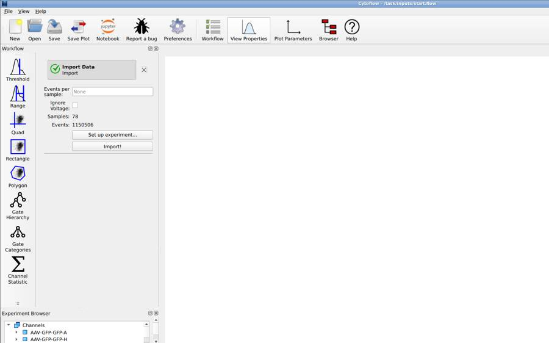
cd /task; cu click 652 75; sleep 1; cu click 62 29; sleep 1; cu screenshot /tmp/screen.png
{
"file_path": "/tmp/screen.png"
}/tmp/screen.png

cd /task; cu key Escape; which xdotool wmctrl xwininfo xrandr 2>&1; cu --help 2>&1 | head -30
/usr/bin/xdotool
/usr/bin/xwininfo
# Computer-use helper: the agent's only way to act on the screen.
# cu screenshot [path] -> PNG of the screen (default /tmp/screen.png); prints path
# cu click X Y [left|right|double]
# cu move X Y | cu drag X1 Y1 X2 Y2 | cu scroll X Y up|down [N]
# cu type "text" (keystrokes) | cu paste "text" (clipboard) | cu key KEYS (e.g. ctrl+s, Return)
# cu cursor -> current mouse position
export DISPLAY=${DISPLAY:-:1}
cmd=$1; shiftcd /task; export DISPLAY=:1; xwininfo -root -tree 2>&1 | grep -v "has no name" | head -30
Parent window id: 0x0 (none)
16 children:
0xe00025 "cytoflow": ("cytoflow" "cytoflow") 213x170+44+41 +44+41
0xe00019 "Qt Clipboard Requestor Window": () 3x3+0+0 +0+0
0xe00008 "cytoflow": () 1x1+0+0 +0+0
0xe00004 "Qt Selection Owner for cytoflow": () 3x3+0+0 +0+0
0xc0000e "Openbox": ("" (none)) 1x1+-100+-100 +-100+-100
1 child:
1 child:
1 child:
3 children:
2 children:
56 children:
0xe00006 "Cytoflow - /task/inputs/start.flow": ("cytoflow" "cytoflow") 2082x1171+1+20 +1+20
4 children:
12 children:
2 children:
1 child:
1 child:
1 child:cd /task; export DISPLAY=:1; xdotool windowsize 0xe00006 1438 878; xdotool windowmove 0xe00006 0 0; sleep 2; cu screenshot /tmp/screen.png
{
"file_path": "/tmp/screen.png"
}/tmp/screen.png

cd /task; cu click 408 692; sleep 1; cu click 20 9; sleep 1; cu screenshot /tmp/screen.png
{
"file_path": "/tmp/screen.png"
}/tmp/screen.png
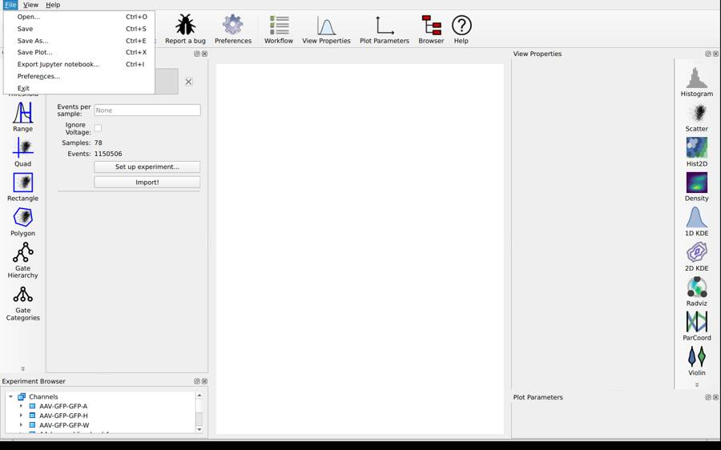
cd /task; cu click 65 81; sleep 2; cu screenshot /tmp/screen.png
{
"file_path": "/tmp/screen.png"
}/tmp/screen.png
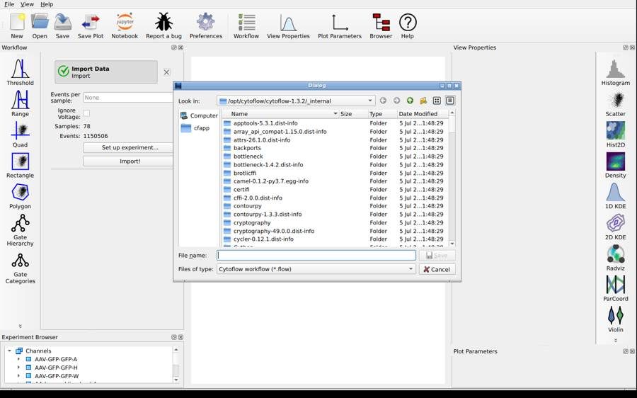
cd /task; mkdir -p outputs; cu click 714 577; cu paste "/task/outputs/workflow.flow"; cu key Return; sleep 2; cu screenshot /tmp/screen.png; ls -la outputs
/tmp/screen.png total 44 drwxrwsrwx 2 agent task 4096 Nov 6 00:34 . drwxr-xr-x 4 root root 4096 Nov 5 22:00 .. -rw-rw-r-- 1 cfapp task 34866 Nov 6 00:34 workflow.flow
cd /task; cu click 240 162; sleep 1; cu click 1391 370; sleep 2; cu screenshot /tmp/screen.png
{
"file_path": "/tmp/screen.png"
}/tmp/screen.png
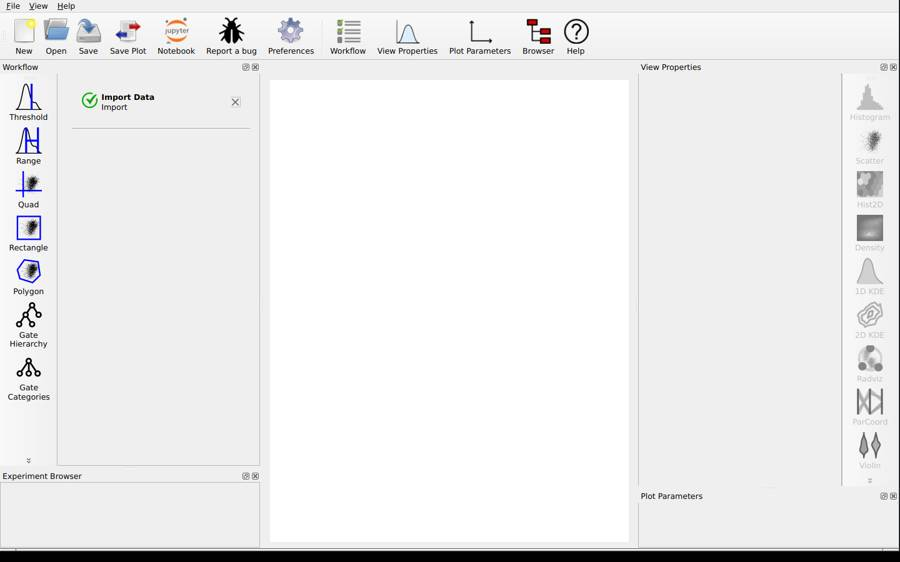
cd /task; cu click 240 162; sleep 1; cu screenshot /tmp/screen.png
{
"file_path": "/tmp/screen.png"
}/tmp/screen.png
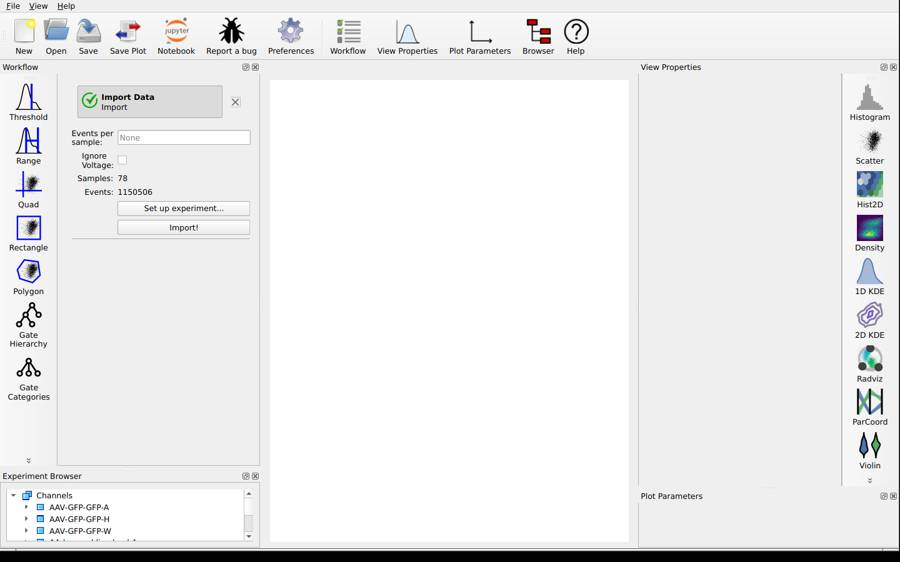
cd /task; cu click 1391 370; sleep 2; cu screenshot /tmp/screen.png
{
"file_path": "/tmp/screen.png"
}/tmp/screen.png
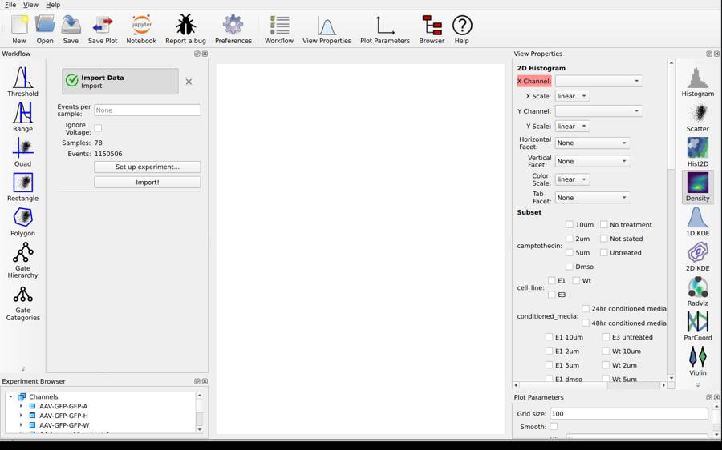
cd /task; cu click 1193 162; sleep 1; cu screenshot /tmp/screen.png
{
"file_path": "/tmp/screen.png"
}/tmp/screen.png
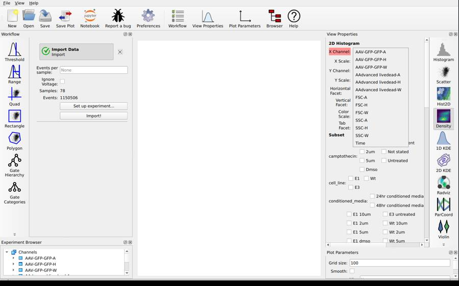
cd /task; cu click 1134 306; sleep 1; cu click 1193 222; sleep 1; cu screenshot /tmp/screen.png
{
"file_path": "/tmp/screen.png"
}/tmp/screen.png

cd /task; cu click 1134 438; sleep 4; cu screenshot /tmp/screen.png
{
"file_path": "/tmp/screen.png"
}/tmp/screen.png
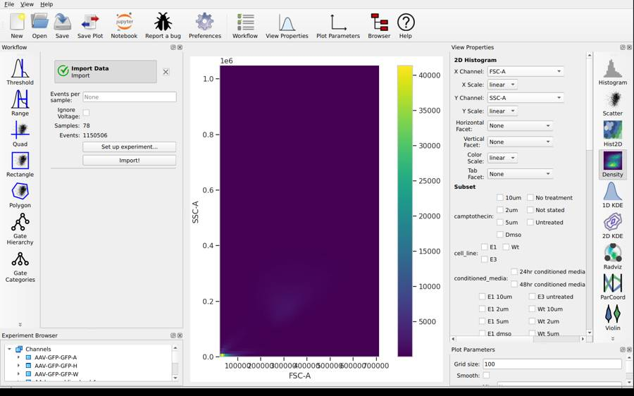
cd /task; cu click 1140 358; sleep 1; cu screenshot /tmp/screen.png
{
"file_path": "/tmp/screen.png"
}/tmp/screen.png

cd /task; cu click 1125 384; sleep 4; cu screenshot /tmp/screen.png
{
"file_path": "/tmp/screen.png"
}/tmp/screen.png
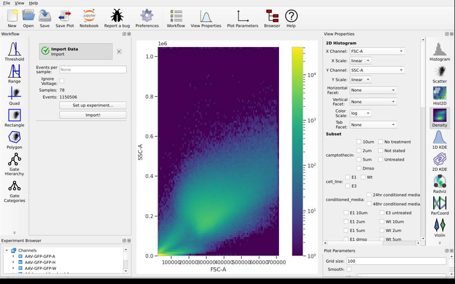
cd /task; cu click 1180 285; sleep 1; cu screenshot /tmp/screen.png
{
"file_path": "/tmp/screen.png"
}/tmp/screen.png
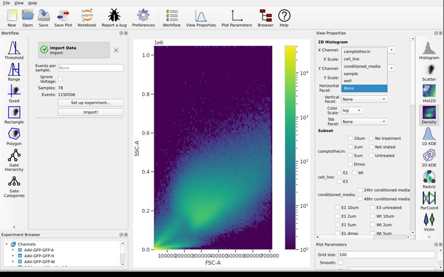
cd /task; cu click 1128 262; sleep 20; cu screenshot /tmp/screen.png
{
"file_path": "/tmp/screen.png"
}/tmp/screen.png
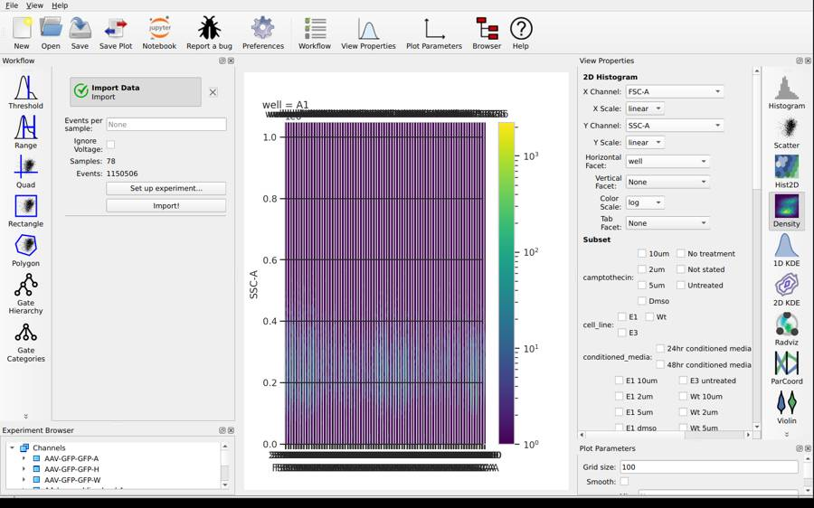
cd /task; cu click 204 60; sleep 2; cu screenshot /tmp/screen.png
{
"file_path": "/tmp/screen.png"
}/tmp/screen.png
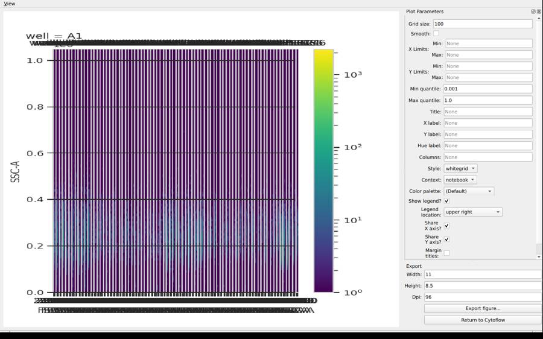
cd /task; cu click 1293 417; cu type "12"; cu key Tab; sleep 15; cu screenshot /tmp/screen.png
{
"file_path": "/tmp/screen.png"
}/tmp/screen.png
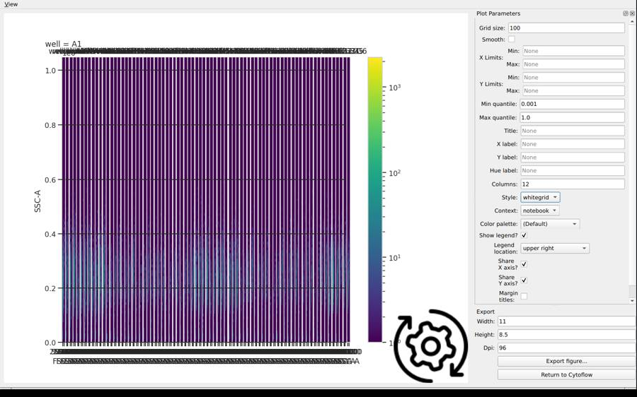
cd /task; sleep 20; cu screenshot /tmp/screen.png
{
"file_path": "/tmp/screen.png"
}/tmp/screen.png
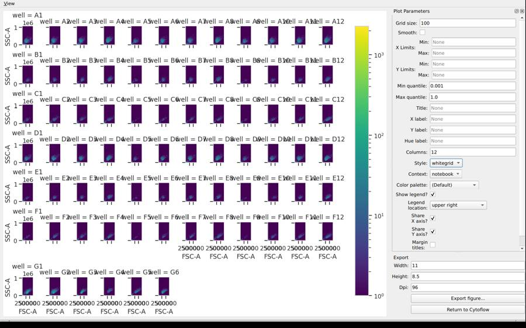
cd /task; cu triple 2>/dev/null; cu click 1280 728 double; cu key ctrl+a; cu type "26"; cu key Tab; cu click 1280 758; cu key ctrl+a; cu type "18"; cu key Tab; cu click 1280 788; cu key ctrl+a; cu type "70"; cu key Tab; sleep 1; cu click 1280 818; sleep 3; cu screenshot /tmp/screen.png
{
"file_path": "/tmp/screen.png"
}# Computer-use helper: the agent's only way to act on the screen.
# cu screenshot [path] -> PNG of the screen (default /tmp/screen.png); prints path
# cu click X Y [left|right|double]
# cu move X Y | cu drag X1 Y1 X2 Y2 | cu scroll X Y up|down [N]
# cu type "text" (keystrokes) | cu paste "text" (clipboard) | cu key KEYS (e.g. ctrl+s, Return)
# cu cursor -> current mouse position
export DISPLAY=${DISPLAY:-:1}
cmd=$1; shift
/tmp/screen.png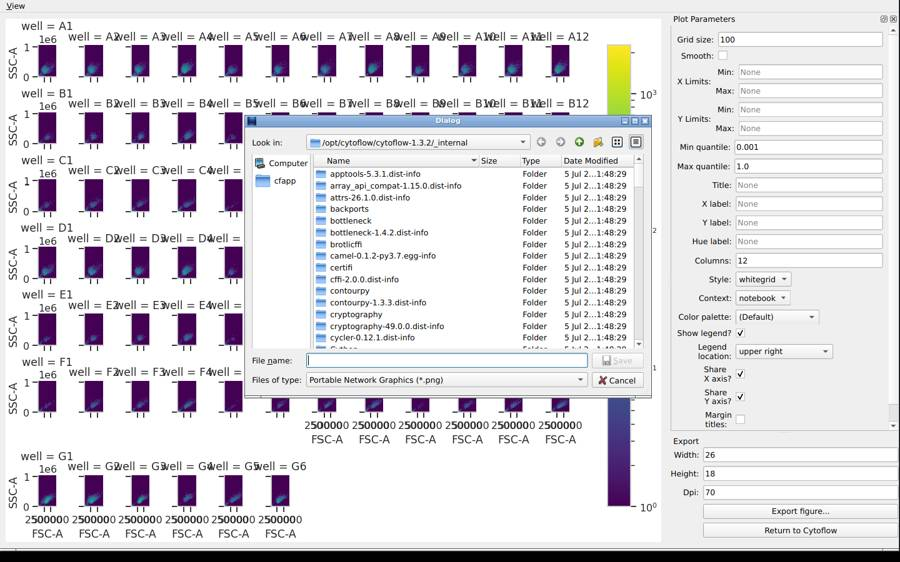
mkdir -p /tmp/cf && chmod 777 /tmp/cf; cd /task; cu click 714 577; cu paste "/tmp/cf/fsc_ssc.png"; cu key Return; sleep 15; ls -la /tmp/cf; cu screenshot /tmp/screen.png
total 368 drwxrwxrwx 2 root root 4096 Nov 6 00:37 . drwxrwxrwx 9 root root 4096 Nov 6 00:37 .. -rw-rw-r-- 1 cfapp cfapp 368140 Nov 6 00:37 fsc_ssc.png /tmp/screen.png
{
"file_path": "/tmp/cf/fsc_ssc.png"
}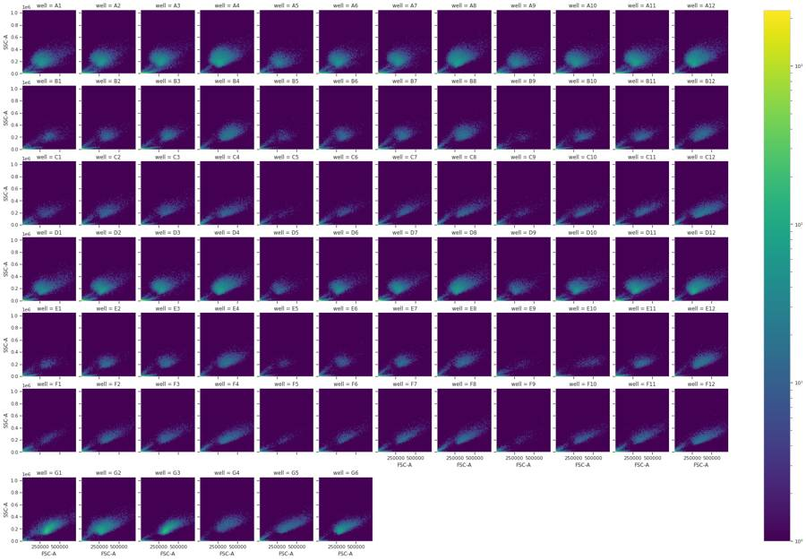
cd /task; cu click 1280 849; sleep 3; cu screenshot /tmp/screen.png
{
"file_path": "/tmp/screen.png"
}/tmp/screen.png
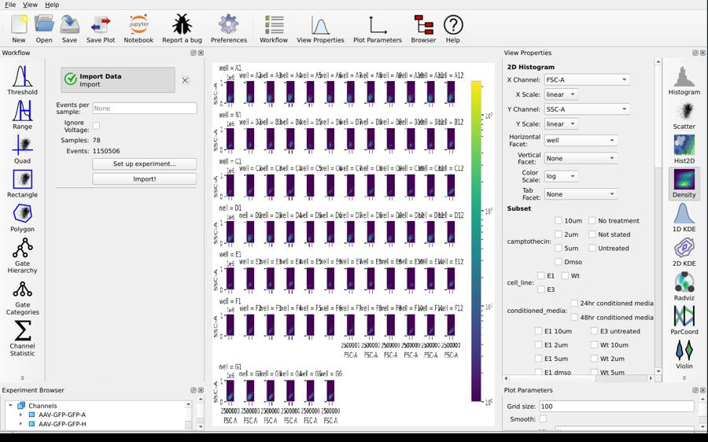
cd /task; cu click 1391 160; sleep 2; cu screenshot /tmp/screen.png
{
"file_path": "/tmp/screen.png"
}/tmp/screen.png
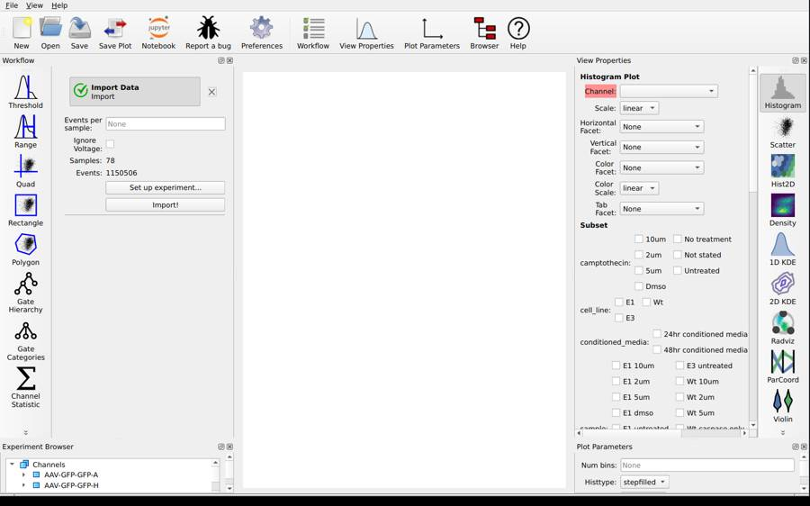
cd /task; cu click 1188 162; sleep 1; cu screenshot /tmp/screen.png
{
"file_path": "/tmp/screen.png"
}/tmp/screen.png
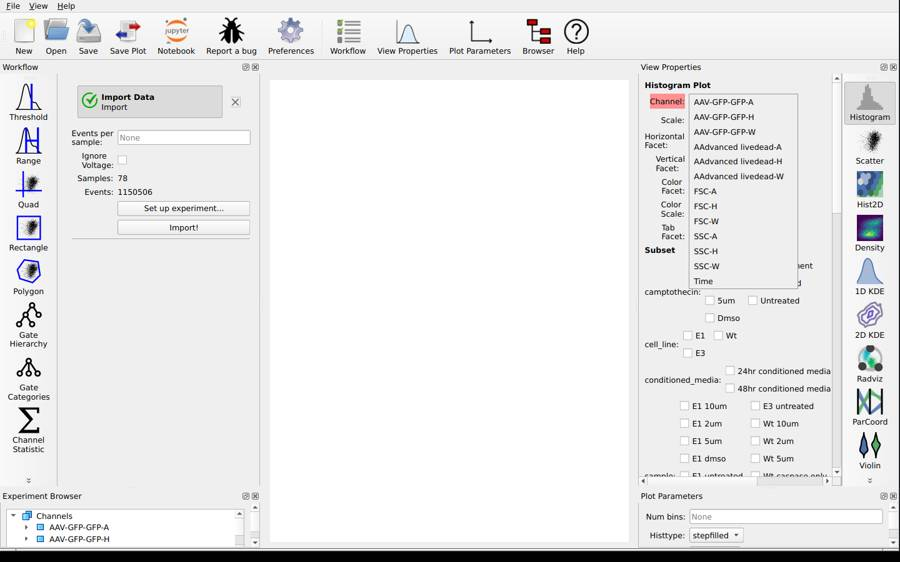
cd /task; cu click 1125 450; sleep 1; cu click 1176 225; sleep 1; cu screenshot /tmp/screen.png
{
"file_path": "/tmp/screen.png"
}/tmp/screen.png
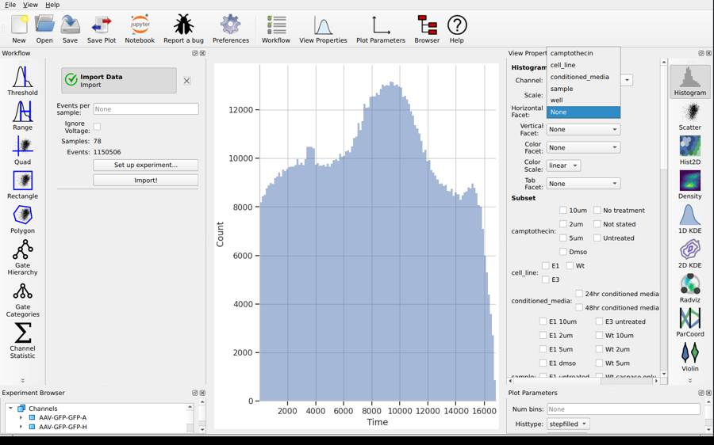
cd /task; cu click 1123 202; sleep 25; cu screenshot /tmp/screen.png
{
"file_path": "/tmp/screen.png"
}/tmp/screen.png
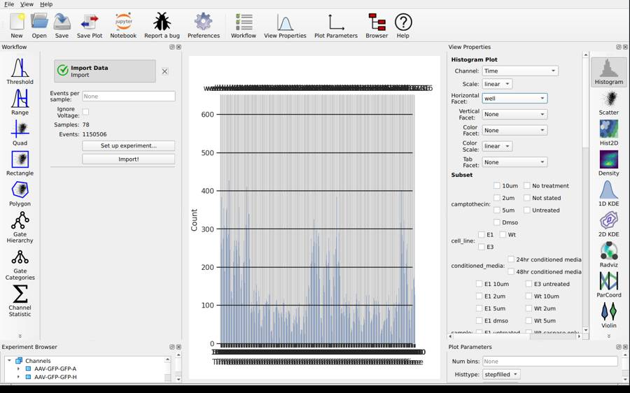
cd /task; cu click 204 60; sleep 3; cu screenshot /tmp/screen.png
{
"file_path": "/tmp/screen.png"
}/tmp/screen.png
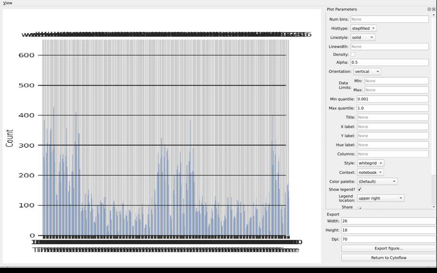
cd /task; cu click 1293 507; cu type "12"; cu key Tab; cu click 1293 326; cu key ctrl+a; cu type "0"; cu key Tab; cu scroll 1250 500 down 5; sleep 1; cu screenshot /tmp/screen.png
{
"file_path": "/tmp/screen.png"
}/tmp/screen.png
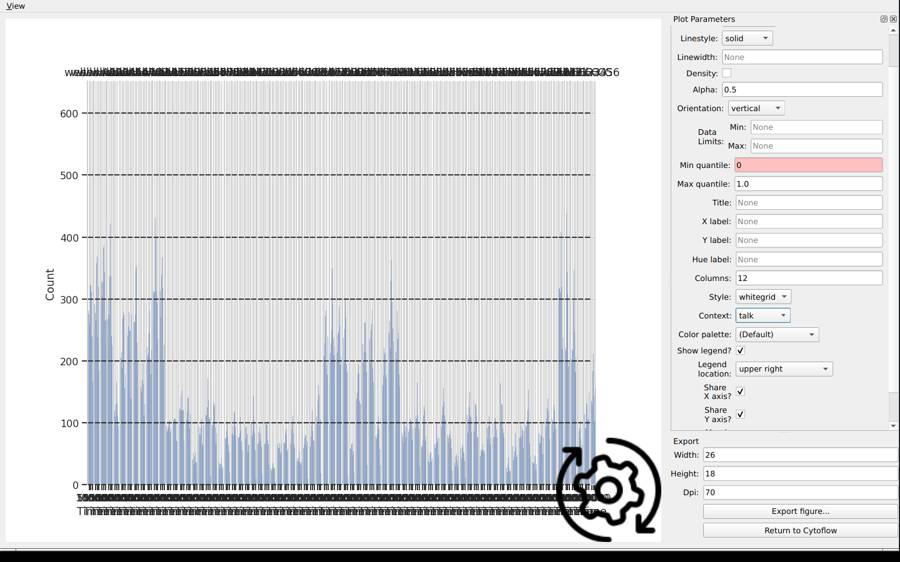
cd /task; cu click 1293 264; cu key ctrl+a; cu type "0.0001"; cu key Tab; sleep 1; cu click 1220 505; sleep 1; cu screenshot /tmp/screen.png
{
"file_path": "/tmp/screen.png"
}/tmp/screen.png
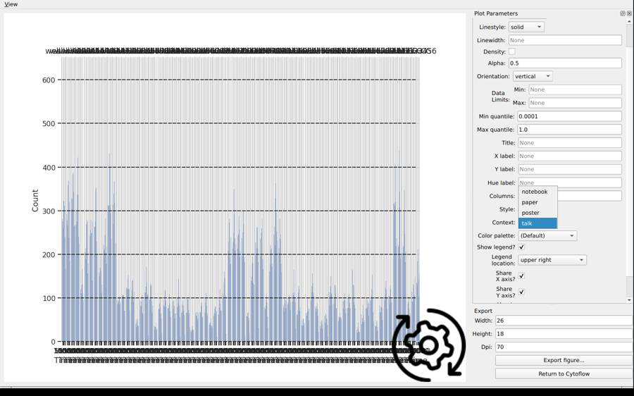
cd /task; cu click 1214 435; sleep 1; cu click 1184 663; sleep 30; cu screenshot /tmp/screen.png
{
"file_path": "/tmp/screen.png"
}/tmp/screen.png
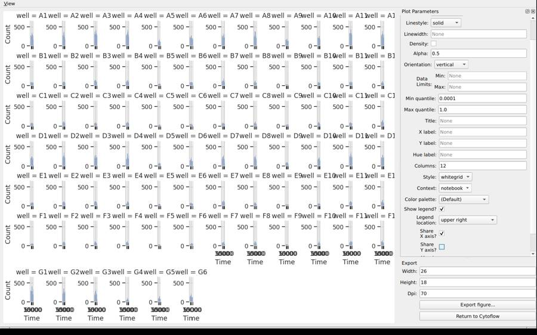
cd /task; cu click 1184 627; sleep 40; cu screenshot /tmp/screen.png
{
"file_path": "/tmp/screen.png"
}/tmp/screen.png
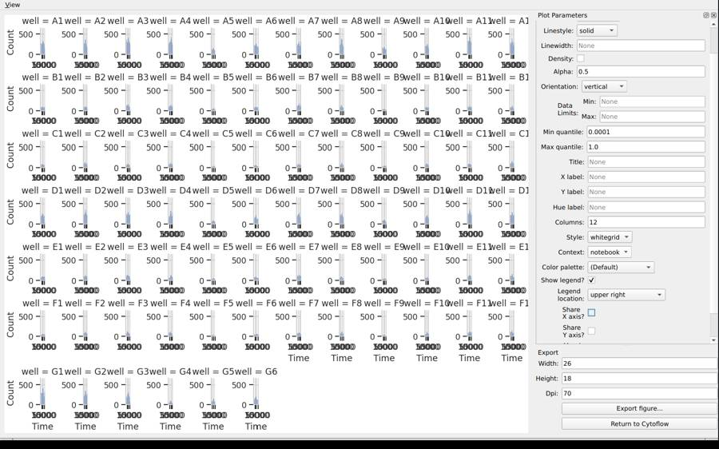
cd /task; cu click 1280 849; sleep 2; cu click 1391 230; sleep 2; cu screenshot /tmp/screen.png
{
"file_path": "/tmp/screen.png"
}/tmp/screen.png
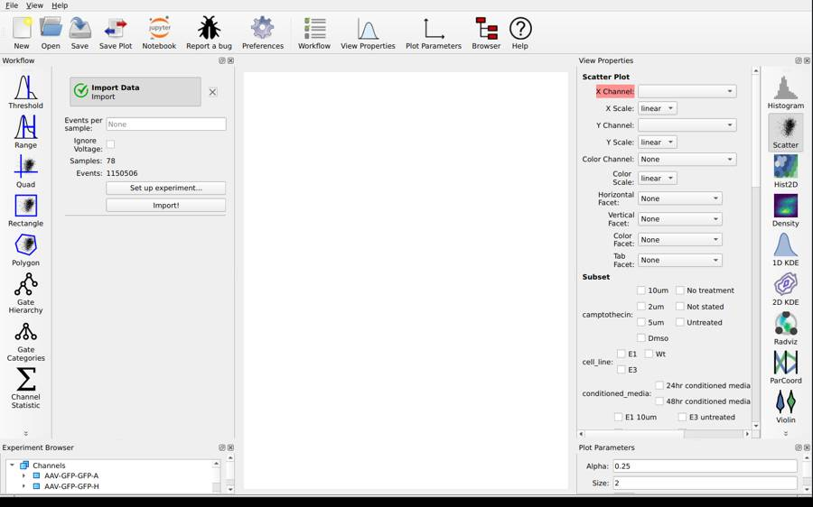
cd /task; cu click 1217 162; sleep 1; cu screenshot /tmp/screen.png
{
"file_path": "/tmp/screen.png"
}/tmp/screen.png
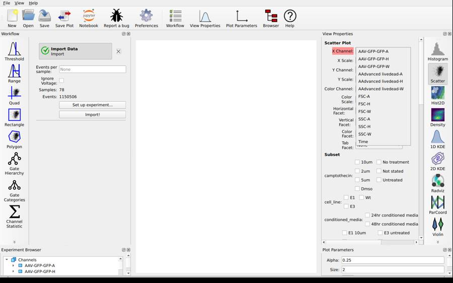
cd /task; cu click 1155 450; sleep 1; cu click 1217 222; sleep 1; cu screenshot /tmp/screen.png
{
"file_path": "/tmp/screen.png"
}/tmp/screen.png
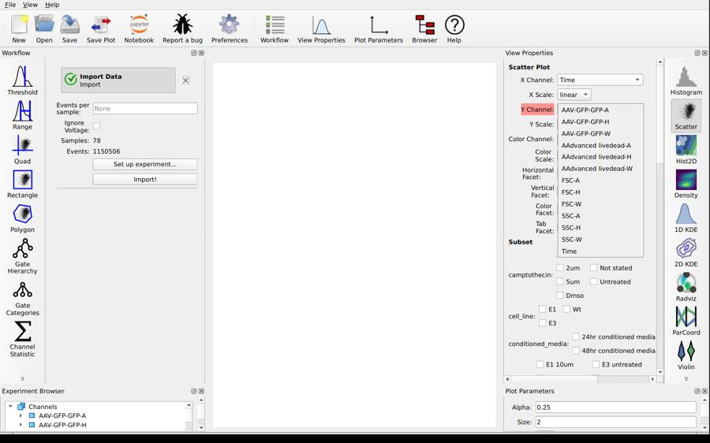
cd /task; cu click 1157 366; sleep 2; cu click 1204 352; sleep 1; cu screenshot /tmp/screen.png
{
"file_path": "/tmp/screen.png"
}/tmp/screen.png
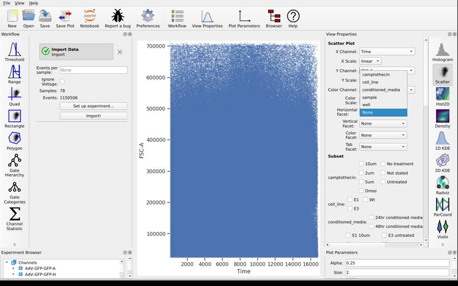
cd /task; cu click 1152 329; sleep 30; cu click 204 60; sleep 30; cu screenshot /tmp/screen.png
{
"file_path": "/tmp/screen.png"
}/tmp/screen.png
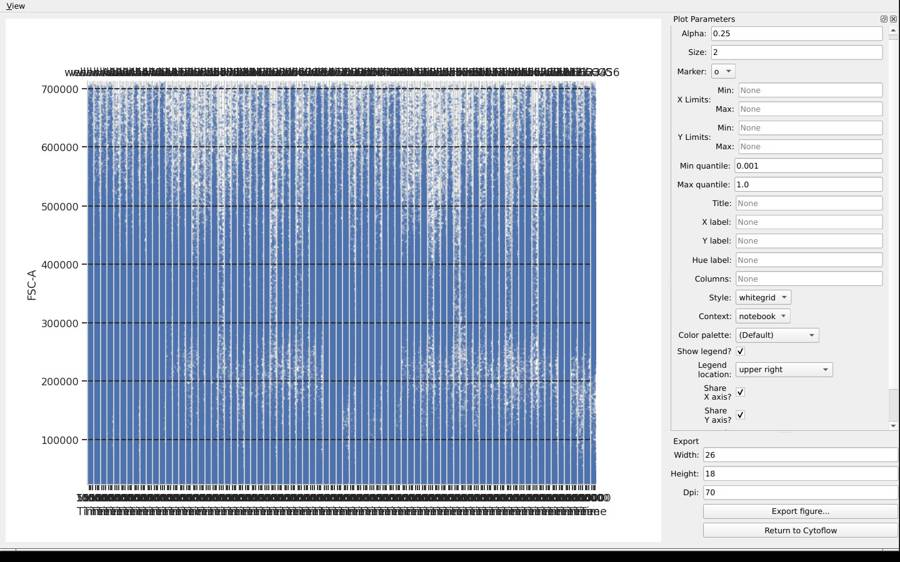
cd /task; cu click 1293 446; cu type "12"; cu key Tab; sleep 40; cu click 1280 818; sleep 2; cu screenshot /tmp/screen.png
{
"file_path": "/tmp/screen.png"
}/tmp/screen.png
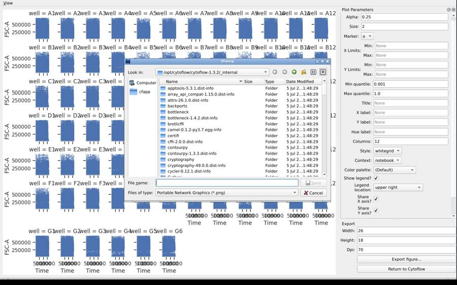
cd /task; cu click 714 577; cu paste "/tmp/cf/time_fsc.png"; cu key Return; sleep 40; ls -la /tmp/cf
total 2872 drwxrwxrwx 2 root root 4096 Nov 6 00:42 . drwxrwxrwx 9 root root 4096 Nov 6 00:42 .. -rw-rw-r-- 1 cfapp cfapp 368140 Nov 6 00:37 fsc_ssc.png -rw-rw-r-- 1 cfapp cfapp 2561373 Nov 6 00:42 time_fsc.png
{
"file_path": "/tmp/cf/time_fsc.png"
}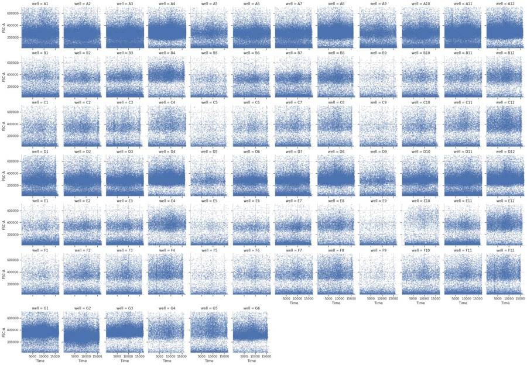
cd /tmp/cf; python3 -c "
from PIL import Image
im=Image.open('time_fsc.png'); print(im.size)
" 2>&1(1827, 1268) Shell cwd was reset to /task
cd /task; cu click 1280 788; cu key ctrl+a; cu type "140"; cu key Tab; sleep 1; cu click 1280 818; sleep 2; cu click 714 577; cu paste "/tmp/cf/time_fsc_hi.png"; cu key Return; sleep 60; ls -la /tmp/cf
total 10672 drwxrwxrwx 2 root root 4096 Nov 6 00:43 . drwxrwxrwx 9 root root 4096 Nov 6 00:43 .. -rw-rw-r-- 1 cfapp cfapp 368140 Nov 6 00:37 fsc_ssc.png -rw-rw-r-- 1 cfapp cfapp 2561373 Nov 6 00:42 time_fsc.png -rw-rw-r-- 1 cfapp cfapp 7987135 Nov 6 00:43 time_fsc_hi.png
mkdir -p /tmp/crops; cd /tmp; python3 -c "
from PIL import Image
im=Image.open('/tmp/cf/time_fsc_hi.png'); W,H=im.size; print(W,H)
# rows: 7 rows; split into 7 horizontal strips, each into 2 halves
rh=H/7.0
for r in range(7):
strip=im.crop((0,int(r*rh),W,int((r+1)*rh)))
w=strip.size[0]
strip.crop((0,0,w//2,strip.size[1])).save(f'/tmp/crops/tf_r{r}_a.png')
strip.crop((w//2,0,w,strip.size[1])).save(f'/tmp/crops/tf_r{r}_b.png')
"3656 2536 Shell cwd was reset to /task
{
"file_path": "/tmp/crops/tf_r3_a.png"
}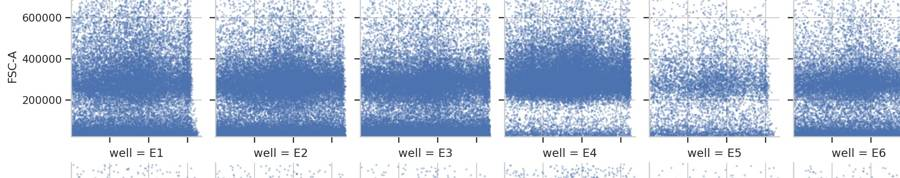
{
"file_path": "/tmp/crops/tf_r4_b.png"
}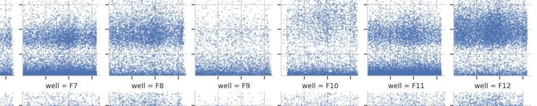
cd /tmp; cat > /tmp/crop.py <<'EOF'
import sys
from PIL import Image
src, prefix, scale = sys.argv[1], sys.argv[2], float(sys.argv[3])
ys=[12,183,355,526,697,869,1070,1268]
im=Image.open(src); W,H=im.size
for r in range(7):
y0=int(max(0,(ys[r]-10)*scale)); y1=int(min(H,(ys[r+1]-10)*scale))
strip=im.crop((0,y0,W,y1))
w=strip.size[0]
# 12 panels across ~ x 0..1650 (lowres) ; split in half at panel 6
cut=int(850*scale)
strip.crop((0,0,cut,strip.size[1])).save(f'{prefix}_r{r}_a.png')
strip.crop((cut-int(20*scale),0,w,strip.size[1])).save(f'{prefix}_r{r}_b.png')
EOF
python3 /tmp/crop.py /tmp/cf/time_fsc_hi.png /tmp/crops/tf 2.0{
"file_path": "/tmp/crops/tf_r4_b.png"
}Shell cwd was reset to /task
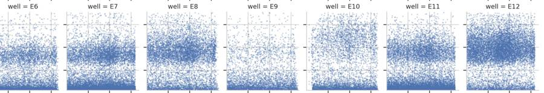
{
"file_path": "/tmp/crops/tf_r3_a.png"
}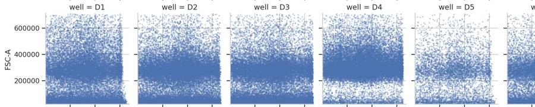
{
"file_path": "/tmp/crops/tf_r3_b.png"
}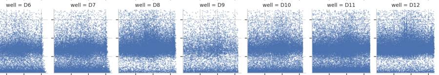
{
"file_path": "/tmp/crops/tf_r0_a.png"
}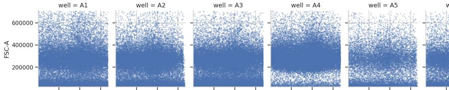
{
"file_path": "/tmp/crops/tf_r0_b.png"
}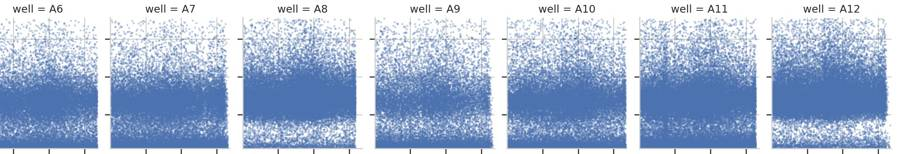
cd /task; cu click 1280 849; sleep 3; cu click 45 440; sleep 3; cu screenshot /tmp/screen.png
{
"file_path": "/tmp/screen.png"
}/tmp/screen.png
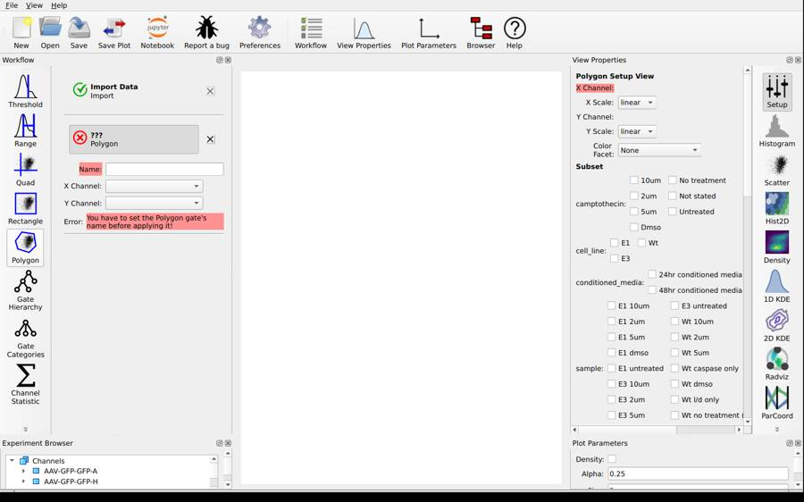
cd /task; cu click 294 303; cu type "Cells"; cu key Tab; sleep 1; cu click 276 334; sleep 1; cu screenshot /tmp/screen.png
{
"file_path": "/tmp/screen.png"
}/tmp/screen.png
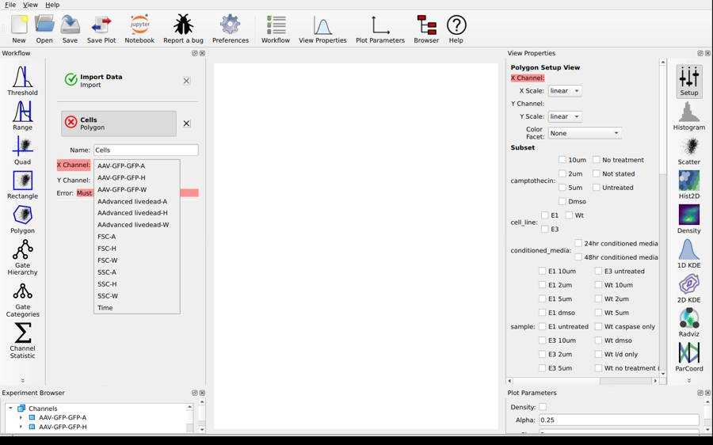
cd /task; cu click 215 478; sleep 1; cu click 276 364; sleep 1; cu screenshot /tmp/screen.png
{
"file_path": "/tmp/screen.png"
}/tmp/screen.png
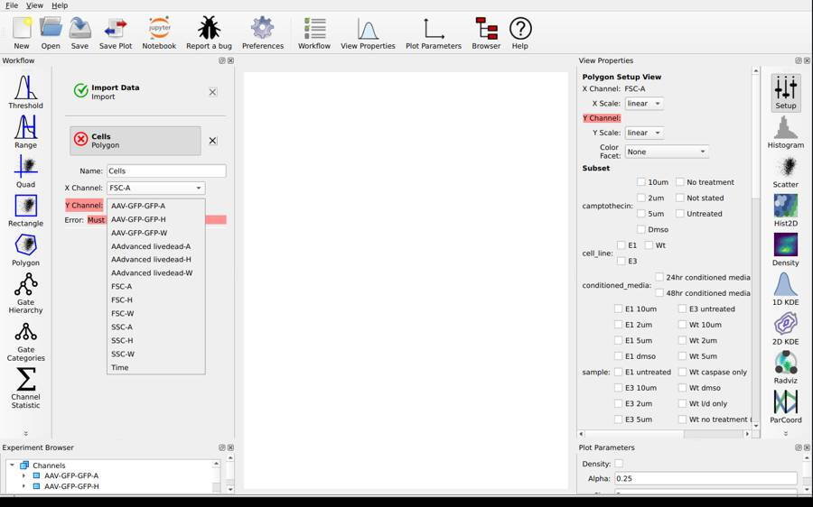
cd /task; cu click 215 580; sleep 15; cu screenshot /tmp/screen.png
{
"file_path": "/tmp/screen.png"
}/tmp/screen.png
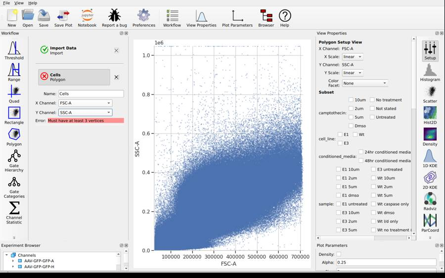
cd /task; cu click 1096 823; sleep 15; cu screenshot /tmp/screen.png
{
"file_path": "/tmp/screen.png"
}/tmp/screen.png
cd /task; cu click 1140 269; sleep 1; cu screenshot /tmp/screen.png
{
"file_path": "/tmp/screen.png"
}/tmp/screen.png
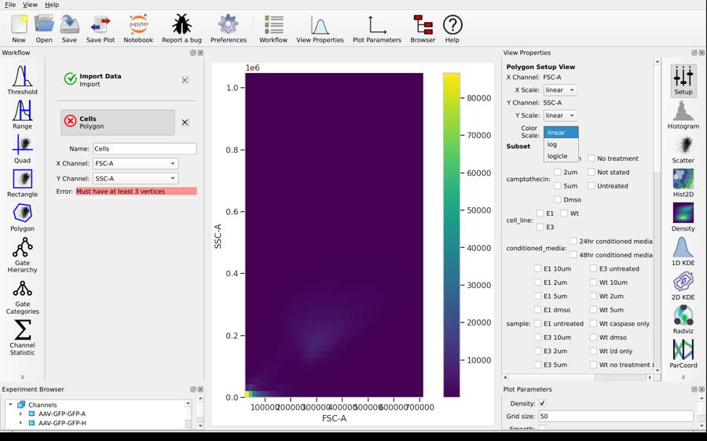
cd /task; cu click 1125 294; sleep 3; cu click 1250 849; cu key ctrl+a; cu type "120"; cu key Tab; sleep 15; cu screenshot /tmp/screen.png
{
"file_path": "/tmp/screen.png"
}/tmp/screen.png
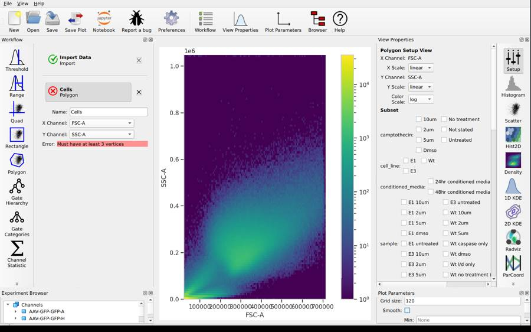
cd /task; cu click 540 766; sleep 0.5; cu click 572 788; sleep 0.5; cu click 710 788; sleep 0.5; cu click 880 747; sleep 0.5; cu click 880 155; sleep 0.5; cu click 560 155; sleep 0.5; cu click 540 600 double; sleep 15; cu screenshot /tmp/screen.png
{
"file_path": "/tmp/screen.png"
}/tmp/screen.png
cd /task; sleep 5; cu screenshot /tmp/screen.png
{
"file_path": "/tmp/screen.png"
}/tmp/screen.png

cd /task; cu click 540 766; sleep 15; cu screenshot /tmp/screen.png
{
"file_path": "/tmp/screen.png"
}/tmp/screen.png
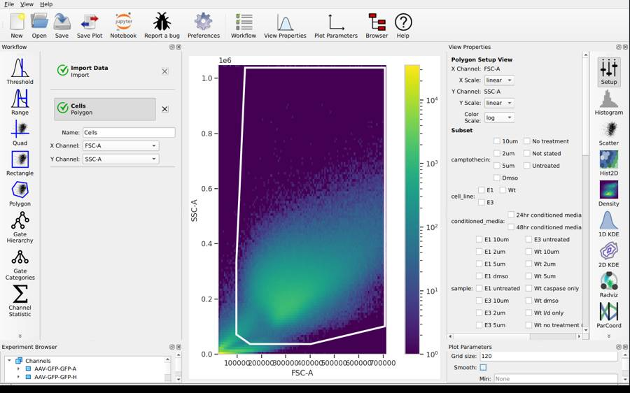
cd /task; cu key ctrl+s; sleep 2; cu click 45 440; sleep 3; cu click 294 390; cu type "Singlets"; cu key Tab; sleep 1; cu screenshot /tmp/screen.png
{
"file_path": "/tmp/screen.png"
}/tmp/screen.png
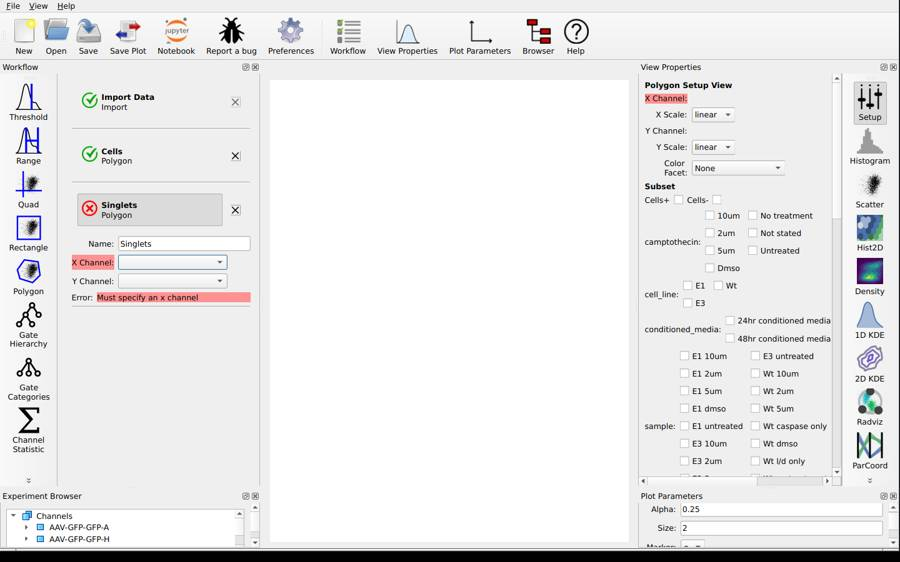
cd /task; cu click 276 420; sleep 1; cu screenshot /tmp/screen.png
{
"file_path": "/tmp/screen.png"
}/tmp/screen.png
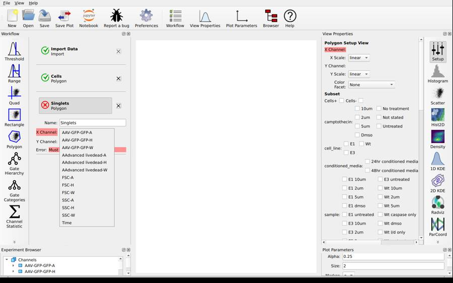
cd /task; cu click 215 564; sleep 1; cu click 276 450; sleep 1; cu screenshot /tmp/screen.png
{
"file_path": "/tmp/screen.png"
}/tmp/screen.png
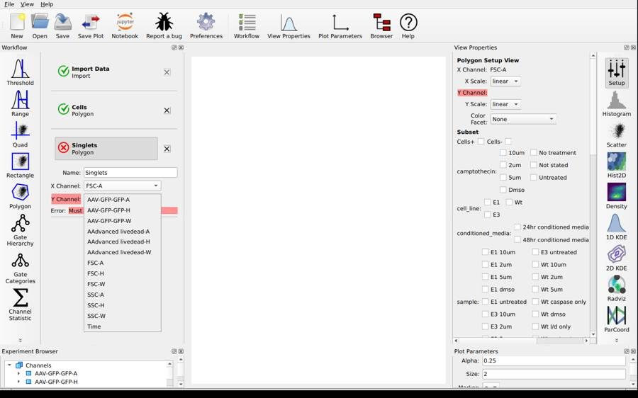
cd /task; cu click 215 618; sleep 2; cu click 1085 320; sleep 15; cu screenshot /tmp/screen.png
{
"file_path": "/tmp/screen.png"
}/tmp/screen.png
cd /task; cu scroll 1035 830 up 3; sleep 1; cu screenshot /tmp/screen.png
{
"file_path": "/tmp/screen.png"
}/tmp/screen.png
cd /task; cu click 1096 823; sleep 12; cu click 1140 269; sleep 1; cu click 1125 294; sleep 12; cu screenshot /tmp/screen.png
{
"file_path": "/tmp/screen.png"
}/tmp/screen.png
cd /task; cu click 1250 849; cu key ctrl+a; cu type "120"; cu key Tab; sleep 15; cu screenshot /tmp/screen.png
{
"file_path": "/tmp/screen.png"
}/tmp/screen.png
cd /task; cu click 1100 485; sleep 12; cu screenshot /tmp/screen.png
{
"file_path": "/tmp/screen.png"
}/tmp/screen.png
cd /task; cu click 1100 485; sleep 1; cu click 1149 457; sleep 12; cu screenshot /tmp/screen.png
{
"file_path": "/tmp/screen.png"
}/tmp/screen.png
cd /task; cu click 1149 457; sleep 1; cu scroll 1035 840 down 2; sleep 12; cu screenshot /tmp/screen.png
{
"file_path": "/tmp/screen.png"
}/tmp/screen.png
cd /task; cu drag 1230 782 1230 480; sleep 2; cu screenshot /tmp/screen.png
{
"file_path": "/tmp/screen.png"
}/tmp/screen.png
cd /task; cu scroll 1050 600 up 2; sleep 1; cu screenshot /tmp/screen.png
{
"file_path": "/tmp/screen.png"
}/tmp/screen.png
cd /task; cu click 1270 565; cu type "0"; cu key Tab; sleep 1; cu click 1270 596; cu type "800000"; cu key Tab; sleep 1; cu click 1270 626; cu type "0"; cu key Tab; sleep 1; cu click 1270 656; cu type "500000"; cu key Tab; sleep 20; cu screenshot /tmp/screen.png
{
"file_path": "/tmp/screen.png"
}/tmp/screen.png
cd /task; python3 -c "
from PIL import Image
im=Image.open('/tmp/screen.png').crop((535,130,880,812)); im=im.resize((im.size[0]*2,im.size[1]*2)); im.save('/tmp/crops/sing.png')"(Bash completed with no output)
{
"file_path": "/tmp/crops/sing.png"
}cd /task; for p in "573 770" "642 682" "748 541" "851 407" "851 165" "706 407" "573 662"; do cu click $p; sleep 0.7; done; cu click 573 770; sleep 15; cu screenshot /tmp/screen.png
{
"file_path": "/tmp/screen.png"
}/tmp/screen.png
cd /task; cu key ctrl+s; sleep 2; cu click 45 230; sleep 3; cu screenshot /tmp/screen.png
{
"file_path": "/tmp/screen.png"
}/tmp/screen.png
cd /task; cu click 288 476; cu type "Live"; cu key Tab; sleep 1; cu click 264 506; sleep 1; cu screenshot /tmp/screen.png
{
"file_path": "/tmp/screen.png"
}/tmp/screen.png
cd /task; cu click 255 579; sleep 2; cu click 1085 268; sleep 1; cu click 1105 290; sleep 2; cu click 1128 183; sleep 1; cu screenshot /tmp/screen.png
{
"file_path": "/tmp/screen.png"
}/tmp/screen.png
cd /task; cu click 1122 233; sleep 15; cu screenshot /tmp/screen.png
{
"file_path": "/tmp/screen.png"
}/tmp/screen.png
cd /task; cu click 1391 370; sleep 3; cu screenshot /tmp/screen.png
{
"file_path": "/tmp/screen.png"
}/tmp/screen.png
cd /task; cu click 1193 162; sleep 1; cu click 1160 163; sleep 1; cu click 1193 222; sleep 1; cu screenshot /tmp/screen.png
{
"file_path": "/tmp/screen.png"
}/tmp/screen.png
cd /task; cu click 1185 295; sleep 1; cu click 1140 192; sleep 1; cu screenshot /tmp/screen.png
{
"file_path": "/tmp/screen.png"
}/tmp/screen.png
cd /task; cu click 1135 241; sleep 3; cu click 1140 252; sleep 1; cu screenshot /tmp/screen.png
{
"file_path": "/tmp/screen.png"
}/tmp/screen.png
cd /task; cu click 1135 301; sleep 3; cu click 1140 395; sleep 1; cu screenshot /tmp/screen.png
{
"file_path": "/tmp/screen.png"
}/tmp/screen.png
cd /task; cu click 1125 420; sleep 3; cu click 1180 285; sleep 1; cu screenshot /tmp/screen.png
{
"file_path": "/tmp/screen.png"
}/tmp/screen.png
cd /task; cu click 1128 262; sleep 5; cu scroll 1060 400 down 3; sleep 1; cu screenshot /tmp/screen.png
{
"file_path": "/tmp/screen.png"
}/tmp/screen.png
cd /task; cu click 1085 295; sleep 1; cu click 1105 317; sleep 40; cu screenshot /tmp/screen.png
{
"file_path": "/tmp/screen.png"
}/tmp/screen.png
cd /task; cu click 204 60; sleep 30; cu screenshot /tmp/screen.png
{
"file_path": "/tmp/screen.png"
}/tmp/screen.png
cd /task; cu click 1293 417; cu type "12"; cu key Tab; sleep 1; cu click 1293 63; cu key ctrl+a; cu type "100"; cu key Tab; sleep 45; cu click 1280 818; sleep 2; cu click 714 577; cu paste "/tmp/cf/bl1_bl2.png"; cu key Return; sleep 45; ls -la /tmp/cf
total 11488 drwxrwxrwx 2 root root 4096 Nov 6 00:56 . drwxrwxrwx 10 root root 4096 Nov 6 00:55 .. -rw-rw-r-- 1 cfapp cfapp 834548 Nov 6 00:56 bl1_bl2.png -rw-rw-r-- 1 cfapp cfapp 368140 Nov 6 00:37 fsc_ssc.png -rw-rw-r-- 1 cfapp cfapp 2561373 Nov 6 00:42 time_fsc.png -rw-rw-r-- 1 cfapp cfapp 7987135 Nov 6 00:43 time_fsc_hi.png
cd /tmp; python3 -c "
from PIL import Image
im=Image.open('/tmp/cf/bl1_bl2.png'); print(im.size)
im.resize((im.size[0]//2, im.size[1]//2)).save('/tmp/crops/bl_small.png')"(3656, 2536) Shell cwd was reset to /task
{
"file_path": "/tmp/crops/bl_small.png"
}thinking
Unstained G1, caspase-only G3 and experimental B1 look the same under SYTOX, while L/D-only G2 shows broad staining. I'm checking the caspase (BL1) channel per well next.
cd /task; cu click 1280 849; sleep 3; cu click 1391 230; sleep 3; cu screenshot /tmp/screen.png
{
"file_path": "/tmp/screen.png"
}/tmp/screen.png
cd /task; cu scroll 1060 300 up 10; sleep 1; cu screenshot /tmp/screen.png
{
"file_path": "/tmp/screen.png"
}/tmp/screen.png
cd /task; cu click 1188 162; sleep 1; cu click 1160 163; sleep 2; cu click 1085 422; sleep 1; cu click 1105 444; sleep 2; cu click 1176 225; sleep 1; cu screenshot /tmp/screen.png
{
"file_path": "/tmp/screen.png"
}/tmp/screen.png
cd /task; cu click 1123 202; sleep 30; cu click 204 60; sleep 30; cu screenshot /tmp/screen.png
{
"file_path": "/tmp/screen.png"
}/tmp/screen.png
cd /task; cu click 1293 507; cu type "12"; cu key Tab; sleep 1; cu click 1162 179; sleep 1; cu click 1283 63; cu type "80"; cu key Tab; sleep 1; cu click 1280 788; cu key ctrl+a; cu type "80"; cu key Tab; sleep 60; cu screenshot /tmp/screen.png
{
"file_path": "/tmp/screen.png"
}/tmp/screen.png
cd /task; cu click 1280 818; sleep 2; cu click 714 577; cu paste "/tmp/cf/bl1_hist_lin.png"; cu key Return; sleep 30; ls -la /tmp/cf; python3 -c "
from PIL import Image
im=Image.open('/tmp/cf/bl1_hist_lin.png'); print(im.size)"total 11612 drwxrwxrwx 2 root root 4096 Nov 6 01:00 . drwxrwxrwx 10 root root 4096 Nov 6 00:59 .. -rw-rw-r-- 1 cfapp cfapp 834548 Nov 6 00:56 bl1_bl2.png -rw-rw-r-- 1 cfapp cfapp 123781 Nov 6 01:00 bl1_hist_lin.png -rw-rw-r-- 1 cfapp cfapp 368140 Nov 6 00:37 fsc_ssc.png -rw-rw-r-- 1 cfapp cfapp 2561373 Nov 6 00:42 time_fsc.png -rw-rw-r-- 1 cfapp cfapp 7987135 Nov 6 00:43 time_fsc_hi.png (2089, 1449)
{
"file_path": "/tmp/cf/bl1_hist_lin.png"
}thinking
The caspase (BL1-A) signal shows no distinct bright population on a linear scale, and the caspase-only control overlaps the unstained one. I'm switching to a logicle scale to look for a positive tail.
cd /task; cu click 1280 849; sleep 3; cu click 1135 192; sleep 1; cu screenshot /tmp/screen.png
{
"file_path": "/tmp/screen.png"
}/tmp/screen.png
cd /task; cu click 1130 241; sleep 60; cu click 204 60; sleep 5; cu click 1280 818; sleep 2; cu click 714 577; cu paste "/tmp/cf/bl1_hist_logicle.png"; cu key Return; sleep 45; ls -la /tmp/cf | grep logicle
-rw-rw-r-- 1 cfapp cfapp 114545 Nov 6 01:02 bl1_hist_logicle.png
{
"file_path": "/tmp/cf/bl1_hist_logicle.png"
}cd /task; cu drag 210 785 210 450; sleep 1; cu screenshot /tmp/screen.png
{
"file_path": "/tmp/screen.png"
}/tmp/screen.png
cd /task; cu click 1280 849; sleep 3; cu click 1128 192; sleep 1; cu click 1125 217; sleep 3; cu click 1176 225; sleep 1; cu screenshot /tmp/screen.png
{
"file_path": "/tmp/screen.png"
}/tmp/screen.png
cd /task; cu click 1126 250; sleep 1; cu click 1085 422; sleep 1; cu click 1105 444; sleep 15; cu screenshot /tmp/screen.png
{
"file_path": "/tmp/screen.png"
}/tmp/screen.png

cd /task; sleep 10; cu screenshot /tmp/screen.png
{
"file_path": "/tmp/screen.png"
}/tmp/screen.png
cd /task; cu click 1176 225; sleep 1; cu click 1135 155; sleep 20; cu screenshot /tmp/screen.png
{
"file_path": "/tmp/screen.png"
}/tmp/screen.png
cd /task; cu click 1176 225; sleep 1; cu click 1126 250; sleep 1; cu scroll 1220 840 down 10; sleep 1; cu screenshot /tmp/screen.png
{
"file_path": "/tmp/screen.png"
}/tmp/screen.png
cd /task; cu click 1176 225; sleep 1; cu screenshot /tmp/screen.png
{
"file_path": "/tmp/screen.png"
}/tmp/screen.png
cd /task; cu click 1126 274; sleep 2; cu click 1176 298; sleep 1; cu screenshot /tmp/screen.png
{
"file_path": "/tmp/screen.png"
}/tmp/screen.png
cd /task; cu click 1122 251; sleep 2; cu scroll 1180 650 down 10; sleep 1; cu screenshot /tmp/screen.png
{
"file_path": "/tmp/screen.png"
}/tmp/screen.png
cd /task; for y in 181 238 266 294; do cu click 1208 $y; sleep 2; done; sleep 20; cu screenshot /tmp/screen.png
{
"file_path": "/tmp/screen.png"
}/tmp/screen.png
cd /task; cu scroll 1180 300 up 15; sleep 1; cu screenshot /tmp/screen.png
{
"file_path": "/tmp/screen.png"
}/tmp/screen.png
cd /task; sleep 5; cu click 1176 308; sleep 1; cu screenshot /tmp/screen.png
{
"file_path": "/tmp/screen.png"
}/tmp/screen.png
cd /task; cu click 1126 453; sleep 2; cu scroll 1220 840 up 30; sleep 1; cu drag 1230 782 1230 300; sleep 1; cu screenshot /tmp/screen.png
{
"file_path": "/tmp/screen.png"
}/tmp/screen.png
cd /task; cu click 1268 789 ; cu key ctrl+a; cu key BackSpace; cu key Tab; sleep 1; cu click 1110 461; sleep 25; cu screenshot /tmp/screen.png
{
"file_path": "/tmp/screen.png"
}/tmp/screen.png
cd /tmp; python3 -c "
from PIL import Image
im=Image.open('/tmp/cf/bl1_bl2.png'); W,H=im.size
# rows approx: 7 rows over 2536 px
im.crop((0,2130,1900,2536)).save('/tmp/crops/bl_G.png')
im.crop((0,350,1900,720)).save('/tmp/crops/bl_B_a.png')
im.crop((0,0,1900,360)).save('/tmp/crops/bl_A_a.png')
"Shell cwd was reset to /task
{
"file_path": "/tmp/crops/bl_G.png"
}{
"file_path": "/tmp/crops/bl_B_a.png"
}thinking
Well B1 (labelled E1 10 µM) shows a tight, unstained-like SYTOX profile unlike the other wells, which points to a staining failure, so I'll check it quantitatively next.
cd /task; cu click 1135 129; sleep 1; cu screenshot /tmp/screen.png
{
"file_path": "/tmp/screen.png"
}/tmp/screen.png
cd /task; cu click 1128 83; sleep 20; cu screenshot /tmp/screen.png
{
"file_path": "/tmp/screen.png"
}/tmp/screen.png
cd /task; cu drag 1230 300 1230 700; sleep 1; cu screenshot /tmp/screen.png
{
"file_path": "/tmp/screen.png"
}/tmp/screen.png
cd /task; cu scroll 1180 500 down 3; sleep 1; cu screenshot /tmp/screen.png
{
"file_path": "/tmp/screen.png"
}/tmp/screen.png
cd /task; for y in 556 612 640 669; do cu click 1208 $y; sleep 1.5; done; cu click 1208 472; sleep 1.5; cu click 1208 584; sleep 1.5; cu click 1094 444; sleep 1.5; cu click 1094 528; sleep 1.5; cu click 1085 172; sleep 1.5; cu click 1105 194; sleep 25; cu screenshot /tmp/screen.png
{
"file_path": "/tmp/screen.png"
}/tmp/screen.png
cd /task; cu click 1110 861; sleep 1; cu click 1160 775; sleep 1; cu screenshot /tmp/screen.png
{
"file_path": "/tmp/screen.png"
}/tmp/screen.png
cd /task; cu click 1140 776; sleep 1; for p in "1094 444" "1094 528" "1208 472" "1208 584"; do cu click $p; sleep 1.5; done; cu scroll 1180 300 up 10; sleep 1; cu screenshot /tmp/screen.png
{
"file_path": "/tmp/screen.png"
}/tmp/screen.png
cd /task; cu click 1176 308; sleep 1; cu screenshot /tmp/screen.png
{
"file_path": "/tmp/screen.png"
}/tmp/screen.png
cd /task; cu click 1126 477; sleep 2; cu click 1176 163; sleep 1; cu screenshot /tmp/screen.png
{
"file_path": "/tmp/screen.png"
}/tmp/screen.png
cd /task; cu click 1122 156; sleep 3; cu click 1176 236; sleep 1; cu screenshot /tmp/screen.png
{
"file_path": "/tmp/screen.png"
}/tmp/screen.png
cd /task; cu click 1126 284; sleep 30; cu screenshot /tmp/screen.png
{
"file_path": "/tmp/screen.png"
}/tmp/screen.png
cd /task; cu scroll 1060 140 up 5; sleep 1; cu screenshot /tmp/screen.png
{
"file_path": "/tmp/screen.png"
}/tmp/screen.png
cd /task; cu click 1188 162; sleep 1; cu screenshot /tmp/screen.png
{
"file_path": "/tmp/screen.png"
}/tmp/screen.png
cd /task; cu click 1180 235; sleep 30; cu click 1135 192; sleep 1; cu click 1130 241; sleep 40; cu click 204 60; sleep 5; cu screenshot /tmp/screen.png
{
"file_path": "/tmp/screen.png"
}/tmp/screen.png
cd /task; cu click 1293 507; cu type "12"; cu key Tab; sleep 50; cu click 1280 818; sleep 2; cu click 714 577; cu paste "/tmp/cf/bl2_hist_logicle.png"; cu key Return; sleep 40; ls -la /tmp/cf | grep bl2
-rw-rw-r-- 1 cfapp cfapp 834548 Nov 6 00:56 bl1_bl2.png -rw-rw-r-- 1 cfapp cfapp 148951 Nov 6 01:12 bl2_hist_logicle.png
{
"file_path": "/tmp/cf/bl2_hist_logicle.png"
}thinking
BL2 confirms B1 is SYTOX-unstained, unlike the stained profile in the other wells. I'll set the live cutoff at BL2-A < 10⁴ to exclude the dead population, then check scatter for possible mislabels, since E10 looked atypical.
cd /tmp; python3 -c "
from PIL import Image
im=Image.open('/tmp/cf/fsc_ssc.png'); print(im.size)
W,H=im.size
im.crop((0,int(H*0.55),W,int(H*0.86))).save('/tmp/crops/fs_EF.png')
im.crop((0,0,W,int(H*0.30))).save('/tmp/crops/fs_AB.png')
"(1824, 1268) Shell cwd was reset to /task
{
"file_path": "/tmp/crops/fs_EF.png"
}thinking
E10 looks like a mislabel: it has the elongated scatter of E3 rather than the compact E1 cluster. I'll verify with a higher-resolution export, then finish the Live gate.
cd /task; cu click 1280 849; sleep 3; cu click 288 536; cu type "-1000000"; cu key Tab; sleep 1; cu click 288 566; cu type "10000"; cu key Tab; sleep 20; cu click 1391 160; sleep 15; cu screenshot /tmp/screen.png
{
"file_path": "/tmp/screen.png"
}/tmp/screen.png
cd /task; sleep 10; cu key ctrl+s; sleep 2; cu click 45 160; sleep 3; cu screenshot /tmp/screen.png
{
"file_path": "/tmp/screen.png"
}/tmp/screen.png
cd /task; cu click 294 562; cu type "CaspasePos"; cu key Tab; sleep 1; cu click 274 593; sleep 1; cu screenshot /tmp/screen.png
{
"file_path": "/tmp/screen.png"
}/tmp/screen.png
cd /task; cu click 243 594; sleep 2; cu click 288 623; cu type "500"; cu key Tab; sleep 15; cu screenshot /tmp/screen.png
{
"file_path": "/tmp/screen.png"
}/tmp/screen.png
cd /task; cu key ctrl+s; sleep 2; cu drag 210 785 210 500; sleep 1; cu click 42 835; sleep 1; cu screenshot /tmp/screen.png
{
"file_path": "/tmp/screen.png"
}/tmp/screen.png
cd /task; cu click 42 157; sleep 1; cu screenshot /tmp/screen.png
{
"file_path": "/tmp/screen.png"
}/tmp/screen.png
cd /task; cu click 42 157; sleep 1; cu click 42 214; sleep 1; cu screenshot /tmp/screen.png
{
"file_path": "/tmp/screen.png"
}/tmp/screen.png
{
"file_path": "/tmp/crops/fs_AB.png"
}cd /tmp; python3 -c "
from PIL import Image
im=Image.open('/tmp/cf/time_fsc_hi.png'); W,H=im.size
rh=H/7.0
for r in range(7):
s=im.crop((0,int(r*rh),W,int((r+1)*rh)))
s=s.resize((s.size[0]//2,s.size[1]//2))
s.save(f'/tmp/crops/tfr{r}.png')
print(W,H)
"{
"file_path": "/tmp/crops/tfr0.png"
}3656 2536 Shell cwd was reset to /task
{
"file_path": "/tmp/crops/tfr3.png"
}{
"file_path": "/tmp/crops/tfr4.png"
}{
"file_path": "/tmp/crops/tfr1.png"
}{
"file_path": "/tmp/crops/tfr2.png"
}{
"file_path": "/tmp/crops/tfr5.png"
}{
"file_path": "/tmp/crops/tfr6.png"
}cd /task; cu click 193 862; sleep 2; cu click 45 690; sleep 3; cu screenshot /tmp/screen.png
{
"file_path": "/tmp/screen.png"
}/tmp/screen.png
cd /task; cu drag 419 480 640 480; sleep 2; cu screenshot /tmp/screen.png
{
"file_path": "/tmp/screen.png"
}/tmp/screen.png
cd /task; cu click 390 649; cu type "GateCounts"; cu key Tab; sleep 1; cu click 265 679; sleep 1; cu screenshot /tmp/screen.png
{
"file_path": "/tmp/screen.png"
}/tmp/screen.png
cd /task; cu click 205 743; sleep 1; cu click 255 709; sleep 1; cu screenshot /tmp/screen.png
{
"file_path": "/tmp/screen.png"
}/tmp/screen.png
cd /task; cu click 205 576; sleep 1; cu click 185 766; sleep 1; cu click 185 794; sleep 1; cu click 185 823; sleep 1; cu click 403 823; sleep 1; cu scroll 360 700 down 5; sleep 1; cu screenshot /tmp/screen.png
{
"file_path": "/tmp/screen.png"
}/tmp/screen.png
cd /task; cu scroll 1391 600 down 10; sleep 1; cu screenshot /tmp/screen.png
{
"file_path": "/tmp/screen.png"
}/tmp/screen.png
cd /task; cu click 1391 770; sleep 1; cu screenshot /tmp/screen.png
{
"file_path": "/tmp/screen.png"
}/tmp/screen.png
cd /task; cu click 185 426; sleep 3; cu click 1397 590; sleep 3; cu screenshot /tmp/screen.png
{
"file_path": "/tmp/screen.png"
}/tmp/screen.png
cd /task; cu click 1391 770; sleep 2; cu screenshot /tmp/screen.png
{
"file_path": "/tmp/screen.png"
}/tmp/screen.png
cd /task; cu click 1397 580; sleep 3; cu screenshot /tmp/screen.png
{
"file_path": "/tmp/screen.png"
}/tmp/screen.png
cd /task; cu click 1143 162; sleep 1; cu screenshot /tmp/screen.png
{
"file_path": "/tmp/screen.png"
}/tmp/screen.png
cd /task; cu click 1138 187; sleep 5; cu screenshot /tmp/screen.png
{
"file_path": "/tmp/screen.png"
}/tmp/screen.png
cd /task; cu click 1143 192; sleep 2; cu screenshot /tmp/screen.png
{
"file_path": "/tmp/screen.png"
}/tmp/screen.png
cd /task; cu click 715 588; cu paste "/tmp/cf/gatecounts_t500.csv"; cu key Return; sleep 3; ls -la /tmp/cf/*.csv; head -20 /tmp/cf/gatecounts_t500.csv; wc -l /tmp/cf/gatecounts_t500.csv
-rw-rw-r-- 1 cfapp cfapp 15230 Nov 6 01:18 /tmp/cf/gatecounts_t500.csv Cells,Live,Singlets,well,CaspasePos,FSC-A 0,0,0,A1,0,90.0 0,0,0,A10,0,65.0 0,0,0,A11,0,80.0 0,0,0,A12,0,38.0 0,0,0,A2,0,83.0 0,0,0,A3,0,85.0 0,0,0,A4,0,20.0 0,0,0,A4,1,1.0 0,0,0,A5,0,37.0 0,0,0,A6,0,69.0 0,0,0,A7,0,68.0 0,0,0,A8,0,33.0 0,0,0,A9,0,72.0 0,0,0,B10,0,31.0 0,0,0,B11,0,33.0 0,0,0,B12,0,38.0 0,0,0,B2,0,39.0 0,0,0,B3,0,13.0 0,0,0,B4,0,18.0 914 /tmp/cf/gatecounts_t500.csv
mkdir -p /task/work; cat > /task/work/tab.py <<'EOF'
import pandas as pd, sys
f=sys.argv[1]
d=pd.read_csv(f)
d.columns=['Cells','Live','Singlets','well','CaspasePos','n']
g=lambda q: d.query(q).groupby('well').n.sum() if q else d.groupby('well').n.sum()
t=pd.DataFrame({'all':g(''),'cells':g('Cells==1'),'sing':g('Cells==1 and Singlets==1'),
'live':g('Cells==1 and Singlets==1 and Live==1'),'casp':g('Cells==1 and Singlets==1 and Live==1 and CaspasePos==1')}).fillna(0).astype(int)
t['pct_cells']=100*t.cells/t['all']; t['pct_sing']=100*t.sing/t.cells; t['pct_live']=100*t.live/t.sing; t['pct_casp']=100*t.casp/t.live
lay=pd.read_csv('/task/inputs/plate_layout.csv').set_index('well')
t=t.join(lay[['sample','conditioned_media']])
import re
t['r']=[w[0] for w in t.index]; t['c']=[int(w[1:]) for w in t.index]
t=t.sort_values(['r','c'])
pd.set_option('display.width',250); pd.set_option('display.max_rows',200)
print(t.drop(columns=['r','c']).round(1).to_string())
EOF
python3 /task/work/tab.py /tmp/cf/gatecounts_t500.csvall cells sing live casp pct_cells pct_sing pct_live pct_casp sample conditioned_media well A1 30920 21345 19760 19453 262 69.0 92.6 98.4 1.3 WT 10uM 24hr conditioned media A2 31266 20855 19958 19659 217 66.7 95.7 98.5 1.1 WT 5uM 24hr conditioned media A3 38748 22774 21733 21501 222 58.8 95.4 98.9 1.0 WT 2uM 24hr conditioned media A4 34861 32896 31691 31329 174 94.4 96.3 98.9 0.6 WT DMSO 24hr conditioned media A5 14011 9707 9193 8926 129 69.3 94.7 97.1 1.4 WT 10uM 48hr conditioned media A6 25118 17219 16465 16257 174 68.6 95.6 98.7 1.1 WT 5uM 48hr conditioned media A7 27544 17719 16961 16783 154 64.3 95.7 99.0 0.9 WT 2uM 48hr conditioned media A8 30067 28087 27111 26863 138 93.4 96.5 99.1 0.5 WT DMSO 48hr conditioned media A9 17224 11358 10732 10640 185 65.9 94.5 99.1 1.7 WT 10uM No conditioned media A10 24604 17540 16587 16402 210 71.3 94.6 98.9 1.3 WT 5uM No conditioned media A11 38346 25314 24039 23844 265 66.0 95.0 99.2 1.1 WT 2uM No conditioned media A12 31708 29606 28086 27750 171 93.4 94.9 98.8 0.6 WT DMSO No conditioned media B1 9849 4288 4041 4040 252 43.5 94.2 100.0 6.2 E1 10uM 24hr conditioned media B2 10963 4962 4803 4766 189 45.3 96.8 99.2 4.0 E1 5uM 24hr conditioned media B3 14921 6510 6311 6299 279 43.6 96.9 99.8 4.4 E1 2uM 24hr conditioned media B4 12172 10348 10039 9979 331 85.0 97.0 99.4 3.3 E1 DMSO 24hr conditioned media B5 5068 2412 2311 2251 76 47.6 95.8 97.4 3.4 E1 10uM 48hr conditioned media B6 9638 5491 5290 5223 127 57.0 96.3 98.7 2.4 E1 5uM 48hr conditioned media B7 13360 6549 6373 6314 170 49.0 97.3 99.1 2.7 E1 2uM 48hr conditioned media B8 11210 9004 8777 8630 171 80.3 97.5 98.3 2.0 E1 DMSO 48hr conditioned media B9 3505 1539 1478 1429 75 43.9 96.0 96.7 5.2 E1 10uM No conditioned media B10 8268 4158 4012 3958 191 50.3 96.5 98.7 4.8 E1 5uM No conditioned media B11 10609 5286 5130 5087 209 49.8 97.0 99.2 4.1 E1 2uM No conditioned media B12 9382 7976 7715 7611 305 85.0 96.7 98.7 4.0 E1 DMSO No conditioned media C1 7495 3955 3759 3711 212 52.8 95.0 98.7 5.7 E3 10uM 24hr conditioned media C2 10263 5959 5813 5699 276 58.1 97.5 98.0 4.8 E3 5uM 24hr conditioned media C3 8563 5163 5058 4965 238 60.3 98.0 98.2 4.8 E3 2uM 24hr conditioned media C4 9241 6311 6192 5956 300 68.3 98.1 96.2 5.0 E3 DMSO 24hr conditioned media C5 3151 1483 1435 1352 64 47.1 96.8 94.2 4.7 E3 10uM 48hr conditioned media C6 6099 3273 3188 3109 153 53.7 97.4 97.5 4.9 E3 5uM 48hr conditioned media C7 8001 4609 4487 4403 262 57.6 97.4 98.1 6.0 E3 2uM 48hr conditioned media C8 8215 6095 5985 5760 271 74.2 98.2 96.2 4.7 E3 DMSO 48hr conditioned media C9 4067 1991 1907 1824 99 49.0 95.8 95.6 5.4 E3 10uM No conditioned media C10 8011 4569 4436 4312 246 57.0 97.1 97.2 5.7 E3 5uM No conditioned media C11 9008 5353 5214 5157 290 59.4 97.4 98.9 5.6 E3 2uM No conditioned media C12 13163 10635 10410 10204 474 80.8 97.9 98.0 4.6 E3 DMSO No conditioned media D1 22778 14767 13594 13504 179 64.8 92.1 99.3 1.3 WT 10uM 24hr conditioned media D2 27593 18159 17300 17219 161 65.8 95.3 99.5 0.9 WT 5uM 24hr conditioned media D3 27824 16237 15599 15446 170 58.4 96.1 99.0 1.1 WT 2uM 24hr conditioned media D4 24551 23032 22142 21879 181 93.8 96.1 98.8 0.8 WT DMSO 24hr conditioned media D5 6454 4641 4407 4350 65 71.9 95.0 98.7 1.5 WT 10uM 48hr conditioned media D6 17066 11217 10699 10593 124 65.7 95.4 99.0 1.2 WT 5uM 48hr conditioned media D7 23253 14195 13707 13505 138 61.0 96.6 98.5 1.0 WT 2uM 48hr conditioned media D8 23299 21720 20612 20218 174 93.2 94.9 … [4,559 more characters not shown]
cd /task; cu key ctrl+s; sleep 2; cu scroll 360 300 up 10; sleep 1; cu click 250 250; sleep 15; cu screenshot /tmp/screen.png
{
"file_path": "/tmp/screen.png"
}/tmp/screen.png
cd /task; cu scroll 45 700 down 10; sleep 1; cu screenshot /tmp/screen.png
{
"file_path": "/tmp/screen.png"
}/tmp/screen.png
cd /task; cu click 45 840; sleep 1; cu screenshot /tmp/screen.png
{
"file_path": "/tmp/screen.png"
}/tmp/screen.png
cd /task; cu click 129 470; sleep 3; cu screenshot /tmp/screen.png
{
"file_path": "/tmp/screen.png"
}/tmp/screen.png
cd /task; cu click 45 840; sleep 1; cu screenshot /tmp/screen.png
{
"file_path": "/tmp/screen.png"
}/tmp/screen.png
cd /task; cu click 395 390; cu type "TimeBin"; cu key Tab; sleep 1; cu click 272 420; sleep 1; cu screenshot /tmp/screen.png
{
"file_path": "/tmp/screen.png"
}/tmp/screen.png
cd /task; cu click 209 708; sleep 1; cu click 395 480; cu type "1000"; cu key Tab; sleep 20; cu screenshot /tmp/screen.png
{
"file_path": "/tmp/screen.png"
}/tmp/screen.png
cd /task; cu click 250 800; sleep 3; cu screenshot /tmp/screen.png
{
"file_path": "/tmp/screen.png"
}/tmp/screen.png
cd /task; cu click 45 690; sleep 3; cu scroll 360 600 down 10; sleep 1; cu screenshot /tmp/screen.png
{
"file_path": "/tmp/screen.png"
}/tmp/screen.png
cd /task; cu click 390 197; cu type "TimeQC"; cu key Tab; sleep 1; cu click 265 227; sleep 1; cu click 205 391; sleep 1; cu click 255 257; sleep 1; cu click 205 124; sleep 1; cu screenshot /tmp/screen.png
{
"file_path": "/tmp/screen.png"
}/tmp/screen.png
cd /task; cu click 255 257; sleep 1; cu screenshot /tmp/screen.png
{
"file_path": "/tmp/screen.png"
}/tmp/screen.png
cd /task; cu click 205 259; sleep 1; cu click 185 399; sleep 1; cu click 403 399; sleep 1; cu click 185 315; sleep 15; cu click 1391 770; sleep 2; cu screenshot /tmp/screen.png
{
"file_path": "/tmp/screen.png"
}/tmp/screen.png
cd /task; cu click 1397 580; sleep 3; cu click 1143 162; sleep 1; cu screenshot /tmp/screen.png
{
"file_path": "/tmp/screen.png"
}/tmp/screen.png
cd /task; cu click 1126 211; sleep 5; cu click 1143 192; sleep 2; cu click 715 588; cu paste "/tmp/cf/timeqc.csv"; cu key Return; sleep 3; ls -la /tmp/cf/*.csv; head -5 /tmp/cf/timeqc.csv; wc -l /tmp/cf/timeqc.csv
-rw-rw-r-- 1 cfapp cfapp 15230 Nov 6 01:18 /tmp/cf/gatecounts_t500.csv -rw-rw-r-- 1 cfapp cfapp 43002 Nov 6 01:21 /tmp/cf/timeqc.csv TimeBin,well,Cells,FSC-H 0,A1,0,585.0 0,A1,1,978.0 0,A10,0,415.0 0,A10,1,814.0 2613 /tmp/cf/timeqc.csv
cd /task; cat > work/timeqc.py <<'EOF'
import pandas as pd, numpy as np
d=pd.read_csv('/tmp/cf/timeqc.csv'); d.columns=['bin','well','cells','n']
tot=d.groupby(['well','bin']).n.sum().unstack(fill_value=0)
cel=d[d.cells==1].groupby(['well','bin']).n.sum().unstack(fill_value=0)
order=sorted(tot.index,key=lambda w:(w[0],int(w[1:])))
pd.set_option('display.width',300)
print("bins:",list(tot.columns))
print((tot.loc[order]).to_string())
print()
# fraction cells per bin
fr=(cel/tot).loc[order]
print((100*fr).round(0).to_string())
EOF
python3 work/timeqc.pybins: [0, 1000, 2000, 3000, 4000, 5000, 6000, 7000, 8000, 9000, 10000, 11000, 12000, 13000, 14000, 15000, 16000] bin 0 1000 2000 3000 4000 5000 6000 7000 8000 9000 10000 11000 12000 13000 14000 15000 16000 well A1 1563.0 1690.0 1872.0 1896.0 1802.0 1737.0 1752.0 1874.0 2201.0 2427.0 2423.0 2086.0 1976.0 1726.0 1582.0 1422.0 891.0 A2 1782.0 1957.0 1997.0 1980.0 1814.0 1783.0 1992.0 2300.0 2547.0 2498.0 2220.0 1919.0 1830.0 1761.0 1360.0 1145.0 381.0 A3 1993.0 2166.0 2285.0 2289.0 2245.0 2261.0 2261.0 2326.0 2566.0 2841.0 2877.0 2733.0 2383.0 2132.0 2006.0 1910.0 1474.0 A4 1528.0 1814.0 1978.0 2075.0 2008.0 1980.0 1875.0 2099.0 2543.0 2854.0 3012.0 2642.0 2237.0 1874.0 1650.0 1484.0 1208.0 A5 769.0 828.0 863.0 813.0 766.0 806.0 882.0 1008.0 1021.0 1138.0 1005.0 930.0 843.0 748.0 657.0 673.0 261.0 A6 1162.0 1427.0 1465.0 1501.0 1455.0 1438.0 1427.0 1586.0 1766.0 1973.0 1921.0 1758.0 1484.0 1399.0 1179.0 1216.0 961.0 A7 1531.0 1625.0 1638.0 1674.0 1700.0 1728.0 1739.0 1968.0 1902.0 1844.0 1779.0 1571.0 1496.0 1382.0 1610.0 1945.0 412.0 A8 1649.0 1774.0 1829.0 1703.0 1700.0 1765.0 1848.0 2252.0 2592.0 2630.0 2457.0 1912.0 1611.0 1476.0 1379.0 1490.0 0.0 A9 1027.0 1056.0 1091.0 1047.0 1043.0 1038.0 1095.0 1255.0 1308.0 1283.0 1196.0 1068.0 940.0 907.0 760.0 917.0 193.0 A10 1229.0 1383.0 1445.0 1548.0 1395.0 1426.0 1479.0 1596.0 1822.0 1786.0 1877.0 1710.0 1370.0 1305.0 1207.0 1127.0 899.0 A11 1998.0 2119.0 2231.0 3336.0 2140.0 2286.0 2163.0 2583.0 2766.0 2801.0 2861.0 2463.0 2192.0 2004.0 1897.0 1788.0 718.0 A12 1786.0 1945.0 1997.0 2027.0 1870.0 1898.0 1907.0 2547.0 2502.0 2383.0 2280.0 1880.0 1651.0 1530.0 1478.0 1913.0 114.0 B1 541.0 529.0 568.0 594.0 596.0 568.0 610.0 623.0 620.0 652.0 690.0 676.0 559.0 545.0 488.0 533.0 457.0 B2 661.0 667.0 617.0 636.0 635.0 688.0 695.0 758.0 772.0 783.0 762.0 695.0 546.0 612.0 600.0 663.0 173.0 B3 837.0 862.0 930.0 930.0 917.0 870.0 927.0 1053.0 1040.0 1024.0 1044.0 911.0 843.0 779.0 794.0 899.0 261.0 B4 621.0 696.0 717.0 741.0 749.0 747.0 736.0 925.0 964.0 1034.0 897.0 714.0 624.0 603.0 554.0 764.0 86.0 B5 287.0 282.0 306.0 316.0 324.0 314.0 310.0 365.0 370.0 364.0 354.0 332.0 271.0 252.0 286.0 306.0 29.0 B6 484.0 583.0 602.0 590.0 574.0 565.0 647.0 635.0 691.0 709.0 716.0 590.0 532.0 475.0 516.0 589.0 140.0 B7 747.0 762.0 850.0 798.0 811.0 838.0 827.0 889.0 993.0 1010.0 917.0 849.0 734.0 686.0 703.0 796.0 150.0 B8 553.0 643.0 668.0 672.0 656.0 695.0 792.0 886.0 897.0 917.0 820.0 667.0 600.0 529.0 535.0 639.0 41.0 B9 186.0 211.0 216.0 199.0 206.0 208.0 249.0 252.0 257.0 256.0 232.0 213.0 200.0 201.0 178.0 198.0 43.0 B10 494.0 490.0 489.0 512.0 504.0 478.0 578.0 583.0 652.0 641.0 564.0 486.0 436.0 433.0 453.0 436.0 39.0 B11 548.0 565.0 621.0 607.0 616.0 622.0 638.0 719.0 721.0 773.0 787.0 683.0 604.0 559.0 555.0 542.0 449.0 B12 485.0 544.0 568.0 596.0 561.0 593.0 584.0 783.0 815.0 815.0 692.0 584.0 463.0 436.0 483.0 371.0 9.0 C1 413.0 462.0 452.0 502.0 459.0 465.0 503.0 583.0 590.0 558.0 522.0 419.0 378.0 411.0 439.0 318.0 21.0 C2 552.0 600.0 621.0 642.0 649.0 644.0 630.0 771.0 815.0 815.0 743.0 641.0 518.0 524.0 506.0 554.0 38.0 C3 466.0 544.0 484.0 780.0 539.0 531.0 576.0 689.0 652.0 636.0 561.0 476.0 460.0 370.0 539.0 252.0 8.0 C4 391.0 436.0 481.0 514.0 563.0 514.0 549.0 649.0 683.0 685.0 726.0 643.0 535.0 545.0 443.0 466.0 418.0 C5 152.0 186.0 183.0 208.0 181.0 201.0 202.0 216.0 249.0 230.0 226.0 209.0 174.0 164.0 196.0 174.0 0.0 C6 339.0 375.0 400.0 406.0 364.0 340.0 414.0 481.0 465.0 480.0 421.0 364.0 316.0 316.0 328.0 276.0 14.0 C7 455.0 466.0 491.0 480.0 471.0 492.0 546.0 600.0 650.0 623.0 575.0 517.0 416.0 378.0 436.0 405.0 0.0 C8 416.0 444.0 507.0 512.0 501.0 521.0 609.0 672.0 676.0 701.0 600.0 463.0 429.0 422.0 492.0 249.0 1.0 C9 194.0 236.0 253.0 214.0 237.0 234.0 265.0 265.0 283.0 306.0 265.0 282.0 230.0 201.0 204.0 230.0 168.0 C10 429.0 417.0 496.0 487.0 533.0 541.0 579.0 631.0 683.0 637.0 538.0 476.0 440.0 423.0 559.0 140.0 2.0 C11 516.0 501.0 520.0 487.0 534.0 563.0 624.0 688.0 731.0 751.0 670.0 539.0 509.0 475.0 450.0 450.0 0.0 C12 735.0 792.0 804.0 785.0 757.0 786.0 885.0 1087.0 1109.0 1098.0 920.0 793.0 666.0 680.0 734.0 520.0 12.0 D1 1081.0 1238.0 1338.0 1380.0 1466.0 1537.0 1629.0 1742.0 1948.0 1744.0 1610.0 1397.0 1240.0 1228.0 1400.0 766.0 34.0 D2 1151.0 1407.0 1499.0 1582.0 1535.0 1688.0 1720.0 1918.0 2151.0 2198.0 2094.0 1846.0 1656.0 1496.0 1407.0 1417.0 828.0 D3 1388.0 1492.0 1568.0 1621.0 1580.0 1625.0 1732.0 1805.0 2037.0 2033.0 2085.0 1781.0 1559.0 1432.0 1437.0 1539.0 1110.0 D4 940.0 1132.0 1285.0 1748.0 1385.0 1441.0 1667.0 1927.0 1984.0 2121.0 1850.0 1519.0 1330 … [15,313 more characters not shown]
cd /task; cat > work/summ.py <<'EOF'
import pandas as pd, numpy as np, sys
d=pd.read_csv(sys.argv[1]); d.columns=['Cells','Live','Singlets','well','CaspasePos','n']
g=lambda q: d.query(q).groupby('well').n.sum()
t=pd.DataFrame({'live':g('Cells==1 and Singlets==1 and Live==1'),'casp':g('Cells==1 and Singlets==1 and Live==1 and CaspasePos==1')}).fillna(0)
t['pct']=100*t.casp/t.live
lay=pd.read_csv('/task/inputs/plate_layout.csv').set_index('well')
t=t.join(lay)
t=t[t.index.str[0].isin(list('ABCDEF'))]
p=t.pivot_table(index=['cell_line','camptothecin'],columns='conditioned_media',values='pct',aggfunc=['mean','std','count'])
pd.set_option('display.width',250)
print(p.round(2))
print(t.groupby(['cell_line','conditioned_media']).pct.agg(['mean','std','count']).round(2))
EOF
python3 work/summ.py /tmp/cf/gatecounts_t500.csv mean ... count
conditioned_media 24hr conditioned media ... No conditioned media
cell_line camptothecin ...
E1 10uM 5.04 ... 2
2uM 3.84 ... 2
5uM 3.59 ... 2
DMSO 3.71 ... 2
E3 10uM 5.50 ... 2
2uM 5.52 ... 2
5uM 4.86 ... 2
DMSO 4.99 ... 2
WT 10uM 1.34 ... 2
2uM 1.07 ... 2
5uM 1.02 ... 2
DMSO 0.69 ... 2
[12 rows x 9 columns]
mean std count
cell_line conditioned_media
E1 24hr conditioned media 4.05 0.99 8
48hr conditioned media 2.48 0.45 8
No conditioned media 4.68 1.07 8
E3 24hr conditioned media 5.22 0.52 8
48hr conditioned media 5.63 0.83 8
No conditioned media 5.81 0.83 8
WT 24hr conditioned media 1.03 0.26 8
48hr conditioned media 1.06 0.32 8
No conditioned media 1.17 0.38 8cd /task; cat >> work/summ.py <<'EOF' print(t.pivot_table(index=['cell_line','camptothecin'],columns='conditioned_media',values='pct',aggfunc='mean').round(2).to_string()) EOF python3 work/summ.py /tmp/cf/gatecounts_t500.csv | tail -14
conditioned_media 24hr conditioned media 48hr conditioned media No conditioned media
cell_line camptothecin
E1 10uM 5.04 2.68 4.45
2uM 3.84 2.65 4.22
5uM 3.59 2.34 5.92
DMSO 3.71 2.27 4.14
E3 10uM 5.50 5.04 5.99
2uM 5.52 6.13 6.26
5uM 4.86 5.96 6.20
DMSO 4.99 5.37 4.78
WT 10uM 1.34 1.47 1.60
2uM 1.07 0.97 1.13
5uM 1.02 1.12 1.32
DMSO 0.69 0.69 0.65cd /task; cu key ctrl+s; sleep 2; cu click 1391 160; sleep 2; cu screenshot /tmp/screen.png
{
"file_path": "/tmp/screen.png"
}/tmp/screen.png
cd /task; cu click 1188 162; sleep 1; cu click 1130 330; sleep 20; cu screenshot /tmp/screen.png
{
"file_path": "/tmp/screen.png"
}/tmp/screen.png
cd /task; for ch in 306 378 163 235; do cu click 1188 162; sleep 1; cu click 1130 $ch; sleep 20; cu screenshot /tmp/h_$ch.png; done; python3 -c "
from PIL import Image
ims=[Image.open(f'/tmp/h_{c}.png').crop((650,125,1010,870)) for c in [306,378,163,235]]
W=sum(i.size[0] for i in ims); H=ims[0].size[1]
o=Image.new('RGB',(W,H),'white'); x=0
for i in ims: o.paste(i,(x,0)); x+=i.size[0]
o.save('/tmp/crops/hists4.png')"{
"file_path": "/tmp/crops/hists4.png"
}/tmp/h_306.png /tmp/h_378.png /tmp/h_163.png /tmp/h_235.png
cd /task; cu click 45 690; sleep 3; cu scroll 360 600 down 15; sleep 1; cu screenshot /tmp/screen.png
{
"file_path": "/tmp/screen.png"
}/tmp/screen.png
cd /task; cu scroll 360 400 up 30; sleep 1; cu screenshot /tmp/screen.png
{
"file_path": "/tmp/screen.png"
}/tmp/screen.png
cd /task; cu drag 628 540 628 100; sleep 1; cu screenshot /tmp/screen.png
{
"file_path": "/tmp/screen.png"
}/tmp/screen.png
cd /task; cu drag 628 220 628 390; sleep 1; cu screenshot /tmp/screen.png
{
"file_path": "/tmp/screen.png"
}/tmp/screen.png
cd /task; cu click 390 237; cu type "BL2median"; cu key Tab; sleep 1; cu click 265 267; sleep 1; cu screenshot /tmp/screen.png
{
"file_path": "/tmp/screen.png"
}/tmp/screen.png
cd /task; cu click 255 340; sleep 1; cu click 255 297; sleep 1; cu screenshot /tmp/screen.png
{
"file_path": "/tmp/screen.png"
}/tmp/screen.png
cd /task; cu click 209 561; sleep 1; cu click 185 354; sleep 1; cu click 185 410; sleep 1; cu click 403 438; sleep 15; cu click 1391 770; sleep 2; cu click 1397 580; sleep 3; cu click 1143 162; sleep 1; cu screenshot /tmp/screen.png
{
"file_path": "/tmp/screen.png"
}/tmp/screen.png
cd /task; cu click 1136 163; sleep 5; cu click 1143 192; sleep 2; cu click 715 588; cu paste "/tmp/cf/bl2median.csv"; cu key Return; sleep 3; python3 -c "
import pandas as pd
d=pd.read_csv('/tmp/cf/bl2median.csv'); print(d.columns.tolist())
d.columns=['c','s','well','med']
x=d[(d.c==1)&(d.s==1)].set_index('well').med
x=x.loc[sorted(x.index,key=lambda w:(w[0],int(w[1:])))]
print(x.round(0).to_string())
"['Cells', 'Singlets', 'well', 'AAdvanced livedead-A'] well A1 562.0 A2 495.0 A3 500.0 A4 387.0 A5 640.0 A6 562.0 A7 558.0 A8 446.0 A9 698.0 A10 644.0 A11 598.0 A12 550.0 B1 736.0 B2 1049.0 B3 1072.0 B4 970.0 B5 1348.0 B6 1061.0 B7 1077.0 B8 1104.0 B9 1950.0 B10 1260.0 B11 1196.0 B12 1097.0 C1 1556.0 C2 1232.0 C3 1350.0 C4 1488.0 C5 2501.0 C6 1591.0 C7 1484.0 C8 1489.0 C9 2306.0 C10 1672.0 C11 1434.0 C12 1272.0 D1 688.0 D2 532.0 D3 609.0 D4 540.0 D5 696.0 D6 679.0 D7 781.0 D8 718.0 D9 800.0 D10 766.0 D11 661.0 D12 662.0 E1 1115.0 E2 1004.0 E3 1071.0 E4 1168.0 E5 1422.0 E6 1216.0 E7 1158.0 E8 1392.0 E9 2064.0 E10 1913.0 E11 1152.0 E12 1011.0 F1 1389.0 F2 1176.0 F3 1280.0 F4 1206.0 F5 1165.0 F6 1322.0 F7 1247.0 F8 1283.0 F9 1476.0 F10 1375.0 F11 1487.0 F12 1258.0 G1 414.0 G2 618.0 G3 481.0 G4 832.0 G5 1171.0 G6 585.0
cd /tmp; python3 -c "
from PIL import Image
im=Image.open('/tmp/cf/bl2_hist_logicle.png'); W,H=im.size
s=im.crop((0,int(H*0.13),int(W*0.5),int(H*0.28))); s=s.resize((s.size[0]*2//1,s.size[1]*2//1)); s.save('/tmp/crops/bl2_B.png')
s=im.crop((0,int(H*0.53),int(W*0.5),int(H*0.68))); s.resize((s.size[0]*2,s.size[1]*2)).save('/tmp/crops/bl2_E.png')
"Shell cwd was reset to /task
{
"file_path": "/tmp/crops/bl2_B.png"
}
cd /tmp; python3 -c "
from PIL import Image
im=Image.open('/tmp/cf/bl1_bl2.png'); W,H=im.size
im.crop((0,350,1250,720)).save('/tmp/crops/blB1.png')
im.crop((0,2150,1900,2536)).resize((950,193)).save('/tmp/crops/blG.png')
"Shell cwd was reset to /task
{
"file_path": "/tmp/crops/blB1.png"
}{
"file_path": "/tmp/crops/blG.png"
}cd /tmp; python3 -c "
from PIL import Image
im=Image.open('/tmp/cf/time_fsc_hi.png'); W,H=im.size
rh=H/7.0; r=4
s=im.crop((int(W*0.66),int(r*rh),int(W*0.92),int((r+1)*rh))); s.save('/tmp/crops/E10.png'); print(s.size)
"(951, 362) Shell cwd was reset to /task
{
"file_path": "/tmp/crops/E10.png"
}cd /tmp; python3 -c "
from PIL import Image
im=Image.open('/tmp/cf/fsc_ssc.png'); W,H=im.size
s=im.crop((1100,int(H*0.55),1660,int(H*0.83))); s=s.resize((s.size[0]*2,s.size[1]*2)); s.save('/tmp/crops/E10fs.png'); print(s.size)
"(1120, 710) Shell cwd was reset to /task
{
"file_path": "/tmp/crops/E10fs.png"
}cd /task; cu key ctrl+s; sleep 2; cu click 45 690; sleep 3; cu screenshot /tmp/screen.png
{
"file_path": "/tmp/screen.png"
}/tmp/screen.png
cd /task; cu click 390 323; cu type "BL1median"; cu key Tab; sleep 1; cu click 265 353; sleep 1; cu screenshot /tmp/screen.png
{
"file_path": "/tmp/screen.png"
}/tmp/screen.png
cd /task; cu click 234 354; sleep 1; cu click 255 383; sleep 1; cu click 209 647; sleep 1; cu click 185 441; sleep 1; cu click 185 469; sleep 1; cu click 185 497; sleep 1; cu click 403 525; sleep 15; cu screenshot /tmp/screen.png
{
"file_path": "/tmp/screen.png"
}/tmp/screen.png
cd /task; cu click 45 690; sleep 3; cu screenshot /tmp/screen.png
{
"file_path": "/tmp/screen.png"
}/tmp/screen.png
cd /task; cu click 390 409; cu type "FSCmedian"; cu key Tab; sleep 1; cu click 265 439; sleep 1; cu click 205 584; sleep 1; cu click 255 470; sleep 1; cu click 209 734; sleep 1; cu click 185 527; sleep 1; cu click 185 583; sleep 1; cu click 403 611; sleep 15; cu screenshot /tmp/screen.png
{
"file_path": "/tmp/screen.png"
}/tmp/screen.png
cd /task; cu click 45 690; sleep 3; cu screenshot /tmp/screen.png
{
"file_path": "/tmp/screen.png"
}/tmp/screen.png
cd /task; cu click 390 496; cu type "SSCmedian"; cu key Tab; sleep 1; cu click 265 526; sleep 1; cu screenshot /tmp/screen.png
{
"file_path": "/tmp/screen.png"
}/tmp/screen.png
cd /task; cu click 205 742; sleep 1; cu click 255 556; sleep 1; cu screenshot /tmp/screen.png
{
"file_path": "/tmp/screen.png"
}/tmp/screen.png
cd /task; cu click 209 820; sleep 1; cu click 185 613; sleep 1; cu click 185 670; sleep 1; cu click 403 698; sleep 15; cu key ctrl+s; sleep 2; cu click 1391 770; sleep 2; cu click 1397 580; sleep 3; cu click 1143 162; sleep 1; cu screenshot /tmp/screen.png
{
"file_path": "/tmp/screen.png"
}/tmp/screen.png
cd /task; exp(){ cu click 1143 162; sleep 1; cu click 1136 $1; sleep 5; cu click 1143 192; sleep 2; cu click 715 588; cu paste "/tmp/cf/$2.csv"; cu key Return; sleep 3; }; exp 163 bl1median; exp 235 fscmedian; exp 282 sscmedian; ls -la /tmp/cf/*.csv; head -3 /tmp/cf/bl1median.csv /tmp/cf/fscmedian.csv /tmp/cf/sscmedian.csvExit code 1 -rw-rw-r-- 1 cfapp cfapp 4303 Nov 6 01:26 /tmp/cf/bl2median.csv -rw-rw-r-- 1 cfapp cfapp 15230 Nov 6 01:29 /tmp/cf/fscmedian.csv -rw-rw-r-- 1 cfapp cfapp 15230 Nov 6 01:18 /tmp/cf/gatecounts_t500.csv -rw-rw-r-- 1 cfapp cfapp 15230 Nov 6 01:30 /tmp/cf/sscmedian.csv -rw-rw-r-- 1 cfapp cfapp 43002 Nov 6 01:21 /tmp/cf/timeqc.csv head: cannot open '/tmp/cf/bl1median.csv' for reading: No such file or directory ==> /tmp/cf/fscmedian.csv <== Cells,Live,Singlets,well,CaspasePos,FSC-A 0,0,0,A1,0,90.0 0,0,0,A10,0,65.0 ==> /tmp/cf/sscmedian.csv <== Cells,Live,Singlets,well,CaspasePos,FSC-A 0,0,0,A1,0,90.0 0,0,0,A10,0,65.0
cd /task; rm -f /tmp/cf/fscmedian.csv /tmp/cf/sscmedian.csv; cu screenshot /tmp/screen.png
/tmp/screen.png
{
"file_path": "/tmp/screen.png"
}cd /task; cu click 1143 162; sleep 1; cu screenshot /tmp/screen.png
{
"file_path": "/tmp/screen.png"
}/tmp/screen.png
cd /task; cu click 1136 67; sleep 5; cu screenshot /tmp/screen.png
{
"file_path": "/tmp/screen.png"
}/tmp/screen.png
cd /task; cu click 1143 192; sleep 2; cu screenshot /tmp/screen.png
{
"file_path": "/tmp/screen.png"
}/tmp/screen.png
cd /task; cu click 715 588; cu paste "/tmp/cf/bl1median.csv"; cu key Return; sleep 3; head -3 /tmp/cf/bl1median.csv; cu click 1143 162; sleep 1; cu screenshot /tmp/screen.png
{
"file_path": "/tmp/screen.png"
}Cells,Live,Singlets,well,AAV-GFP-GFP-A 0,0,0,A1,159.0 0,0,0,A10,217.0 /tmp/screen.png
cd /task; cu click 1136 235; sleep 5; cu click 1143 192; sleep 2; cu click 715 588; cu paste "/tmp/cf/fscmedian.csv"; cu key Return; sleep 3; head -2 /tmp/cf/fscmedian.csv; cu click 1143 162; sleep 1; cu screenshot /tmp/screen.png
{
"file_path": "/tmp/screen.png"
}Cells,Singlets,well,FSC-A 0,0,A1,45697.0 /tmp/screen.png
cd /task; cu click 1136 210; sleep 5; cu click 1143 192; sleep 2; cu click 715 588; cu paste "/tmp/cf/sscmedian.csv"; cu key Return; sleep 3; head -2 /tmp/cf/sscmedian.csv
cat > work/qc2.py <<'EOF'
import pandas as pd
def load(f,keys):
d=pd.read_csv(f); v=d.columns[-1]
q=' and '.join(f'{k}==1' for k in keys)
return d.query(q).set_index('well')[v]
b1=load('/tmp/cf/bl1median.csv',['Cells','Singlets','Live'])
b2=load('/tmp/cf/bl2median.csv',['Cells','Singlets'])
fs=load('/tmp/cf/fscmedian.csv',['Cells','Singlets'])
ss=load('/tmp/cf/sscmedian.csv',['Cells','Singlets'])
t=pd.DataFrame({'BL1med':b1,'BL2med':b2,'FSCmed':fs,'SSCmed':ss})
lay=pd.read_csv('/task/inputs/plate_layout.csv').set_index('well')
t=t.join(lay[['sample','conditioned_media']])
t=t.loc[sorted(t.index,key=lambda w:(w[0],int(w[1:])))]
t['ratio_ss_fs']=t.SSCmed/t.FSCmed
pd.set_option('display.width',200)
print(t.round(2).to_string())
t.to_csv('/task/work/medians.csv')
EOF
python3 work/qc2.pyCells,Singlets,well,SSC-A
0,0,A1,4924.5
BL1med BL2med FSCmed SSCmed sample conditioned_media ratio_ss_fs
well
A1 180.0 562.5 280173.5 215601.5 WT 10uM 24hr conditioned media 0.77
A2 176.0 495.0 277183.0 226169.5 WT 5uM 24hr conditioned media 0.82
A3 176.0 500.0 280360.0 226137.0 WT 2uM 24hr conditioned media 0.81
A4 159.0 387.0 286111.0 239544.0 WT DMSO 24hr conditioned media 0.84
A5 192.0 640.0 283547.0 203430.0 WT 10uM 48hr conditioned media 0.72
A6 176.0 562.0 277426.0 218601.0 WT 5uM 48hr conditioned media 0.79
A7 178.0 558.0 277982.0 227758.0 WT 2uM 48hr conditioned media 0.82
A8 161.0 446.0 289337.0 237594.0 WT DMSO 48hr conditioned media 0.82
A9 212.0 698.0 285230.0 200410.0 WT 10uM No conditioned media 0.70
A10 188.0 644.0 282948.0 219811.0 WT 5uM No conditioned media 0.78
A11 182.0 598.0 285778.0 225122.0 WT 2uM No conditioned media 0.79
A12 162.0 550.0 291921.0 232128.5 WT DMSO No conditioned media 0.80
B1 276.5 736.0 362078.0 208395.0 E1 10uM 24hr conditioned media 0.58
B2 259.0 1049.0 342090.0 226930.0 E1 5uM 24hr conditioned media 0.66
B3 256.0 1072.0 364765.0 227773.0 E1 2uM 24hr conditioned media 0.62
B4 241.0 970.0 397746.0 259890.0 E1 DMSO 24hr conditioned media 0.65
B5 262.0 1348.0 308650.0 199873.0 E1 10uM 48hr conditioned media 0.65
B6 242.0 1061.0 324782.0 230421.0 E1 5uM 48hr conditioned media 0.71
B7 245.0 1077.0 332931.0 238249.0 E1 2uM 48hr conditioned media 0.72
B8 233.0 1104.0 356882.0 260716.0 E1 DMSO 48hr conditioned media 0.73
B9 293.0 1950.0 323709.5 193934.5 E1 10uM No conditioned media 0.60
B10 267.0 1260.5 353288.5 217636.0 E1 5uM No conditioned media 0.62
B11 256.0 1196.0 355987.5 221262.5 E1 2uM No conditioned media 0.62
B12 250.0 1097.0 375289.0 261778.0 E1 DMSO No conditioned media 0.70
C1 259.0 1556.0 324935.0 208951.0 E3 10uM 24hr conditioned media 0.64
C2 241.0 1232.0 348729.0 231884.0 E3 5uM 24hr conditioned media 0.66
C3 240.0 1349.5 363008.5 252470.0 E3 2uM 24hr conditioned media 0.70
C4 239.0 1488.0 382122.0 231061.0 E3 DMSO 24hr conditioned media 0.60
C5 261.5 2501.0 287365.0 178757.0 E3 10uM 48hr conditioned media 0.62
C6 254.0 1591.0 339004.0 226035.5 E3 5uM 48hr conditioned media 0.67
C7 254.0 1484.0 373003.0 245778.0 E3 2uM 48hr conditioned media 0.66
C8 236.0 1489.0 388125.0 236574.0 E3 DMSO 48hr conditioned media 0.61
C9 272.0 2306.0 326216.0 196939.0 E3 10uM No conditioned media 0.60
C10 262.0 1671.5 360691.5 225081.0 E3 5uM No conditioned media 0.62
C11 260.0 1433.5 387727.0 240987.5 E3 2uM No conditioned media 0.62
C12 236.0 1271.5 399963.5 233803.0 E3 DMSO No conditioned media 0.58
D1 195.0 688.5 296071.0 209724.0 WT 10uM 24hr conditioned media 0.71
D2 188.0 532.0 287548.0 213712.5 WT 5uM 24hr conditioned media 0.74
D3 195.0 609.0 289377.0 224306.0 WT 2uM 24hr conditioned media 0.78
D4 179.0 540.5 304929.0 222858.5 WT DMSO 24hr conditioned media 0.73
D5 202.0 696.0 289472.0 205283.0 WT 10uM 48hr conditioned media 0.71
D6 195.0 679.0 287506.0 211774.0 WT 5uM 48hr conditioned media 0.74
D7 199.0 781.0 288899.0 218058.0 WT 2uM 48hr conditioned media 0.75
D8 176.0 717.5 302820.0 221851.5 WT DMSO 48hr conditioned media 0.73
D9 202.0 800.0 290901.5 203228.5 WT 10uM No conditioned media 0.70
D10 205.0 766.0 301040.0 212059.0 WT 5uM No conditioned media 0.70
D11 200.0 661.0 295511.0 216573.0 WT 2uM No conditioned media 0.73
D12 174.0 662.0 298877.0 215012.0 WT DMSO No conditioned media 0.72
E1 270.0 1115.0 333331.5 206452.5 E1 10uM 24hr conditioned media 0.62
E2 260.0 1004.0 338163.5 226453.5 E1 5uM 24hr conditioned media 0.67
E3 267.5 1071.0 346649.0 234975.5 E1 2uM 24hr conditioned media 0.68
E4 264.0 1168.5 380239.5 262763.5 E1 DMSO 24hr conditioned media 0.69
E5 269.0 1421.5 313965.0 203698.0 E1 10uM 48hr conditioned media 0.65
E6 266.0 1216.0 321960.0 241074.5 E1 5uM 48hr conditioned media 0.75
E7 256.5 1158.0 33
… [2,519 more characters not shown]cd /tmp; python3 -c "
from PIL import Image
im=Image.open('/tmp/cf/time_fsc_hi.png'); W,H=im.size
rh=H/7.0; r=4
# panel width approx W/12.4
pw=(W-140)/12.0
for name,col in [('E9',8),('E10',9),('E11',10)]:
x0=int(100+col*pw); s=im.crop((x0-40,int(r*rh),int(x0+pw+20),int((r+1)*rh))); s.save(f'/tmp/crops/t_{name}.png')
"
python3 -c "
from PIL import Image
ims=[Image.open(f'/tmp/crops/t_{n}.png') for n in ['E9','E10','E11']]
W=sum(i.size[0] for i in ims); H=max(i.size[1] for i in ims)
o=Image.new('RGB',(W,H),'white'); x=0
for i in ims: o.paste(i,(x,0)); x+=i.size[0]
o.save('/tmp/crops/t_E9_11.png'); print(o.size)"{
"file_path": "/tmp/crops/t_E9_11.png"
}(1059, 362) Shell cwd was reset to /task
cd /task; cu click 45 690; sleep 3; cu screenshot /tmp/screen.png
{
"file_path": "/tmp/screen.png"
}/tmp/screen.png
cd /task; cu click 390 582; cu type "TimeFSC"; cu key Tab; sleep 1; cu click 265 612; sleep 1; cu screenshot /tmp/screen.png
{
"file_path": "/tmp/screen.png"
}/tmp/screen.png
cd /task; cu click 205 743; sleep 1; cu click 255 642; sleep 1; cu screenshot /tmp/screen.png
{
"file_path": "/tmp/screen.png"
}/tmp/screen.png
cd /task; cu click 209 839; sleep 1; cu click 185 700; sleep 1; cu click 185 784; sleep 1; cu click 403 784; sleep 20; cu key ctrl+s; sleep 2; cu click 1391 770; sleep 2; cu click 1397 580; sleep 3; cu click 1143 162; sleep 1; cu screenshot /tmp/screen.png
{
"file_path": "/tmp/screen.png"
}/tmp/screen.png
cd /task; cu click 1128 306; sleep 5; cu click 1143 192; sleep 2; cu click 715 588; cu paste "/tmp/cf/timefsc.csv"; cu key Return; sleep 3; head -2 /tmp/cf/timefsc.csv; python3 -c "
import pandas as pd
d=pd.read_csv('/tmp/cf/timefsc.csv'); d.columns=['bin','well','cells','fsc']
x=d[d.cells==1].pivot(index='well',columns='bin',values='fsc')
x=x.loc[sorted(x.index,key=lambda w:(w[0],int(w[1:])))]
pd.set_option('display.width',250)
print((x/1000).round(0).to_string())
"Cells,TimeBin,well,FSC-A 0,0,A1,54034.0 Empty DataFrame Columns: [] Index: []
cd /task; python3 -c "
import pandas as pd
d=pd.read_csv('/tmp/cf/timefsc.csv'); d.columns=['cells','bin','well','fsc']
x=d[d.cells==1].pivot(index='well',columns='bin',values='fsc')
x=x.loc[sorted(x.index,key=lambda w:(w[0],int(w[1:])))]
pd.set_option('display.width',250)
print((x/1000).round(0).to_string())
"bin 0 1000 2000 3000 4000 5000 6000 7000 8000 9000 10000 11000 12000 13000 14000 15000 16000 well A1 291.0 289.0 285.0 284.0 281.0 284.0 282.0 284.0 282.0 288.0 288.0 286.0 293.0 291.0 290.0 290.0 284.0 A2 278.0 280.0 279.0 278.0 277.0 276.0 281.0 279.0 280.0 280.0 286.0 285.0 286.0 287.0 275.0 284.0 272.0 A3 291.0 286.0 282.0 281.0 278.0 276.0 282.0 279.0 283.0 284.0 285.0 284.0 286.0 284.0 287.0 287.0 286.0 A4 289.0 289.0 286.0 285.0 281.0 284.0 285.0 285.0 286.0 292.0 291.0 292.0 295.0 292.0 291.0 294.0 288.0 A5 294.0 286.0 289.0 283.0 275.0 281.0 285.0 289.0 286.0 286.0 292.0 287.0 296.0 295.0 290.0 288.0 302.0 A6 281.0 283.0 279.0 272.0 275.0 275.0 277.0 278.0 281.0 283.0 283.0 282.0 284.0 280.0 288.0 280.0 283.0 A7 284.0 283.0 278.0 273.0 273.0 274.0 278.0 284.0 279.0 284.0 284.0 285.0 281.0 291.0 286.0 284.0 280.0 A8 289.0 292.0 287.0 283.0 287.0 287.0 288.0 294.0 293.0 297.0 292.0 294.0 299.0 297.0 297.0 294.0 NaN A9 288.0 291.0 281.0 285.0 288.0 288.0 297.0 292.0 293.0 292.0 292.0 294.0 287.0 289.0 295.0 292.0 297.0 A10 281.0 286.0 287.0 285.0 283.0 282.0 281.0 290.0 285.0 289.0 289.0 293.0 291.0 290.0 289.0 291.0 296.0 A11 293.0 289.0 286.0 287.0 287.0 280.0 289.0 286.0 289.0 292.0 293.0 297.0 291.0 297.0 293.0 290.0 292.0 A12 292.0 292.0 293.0 294.0 292.0 292.0 293.0 300.0 299.0 299.0 299.0 299.0 303.0 303.0 294.0 296.0 289.0 B1 366.0 378.0 373.0 362.0 377.0 359.0 360.0 368.0 372.0 381.0 369.0 377.0 370.0 359.0 356.0 380.0 360.0 B2 338.0 348.0 341.0 334.0 338.0 354.0 340.0 348.0 351.0 355.0 342.0 338.0 347.0 345.0 340.0 343.0 340.0 B3 363.0 365.0 365.0 359.0 361.0 362.0 366.0 374.0 372.0 362.0 370.0 372.0 376.0 372.0 365.0 373.0 339.0 B4 395.0 392.0 397.0 395.0 393.0 403.0 398.0 396.0 400.0 404.0 397.0 410.0 402.0 394.0 388.0 407.0 402.0 B5 301.0 298.0 308.0 325.0 312.0 319.0 332.0 313.0 316.0 324.0 313.0 329.0 298.0 303.0 294.0 302.0 146.0 B6 327.0 324.0 320.0 330.0 325.0 328.0 324.0 327.0 326.0 335.0 330.0 329.0 327.0 335.0 320.0 328.0 333.0 B7 335.0 322.0 336.0 330.0 330.0 328.0 335.0 330.0 338.0 338.0 340.0 344.0 336.0 336.0 332.0 341.0 301.0 B8 356.0 353.0 355.0 357.0 357.0 359.0 356.0 360.0 364.0 360.0 361.0 362.0 371.0 354.0 356.0 356.0 346.0 B9 318.0 334.0 311.0 307.0 327.0 342.0 335.0 343.0 347.0 334.0 356.0 349.0 317.0 274.0 276.0 308.0 210.0 B10 358.0 360.0 361.0 359.0 337.0 360.0 352.0 359.0 364.0 356.0 360.0 358.0 348.0 360.0 345.0 362.0 280.0 B11 356.0 355.0 344.0 355.0 346.0 361.0 365.0 357.0 354.0 368.0 363.0 368.0 359.0 365.0 354.0 352.0 366.0 B12 377.0 378.0 376.0 381.0 380.0 369.0 380.0 378.0 388.0 374.0 386.0 384.0 382.0 369.0 376.0 372.0 NaN C1 325.0 325.0 350.0 331.0 322.0 343.0 345.0 335.0 346.0 316.0 330.0 354.0 316.0 319.0 318.0 333.0 252.0 C2 346.0 348.0 351.0 352.0 353.0 354.0 352.0 355.0 350.0 360.0 355.0 349.0 353.0 342.0 341.0 351.0 NaN C3 360.0 356.0 359.0 365.0 362.0 368.0 347.0 371.0 369.0 381.0 362.0 367.0 370.0 360.0 371.0 375.0 NaN C4 341.0 383.0 363.0 382.0 367.0 394.0 382.0 384.0 387.0 396.0 386.0 387.0 378.0 392.0 397.0 372.0 388.0 C5 285.0 296.0 294.0 272.0 292.0 263.0 320.0 296.0 305.0 311.0 294.0 281.0 287.0 269.0 295.0 318.0 NaN C6 309.0 328.0 341.0 337.0 344.0 356.0 334.0 347.0 346.0 352.0 346.0 351.0 351.0 338.0 330.0 351.0 137.0 C7 361.0 375.0 368.0 369.0 372.0 367.0 370.0 378.0 369.0 381.0 386.0 381.0 381.0 369.0 380.0 395.0 NaN C8 378.0 365.0 386.0 378.0 385.0 395.0 390.0 399.0 396.0 405.0 389.0 393.0 386.0 371.0 368.0 429.0 NaN C9 314.0 328.0 343.0 321.0 341.0 320.0 336.0 336.0 328.0 339.0 340.0 349.0 341.0 335.0 291.0 307.0 363.0 C10 355.0 345.0 366.0 359.0 368.0 372.0 382.0 375.0 366.0 374.0 358.0 358.0 369.0 370.0 349.0 367.0 NaN C11 373.0 400.0 380.0 388.0 380.0 382.0 382.0 400.0 399.0 395.0 408.0 391.0 395.0 393.0 381.0 390.0 NaN C12 393.0 396.0 404.0 403.0 395.0 401.0 401.0 421.0 407.0 415.0 397.0 402.0 397.0 394.0 400.0 403.0 NaN D1 305.0 297.0 301.0 301.0 300.0 305.0 308.0 306.0 308.0 304.0 301.0 309.0 302.0 301.0 303.0 307.0 NaN D2 293.0 291.0 287.0 289.0 284.0 289.0 286.0 295.0 292.0 294.0 295.0 291.0 292.0 293.0 293.0 290.0 292.0 D3 298.0 294.0 289.0 292.0 284.0 289.0 286.0 289.0 292.0 293.0 293.0 294.0 298.0 292.0 294.0 300.0 289.0 D4 305.0 305.0 311.0 308.0 308.0 308.0 309.0 312.0 302.0 309.0 309.0 308.0 310.0 311.0 305.0 307.0 299.0 D5 285.0 293.0 295.0 300.0 298.0 279.0 286.0 295.0 303.0 300.0 295.0 298.0 297.0 296.0 291.0 272.0 NaN D6 296.0 281.0 286.0 288.0 286.0 286.0 290.0 296.0 296.0 288.0 297.0 291.0 299.0 289.0 293.0 280.0 NaN D7 287.0 282.0 288.0 290.0 290.0 289.0 292.0 292.0 292.0 292.0 293.0 297.0 297.0 291.0 295.0 296.0 NaN D8 302.0 305.0 305.0 308.0 304.0 298.0 302.0 313.0 310.0 306.0 313.0 311.0 306.0 309.0 306.0 311.0 303.0 D9 289.0 292.0 291.0 287.0 291.0 296.0 300.0 293.0 291.0 303.0 303.0 303.0 295.0 303.0 299.0 286.0 NaN D10 304.0 294.0 299.0 300.0 300.0 302.0 300.0 303.0 308.0 306.0 307.0 307.0 308.0 315.0 306.0 304.0 NaN D11 296.0 293.0 293.0 295.0 293.0 295.0 … [3,919 more characters not shown]
cd /task; cu drag 628 300 628 120; sleep 1; cu screenshot /tmp/screen.png
{
"file_path": "/tmp/screen.png"
}/tmp/screen.png
cd /task; cu click 250 595; sleep 3; cu screenshot /tmp/screen.png
{
"file_path": "/tmp/screen.png"
}/tmp/screen.png
cd /task; cu click 395 709 double; cu key ctrl+a; cu type "400"; cu key Tab; sleep 60; cu screenshot /tmp/screen.png
{
"file_path": "/tmp/screen.png"
}/tmp/screen.png
cd /task; cu click 250 770; sleep 3; cu click 1391 770; sleep 2; cu click 1397 580; sleep 3; cu click 1143 162; sleep 1; cu screenshot /tmp/screen.png
{
"file_path": "/tmp/screen.png"
}/tmp/screen.png
cd /task; cu click 1138 163; sleep 5; cu click 1143 192; sleep 2; cu click 715 588; cu paste "/tmp/cf/gatecounts_t400.csv"; cu key Return; sleep 3; ls -la /tmp/cf/gatecounts_t400.csv; python3 work/summ.py /tmp/cf/gatecounts_t400.csv | tail -14
-rw-rw-r-- 1 cfapp cfapp 16208 Nov 6 01:36 /tmp/cf/gatecounts_t400.csv
conditioned_media 24hr conditioned media 48hr conditioned media No conditioned media
cell_line camptothecin
E1 10uM 18.18 12.78 18.40
2uM 14.36 10.56 15.25
5uM 13.89 11.24 17.99
DMSO 12.82 9.78 13.86
E3 10uM 16.33 13.98 19.80
2uM 15.19 16.12 17.27
5uM 14.55 15.98 16.84
DMSO 13.20 13.75 13.28
WT 10uM 5.98 6.95 8.00
2uM 5.31 5.11 5.52
5uM 4.86 5.07 6.31
DMSO 3.32 3.33 3.20cd /task; cu click 250 595; sleep 3; cu click 395 709 double; cu key ctrl+a; cu type "650"; cu key Tab; sleep 60; cu click 250 770; sleep 3; cu click 1391 770; sleep 2; cu click 1397 580; sleep 3; cu click 1143 162; sleep 1; cu click 1138 163; sleep 5; cu click 1143 192; sleep 2; cu click 715 588; cu paste "/tmp/cf/gatecounts_t650.csv"; cu key Return; sleep 3; ls -la /tmp/cf/gatecounts_t650.csv; python3 work/summ.py /tmp/cf/gatecounts_t650.csv | tail -14
-rw-rw-r-- 1 cfapp cfapp 14581 Nov 6 01:37 /tmp/cf/gatecounts_t650.csv
conditioned_media 24hr conditioned media 48hr conditioned media No conditioned media
cell_line camptothecin
E1 10uM 0.47 0.18 0.26
2uM 0.36 0.20 0.29
5uM 0.26 0.25 0.83
DMSO 0.37 0.13 0.44
E3 10uM 0.65 0.61 0.95
2uM 0.71 0.99 0.90
5uM 0.77 0.99 0.78
DMSO 0.69 0.90 0.66
WT 10uM 0.10 0.06 0.11
2uM 0.08 0.08 0.07
5uM 0.04 0.08 0.09
DMSO 0.07 0.06 0.06cd /task; cu click 250 595; sleep 3; cu click 395 709 double; cu key ctrl+a; cu type "500"; cu key Tab; sleep 60; cu screenshot /tmp/screen.png
{
"file_path": "/tmp/screen.png"
}/tmp/screen.png
cd /task; cu key ctrl+s; sleep 2; cu click 129 470 2>/dev/null; cu click 45 840; sleep 1; cu click 129 470; sleep 3; cu click 45 840; sleep 1; cu screenshot /tmp/screen.png
{
"file_path": "/tmp/screen.png"
}/tmp/screen.png
cd /task; cu click 395 735; cu type "TimeFine"; cu key Tab; sleep 1; cu click 272 765; sleep 1; cu screenshot /tmp/screen.png
{
"file_path": "/tmp/screen.png"
}/tmp/screen.png
cd /task; cu click 209 887; sleep 1; cu click 395 826; cu type "250"; cu key Tab; sleep 25; cu screenshot /tmp/screen.png
{
"file_path": "/tmp/screen.png"
}/tmp/screen.png
cd /task; cu click 45 690; sleep 3; cu screenshot /tmp/screen.png
{
"file_path": "/tmp/screen.png"
}/tmp/screen.png
cd /task; cu click 390 822; cu type "TimeFineQC"; cu key Tab; sleep 1; cu scroll 360 600 down 3; sleep 1; cu screenshot /tmp/screen.png
{
"file_path": "/tmp/screen.png"
}/tmp/screen.png
cd /task; cu click 265 597; sleep 1; cu click 210 743 ; sleep 1; cu screenshot /tmp/screen.png
{
"file_path": "/tmp/screen.png"
}/tmp/screen.png
cd /task; cu click 255 627; sleep 1; cu screenshot /tmp/screen.png
{
"file_path": "/tmp/screen.png"
}/tmp/screen.png
cd /task; cu click 205 576; sleep 1; cu click 185 797; sleep 1; cu click 403 768; sleep 25; cu key ctrl+s; sleep 2; cu click 1391 770; sleep 2; cu click 1397 580; sleep 3; cu click 1143 162; sleep 1; cu screenshot /tmp/screen.png
{
"file_path": "/tmp/screen.png"
}/tmp/screen.png
cd /task; cu click 1138 187; sleep 5; cu click 1143 192; sleep 2; cu click 715 588; cu paste "/tmp/cf/timefine.csv"; cu key Return; sleep 3; head -3 /tmp/cf/timefine.csv; cat > work/tf.py <<'EOF'
import pandas as pd, numpy as np
d=pd.read_csv('/tmp/cf/timefine.csv'); d.columns=['bin','well','n'] if d.columns[0].lower().startswith('time') else d.columns
d.columns=['bin','well','n']
x=d.pivot(index='well',columns='bin',values='n').fillna(0)
order=sorted(x.index,key=lambda w:(w[0],int(w[1:])))
x=x.loc[order]
res=[]
for w,r in x.iterrows():
v=r.values
# last nonzero bin
nz=np.nonzero(v)[0]; last=nz[-1]
core=v[:last] # exclude final partial
med=np.median(core)
# rolling ratio to median
mn=core.min(); imin=core.argmin(); mx=core.max(); imax=core.argmax()
res.append((w,int(v.sum()),last*250,med,mn,imin*250,mx,imax*250, round(mn/med,2), round(mx/med,2)))
r=pd.DataFrame(res,columns=['well','tot','last_bin','median','min','tmin','max','tmax','min/med','max/med'])
pd.set_option('display.width',200); pd.set_option('display.max_rows',100)
print(r.to_string())
EOF
python3 work/tf.pyTimeFine,well,FSC-A 0,A1,350.0 0,A10,293.0 well tot last_bin median min tmin max tmax min/med max/med 0 A1 30920 16500 453.0 291.0 16250 642.0 9750 0.64 1.42 1 A2 31266 16500 473.5 98.0 16250 665.0 8000 0.21 1.40 2 A3 38748 16750 573.0 443.0 0 750.0 10000 0.77 1.31 3 A4 34861 16500 495.5 313.0 0 775.0 10250 0.63 1.56 4 A5 14011 16500 210.0 98.0 16250 302.0 9250 0.47 1.44 5 A6 25118 16500 366.0 257.0 0 509.0 9250 0.70 1.39 6 A7 27544 16250 422.0 270.0 16000 550.0 7750 0.64 1.30 7 A8 30067 15750 441.0 322.0 14000 715.0 9500 0.73 1.62 8 A9 17224 16500 261.5 50.0 16250 337.0 8750 0.19 1.29 9 A10 24604 16500 365.0 264.0 15000 507.0 8250 0.72 1.39 10 A11 38346 16250 556.0 405.0 15250 1052.0 3500 0.73 1.89 11 A12 31708 16500 485.5 20.0 16250 726.0 7250 0.04 1.50 12 B1 9849 16750 145.0 109.0 14500 188.0 10000 0.75 1.30 13 B2 10963 16500 168.5 47.0 16250 224.0 9000 0.28 1.33 14 B3 14921 16750 226.0 41.0 16500 282.0 8500 0.18 1.25 15 B4 12172 16500 181.0 14.0 16250 282.0 9250 0.08 1.56 16 B5 5068 16500 78.5 6.0 16250 107.0 8750 0.08 1.36 17 B6 9638 16750 146.0 21.0 16500 196.0 9250 0.14 1.34 18 B7 13360 16500 201.5 55.0 16250 290.0 8750 0.27 1.44 19 B8 11210 16500 169.5 17.0 16250 264.0 9000 0.10 1.56 20 B9 3505 16750 52.0 6.0 16500 79.0 10250 0.12 1.52 21 B10 8268 16500 128.0 9.0 16250 170.0 8750 0.07 1.33 22 B11 10609 16500 156.0 113.0 13750 202.0 7750 0.72 1.29 23 B12 9382 16250 142.0 7.0 16000 233.0 8750 0.05 1.64 24 C1 7495 16250 115.0 13.0 16000 164.0 8250 0.11 1.43 25 C2 10263 16750 154.0 6.0 16500 228.0 8750 0.04 1.48 26 C3 8563 16000 135.0 24.0 15750 222.0 3500 0.18 1.64 27 C4 9241 16500 132.5 86.0 250 226.0 8250 0.65 1.71 28 C5 3151 15750 49.0 33.0 750 79.0 9500 0.67 1.61 29 C6 6099 16250 94.0 11.0 16000 139.0 6750 0.12 1.48 30 C7 8001 15750 122.0 80.0 13750 179.0 8750 0.66 1.47 31 C8 8215 16000 124.0 9.0 15500 194.0 9000 0.07 1.56 32 C9 4067 16500 61.5 33.0 500 92.0 9000 0.54 1.50 33 C10 8011 16000 125.5 12.0 15750 186.0 8250 0.10 1.48 34 C11 9008 15750 137.0 104.0 3250 196.0 8000 0.76 1.43 35 C12 13163 16500 199.5 0.0 16250 313.0 8750 0.00 1.57 36 D1 22778 16500 354.0 3.0 16250 576.0 8750 0.01 1.63 37 D2 27593 16500 397.5 257.0 250 579.0 9750 0.65 1.46 38 D3 27824 16500 399.5 311.0 0 547.0 8500 0.78 1.37 39 D4 24551 16250 360.0 184.0 0 598.0 9750 0.51 1.66 40 D5 6454 16250 101.0 5.0 16000 149.0 7250 0.05 1.48 41 D6 17066 16250 265.0 10.0 16000 380.0 8500 0.04 1.43 42 D7 23253 16250 358.0 11.0 16000 527.0 8750 0.03 1.47 43 D8 23299 16500 333.0 140.0 16250 542.0 7750 0.42 1.63 44 D9 8616 15750 133.0 91.0 14000 202.0 9750 0.68 1.52 45 D10 19657 15750 295.0 229.0 15250 414.0 10750 0.78 1.40 46 D11 31867 16500 455.5 373.0 15750 651.0 10750 0.82 1.43 47 D12 25256 16500 362.0 263.0 14250 617.0 8000 0.73 1.70 48 E1 9821 16750 144.0 114.0 0 195.0 11000 0.79 1.35 49 E2 10681 16750 157.0 67.0 16500 208.0 9500 0.43 1.32 50 E3 12311 16500 188.0 117.0 16250 244.0 8750 0.62 1.30 51 E4 10059 16750 142.0 95.0 0 214.0 9250 0.67 1.51 52 E5 4437 16500 65.5 44.0 0 89.0 7500 0.67 1.36 53 E6 7547 16500 110.5 38.0 16250 164.0 11000 0.34 1.48 54 E7 12028 15750 178.0 137.0 0 262.0 9250 0.77 1.47 55 E8 7979 16500 119.5 24.0 16250 189.0 9250 0.20 1.58 56 E9 4147 16500 63.0 18.0 16250 90.0 7750 0.29 1.43 57 E10 5492 16500 86.5 0.0 0 127.0 8500 0.00 1.47 58 E11 11711 15750 180.0 138.0 0 250.0 9250 0.77 1.39 59 E12 10755 15750 165.0 93.0 14250 251.0 9750 0.56 1.52 60 F1 6393 16500 93.0 67.0 15000 126.0 7750 0.72 1.35 61 F2 9910 16500 149.0 28.0 16250 225.0 8500 0.19 1.51 62 F3 9940 15750 145.0 101.0 0 252.0 9000 0.70 1.74 63 F4 10729 16250 164.0 5.0 16000 303.0 3500 0.03 1.85 64 F5 3184 16250 50.0 15.0 16000 85.0 9250 0.30 1.70 65 F6 6320 16750 91.0 57.0 750 156.0 9750 0.63 1.71 66 F7 9381 16500 134.0 108.0 0 206.0 10000 0.81 1.54 67 F8 10605 16500 158.5 8.0 16250 250.0 10000 0.05 1.58 68 F9 3608 15750 56.0 39.0 0 91.0 9250 0.70 1.62 69 F10 8439 16500 123.0 81.0 14250 181.0 9500 0.66 1.47 70 F11 12193 16500 177.0 131.0 14000 249.0 10250 0.74 1.41 71 F12 11679 16000 181.0 6.0 15750 314.0 3750 0.03 1.73 72 G1 34073 16500 500.0 342.0 14500 747.0 9250 0.68 1.49 73 G2 28006 15750 416.0 300 … [362 more characters not shown]
cd /task; python3 -c "
import pandas as pd
d=pd.read_csv('/tmp/cf/timefine.csv'); d.columns=['bin','well','n']
x=d.pivot(index='well',columns='bin',values='n').fillna(0).astype(int)
for w in ['E10','E11','A11','A12','C3','F4','F12','D4','G1','C4','E1']:
print(w, list(x.loc[w].values))
"E10 [0, 0, 15, 0, 26, 83, 67, 81, 76, 73, 70, 84, 87, 74, 99, 85, 84, 83, 77, 75, 80, 83, 83, 86, 87, 84, 103, 99, 87, 93, 102, 116, 100, 109, 127, 110, 103, 117, 122, 110, 101, 105, 90, 83, 103, 110, 95, 87, 92, 78, 98, 75, 90, 89, 69, 80, 71, 67, 66, 97, 78, 91, 98, 103, 89, 44, 3, 0] E11 [138, 169, 161, 171, 184, 153, 191, 186, 171, 187, 207, 148, 177, 172, 168, 187, 170, 165, 169, 172, 188, 161, 180, 195, 187, 182, 193, 198, 190, 178, 217, 212, 216, 218, 192, 224, 214, 250, 213, 220, 225, 231, 203, 194, 214, 206, 180, 177, 183, 178, 169, 178, 206, 177, 163, 173, 148, 159, 168, 145, 144, 138, 166, 112, 0, 0, 0, 0] A11 [454, 532, 478, 534, 539, 474, 556, 550, 540, 557, 584, 550, 642, 959, 1052, 683, 542, 530, 530, 538, 568, 566, 575, 577, 555, 527, 552, 529, 571, 594, 707, 711, 678, 716, 684, 688, 695, 703, 699, 704, 712, 730, 727, 692, 670, 631, 590, 572, 571, 551, 563, 507, 529, 534, 502, 439, 464, 485, 492, 456, 432, 405, 427, 524, 553, 165, 0, 0] A12 [414, 430, 492, 450, 464, 533, 486, 462, 485, 521, 505, 486, 520, 538, 479, 490, 436, 493, 432, 509, 471, 473, 467, 487, 490, 489, 503, 425, 584, 726, 633, 604, 612, 641, 648, 601, 657, 676, 513, 537, 581, 647, 530, 522, 533, 447, 441, 459, 430, 406, 429, 386, 402, 397, 356, 375, 358, 392, 323, 405, 474, 483, 565, 391, 92, 20, 2, 0] C3 [103, 116, 110, 137, 130, 135, 144, 135, 120, 118, 138, 108, 148, 201, 222, 209, 149, 133, 130, 127, 150, 120, 139, 122, 112, 137, 161, 166, 162, 180, 189, 158, 156, 184, 165, 147, 176, 164, 146, 150, 142, 150, 140, 129, 129, 128, 108, 111, 134, 108, 110, 108, 86, 85, 107, 92, 114, 120, 165, 140, 143, 59, 26, 24, 8, 0, 0, 0] F4 [127, 149, 155, 121, 151, 164, 137, 158, 171, 143, 180, 163, 123, 193, 303, 245, 158, 165, 171, 171, 158, 185, 161, 164, 175, 214, 175, 212, 203, 222, 203, 220, 208, 242, 220, 192, 194, 223, 207, 193, 195, 169, 185, 170, 150, 171, 150, 135, 133, 145, 138, 130, 150, 127, 148, 134, 139, 141, 161, 195, 201, 104, 22, 10, 5, 2, 0, 0] F12 [169, 177, 177, 160, 186, 164, 175, 176, 182, 181, 166, 165, 171, 262, 293, 314, 178, 181, 187, 163, 168, 171, 161, 205, 187, 208, 181, 198, 240, 244, 233, 243, 251, 260, 218, 259, 227, 241, 260, 192, 212, 203, 191, 176, 141, 193, 176, 151, 171, 172, 148, 128, 139, 138, 142, 149, 192, 189, 209, 185, 62, 16, 13, 6, 3, 0, 0, 0] D4 [184, 222, 268, 266, 259, 266, 321, 286, 319, 282, 362, 322, 335, 443, 530, 440, 337, 335, 354, 359, 350, 381, 364, 346, 397, 419, 421, 430, 439, 469, 529, 490, 519, 485, 473, 507, 527, 534, 462, 598, 447, 494, 461, 448, 367, 420, 372, 360, 338, 331, 337, 324, 287, 328, 286, 324, 300, 291, 294, 280, 313, 379, 413, 458, 256, 13, 0, 0] G1 [413, 460, 430, 489, 461, 464, 486, 493, 486, 491, 479, 485, 481, 503, 544, 547, 445, 497, 492, 509, 560, 530, 495, 452, 574, 519, 548, 525, 563, 639, 564, 656, 675, 621, 612, 706, 645, 747, 684, 695, 677, 618, 663, 617, 592, 557, 529, 504, 490, 457, 435, 429, 395, 388, 376, 370, 389, 370, 342, 350, 343, 414, 521, 541, 584, 394, 63, 0] C4 [94, 86, 108, 103, 96, 107, 117, 116, 124, 115, 129, 113, 129, 130, 116, 139, 155, 133, 146, 129, 120, 132, 121, 141, 139, 130, 138, 142, 148, 170, 163, 168, 136, 226, 148, 173, 157, 175, 167, 186, 193, 166, 188, 179, 174, 170, 150, 149, 137, 140, 128, 130, 130, 132, 140, 143, 116, 115, 105, 107, 112, 100, 127, 127, 128, 154, 136, 0] E1 [114, 130, 136, 140, 129, 155, 130, 163, 137, 124, 136, 152, 150, 149, 131, 144, 139, 139, 145, 168, 136, 140, 119, 141, 147, 147, 152, 138, 141, 155, 147, 164, 154, 156, 159, 161, 164, 164, 152, 172, 167, 174, 181, 172, 195, 162, 157, 148, 151, 137, 155, 118, 138, 142, 144, 142, 123, 133, 150, 134, 134, 131, 142, 132, 135, 154, 142, 8]
cd /task; cat > work/tf2.py <<'EOF'
import pandas as pd, numpy as np
d=pd.read_csv('/tmp/cf/timefine.csv'); d.columns=['bin','well','n']
x=d.pivot(index='well',columns='bin',values='n').fillna(0).astype(int)
order=sorted(x.index,key=lambda w:(w[0],int(w[1:])))
x=x.loc[order]
rows=[]
for w,r in x.iterrows():
v=r.values.astype(float)
burst=v[13:16].mean()/np.r_[v[8:13],v[16:21]].mean()
start=v[0:4].mean()/v[4:12].mean()
# mid-run zero/low bins (exclude first 2, last 4 nonzero)
nz=np.nonzero(v)[0]; last=nz[-1]
mid=v[2:last-3]
medv=np.median(mid)
lowmid=(mid<0.5*medv).sum()
rows.append((w,int(v.sum()),round(burst,2),round(start,2),lowmid,last*250))
r=pd.DataFrame(rows,columns=['well','tot','burst_3250_3750','start_ratio','n_lowbins_mid','last_bin'])
pd.set_option('display.max_rows',100)
print(r.to_string())
EOF
python3 work/tf2.pywell tot burst_3250_3750 start_ratio n_lowbins_mid last_bin 0 A1 30920 1.04 0.88 0 16500 1 A2 31266 1.07 0.90 0 16500 2 A3 38748 1.00 0.90 0 16750 3 A4 34861 1.03 0.81 0 16500 4 A5 14011 0.99 0.91 0 16500 5 A6 25118 1.05 0.80 0 16500 6 A7 27544 0.97 0.94 0 16250 7 A8 30067 0.97 0.92 0 15750 8 A9 17224 1.00 0.96 0 16500 9 A10 24604 1.06 0.87 0 16500 10 A11 38346 1.61 0.92 0 16250 11 A12 31708 1.03 0.91 0 16500 12 B1 9849 1.06 0.99 0 16750 13 B2 10963 1.01 1.03 0 16500 14 B3 14921 1.03 0.93 0 16750 15 B4 12172 1.02 0.88 0 16500 16 B5 5068 1.01 0.98 0 16500 17 B6 9638 1.01 0.82 0 16750 18 B7 13360 0.97 0.93 0 16500 19 B8 11210 1.03 0.84 0 16500 20 B9 3505 0.97 0.87 0 16750 21 B10 8268 1.07 1.01 0 16500 22 B11 10609 1.00 0.92 0 16500 23 B12 9382 1.08 0.87 0 16250 24 C1 7495 1.11 0.90 0 16250 25 C2 10263 1.06 0.90 1 16750 26 C3 8563 1.59 0.91 0 16000 27 C4 9241 0.99 0.85 0 16500 28 C5 3151 1.17 0.82 0 15750 29 C6 6099 1.11 0.87 0 16250 30 C7 8001 0.91 0.95 0 15750 31 C8 8215 0.96 0.87 0 16000 32 C9 4067 0.85 0.79 0 16500 33 C10 8011 0.99 0.94 0 16000 34 C11 9008 0.92 1.01 0 15750 35 C12 13163 1.02 0.92 1 16500 36 D1 22778 0.96 0.84 1 16500 37 D2 27593 1.03 0.79 0 16500 38 D3 27824 1.02 0.91 0 16500 39 D4 24551 1.40 0.78 0 16250 40 D5 6454 0.95 0.80 1 16250 41 D6 17066 1.00 0.91 1 16250 42 D7 23253 0.97 0.89 1 16250 43 D8 23299 1.03 0.81 0 16500 44 D9 8616 1.02 0.93 0 15750 45 D10 19657 0.96 0.95 0 15750 46 D11 31867 1.03 0.95 0 16500 47 D12 25256 0.97 0.92 0 16500 48 E1 9821 0.99 0.92 0 16750 49 E2 10681 1.06 0.92 0 16750 50 E3 12311 1.02 0.91 0 16500 51 E4 10059 1.04 0.84 0 16750 52 E5 4437 0.93 0.91 0 16500 53 E6 7547 1.01 0.92 0 16500 54 E7 12028 0.97 1.02 0 15750 55 E8 7979 1.03 0.94 0 16500 56 E9 4147 1.01 1.09 0 16500 57 E10 5492 1.09 0.05 3 16500 58 E11 11711 1.00 0.90 0 15750 59 E12 10755 1.01 0.89 0 15750 60 F1 6393 1.05 0.88 0 16500 61 F2 9910 1.04 0.81 0 16500 62 F3 9940 0.98 0.90 0 15750 63 F4 10729 1.54 0.87 0 16250 64 F5 3184 1.17 0.87 1 16250 65 F6 6320 1.03 0.81 0 16750 66 F7 9381 1.01 0.91 0 16500 67 F8 10605 0.97 0.90 0 16500 68 F9 3608 1.05 1.07 0 15750 69 F10 8439 0.91 0.99 0 16500 70 F11 12193 1.09 0.94 0 16500 71 F12 11679 1.66 0.98 1 16000 72 G1 34073 1.08 0.93 0 16500 73 G2 28006 1.03 0.84 0 15750 74 G3 27095 1.07 0.95 0 16750 75 G4 7482 0.99 0.88 0 15750 76 G5 11594 1.04 0.93 0 16500 77 G6 16054 1.09 0.95 0 16250
cd /task; cu key ctrl+s; sleep 2; cu click 1391 160; sleep 3; cu screenshot /tmp/screen.png
{
"file_path": "/tmp/screen.png"
}/tmp/screen.png
cd /task; cu click 1188 162; sleep 1; cu screenshot /tmp/screen.png
{
"file_path": "/tmp/screen.png"
}/tmp/screen.png
cd /task; cu click 1128 306; sleep 3; cu click 1176 298; sleep 1; cu screenshot /tmp/screen.png
{
"file_path": "/tmp/screen.png"
}/tmp/screen.png
cd /task; cu click 1122 275; sleep 30; cu click 204 60; sleep 5; cu screenshot /tmp/screen.png
{
"file_path": "/tmp/screen.png"
}/tmp/screen.png
cd /task; cu click 1280 266; cu type "600000"; cu key Tab; sleep 1; cu click 1257 63; cu type "200"; cu key Tab; sleep 30; cu screenshot /tmp/screen.png
{
"file_path": "/tmp/screen.png"
}/tmp/screen.png
cd /task; cu click 1132 624; sleep 25; cu screenshot /tmp/screen.png
{
"file_path": "/tmp/screen.png"
}/tmp/screen.png
cd /task; cu click 1255 849; sleep 3; cu click 1188 162; sleep 1; cu click 1128 378; sleep 25; cu click 204 60; sleep 3; cu click 1280 266; cu key ctrl+a; cu type "700000"; cu key Tab; sleep 25; cu screenshot /tmp/screen.png
{
"file_path": "/tmp/screen.png"
}/tmp/screen.png
cd /task; cu click 1255 849; sleep 3; cu screenshot /tmp/screen.png
{
"file_path": "/tmp/screen.png"
}/tmp/screen.png
cd /task; cu click 1188 162; sleep 1; cu click 1128 378; sleep 25; cu screenshot /tmp/screen.png
{
"file_path": "/tmp/screen.png"
}/tmp/screen.png
cd /task; cu click 1188 162; sleep 1.5; cu screenshot /tmp/screen.png
{
"file_path": "/tmp/screen.png"
}/tmp/screen.png
cd /task; cu click 1128 234; sleep 25; cu screenshot /tmp/screen.png
{
"file_path": "/tmp/screen.png"
}/tmp/screen.png
cd /task; cu click 204 60; sleep 3; cu click 1280 266; cu key ctrl+a; cu type "1000000"; cu key Tab; sleep 25; cu screenshot /tmp/screen.png
{
"file_path": "/tmp/screen.png"
}/tmp/screen.png
cd /task; cu click 1280 266; cu key ctrl+a; cu type "1040000"; cu key Tab; sleep 1; cu click 1257 63; cu key ctrl+a; cu type "20"; cu key Tab; sleep 25; cu screenshot /tmp/screen.png
{
"file_path": "/tmp/screen.png"
}/tmp/screen.png
cd /task; cu click 1255 849; sleep 3; cu click 250 340; sleep 3; cu click 45 160; sleep 3; cu screenshot /tmp/screen.png
{
"file_path": "/tmp/screen.png"
}/tmp/screen.png
cd /task; cu click 395 480; cu type "SSCsat"; cu key Tab; sleep 1; cu click 274 510; sleep 1; cu screenshot /tmp/screen.png
{
"file_path": "/tmp/screen.png"
}/tmp/screen.png
cd /task; cu click 214 727; sleep 1; cu click 395 540; cu type "1040000"; cu key Tab; sleep 40; cu screenshot /tmp/screen.png
{
"file_path": "/tmp/screen.png"
}/tmp/screen.png
cd /task; cu scroll 360 600 down 20; sleep 1; cu screenshot /tmp/screen.png
{
"file_path": "/tmp/screen.png"
}/tmp/screen.png
cd /task; cu click 250 795; sleep 3; cu click 45 690; sleep 3; cu scroll 360 600 down 20; sleep 1; cu screenshot /tmp/screen.png
{
"file_path": "/tmp/screen.png"
}/tmp/screen.png
cd /task; cu scroll 360 400 up 7; sleep 1; cu screenshot /tmp/screen.png
{
"file_path": "/tmp/screen.png"
}/tmp/screen.png
cd /task; cu click 185 205; sleep 1; cu click 403 261; sleep 1; cu scroll 360 400 up 2; sleep 1; cu screenshot /tmp/screen.png
{
"file_path": "/tmp/screen.png"
}/tmp/screen.png
cd /task; cu click 390 156; cu type "SatQC"; cu key Tab; sleep 1; cu click 265 187; sleep 1; cu screenshot /tmp/screen.png
{
"file_path": "/tmp/screen.png"
}/tmp/screen.png
cd /task; cu click 205 403; sleep 1; cu click 255 217; sleep 1; cu screenshot /tmp/screen.png
{
"file_path": "/tmp/screen.png"
}/tmp/screen.png
cd /task; cu click 205 218; sleep 20; cu key ctrl+s; sleep 2; cu click 1391 770; sleep 2; cu click 1397 580; sleep 3; cu click 1143 162; sleep 1; cu screenshot /tmp/screen.png
{
"file_path": "/tmp/screen.png"
}/tmp/screen.png
cd /task; cu click 1120 306; sleep 5; cu click 1143 192; sleep 2; cu click 715 588; cu paste "/tmp/cf/satqc.csv"; cu key Return; sleep 3; python3 -c "
import pandas as pd
d=pd.read_csv('/tmp/cf/satqc.csv'); print(d.columns.tolist())
d.columns=['sat','well','n']
x=d.pivot(index='well',columns='sat',values='n').fillna(0)
x['pct']=100*x[1]/(x[0]+x[1])
x=x.loc[sorted(x.index,key=lambda w:(w[0],int(w[1:])))]
print(x.round(2).T.to_string())
"['SSCsat', 'well', 'SSC-A'] well A1 A2 A3 A4 A5 A6 A7 A8 A9 A10 A11 A12 B1 B2 B3 B4 B5 B6 B7 B8 B9 B10 B11 B12 C1 C2 C3 C4 C5 C6 C7 C8 C9 C10 C11 C12 D1 D2 D3 D4 D5 D6 D7 D8 D9 D10 D11 D12 E1 E2 E3 E4 E5 E6 E7 E8 E9 E10 E11 E12 F1 F2 F3 F4 F5 F6 F7 F8 F9 F10 F11 F12 G1 G2 G3 G4 G5 G6 sat 0 30919.0 31266.0 38748.0 34860.0 14010.00 25117.0 27544.0 30065.00 17222.00 24604.0 38344.00 31706.00 9847.00 10962.00 14921.0 12170.00 5068.0 9637.00 13358.00 11209.00 3504.00 8268.0 10608.00 9381.00 7493.00 10261.00 8561.00 9236.00 3151.0 6098.00 7999.00 8213.00 4067.0 8011.0 9005.00 13160.00 22778.0 27592.0 27824.0 24549.00 6454.0 17066.0 23252.0 23298.0 8616.0 19657.0 31867.0 25255.0 9820.00 10681.0 12311.0 10058.00 4435.00 7544.00 12028.0 7978.00 4147.0 5488.00 11709.00 10755.0 6392.00 9904.00 9938.00 10726.00 3184.0 6320.0 9379.00 10603.00 3608.0 8437.00 12192.00 11676.00 34070.00 28003.00 27093.00 7481.00 11591.00 16052.00 1 1.0 0.0 0.0 1.0 1.00 1.0 0.0 2.00 2.00 0.0 2.00 2.00 2.00 1.00 0.0 2.00 0.0 1.00 2.00 1.00 1.00 0.0 1.00 1.00 2.00 2.00 2.00 5.00 0.0 1.00 2.00 2.00 0.0 0.0 3.00 3.00 0.0 1.0 0.0 2.00 0.0 0.0 1.0 1.0 0.0 0.0 0.0 1.0 1.00 0.0 0.0 1.00 2.00 3.00 0.0 1.00 0.0 4.00 2.00 0.0 1.00 6.00 2.00 3.00 0.0 0.0 2.00 2.00 0.0 2.00 1.00 3.00 3.00 3.00 2.00 1.00 3.00 2.00 pct 0.0 0.0 0.0 0.0 0.01 0.0 0.0 0.01 0.01 0.0 0.01 0.01 0.02 0.01 0.0 0.02 0.0 0.01 0.01 0.01 0.03 0.0 0.01 0.01 0.03 0.02 0.02 0.05 0.0 0.02 0.02 0.02 0.0 0.0 0.03 0.02 0.0 0.0 0.0 0.01 0.0 0.0 0.0 0.0 0.0 0.0 0.0 0.0 0.01 0.0 0.0 0.01 0.05 0.04 0.0 0.01 0.0 0.07 0.02 0.0 0.02 0.06 0.02 0.03 0.0 0.0 0.02 0.02 0.0 0.02 0.01 0.03 0.01 0.01 0.01 0.01 0.03 0.01
cd /task; cu click 1391 160; sleep 3; cu click 1188 162; sleep 1.5; cu screenshot /tmp/screen.png
{
"file_path": "/tmp/screen.png"
}/tmp/screen.png
cd /task; cu click 1180 235; sleep 25; cu screenshot /tmp/screen.png
{
"file_path": "/tmp/screen.png"
}/tmp/screen.png
cd /task; cu click 1188 162; sleep 1.5; cu click 1160 163; sleep 25; cu screenshot /tmp/screen.png
{
"file_path": "/tmp/screen.png"
}/tmp/screen.png
cd /task; cu click 1188 162; sleep 2; cu screenshot /tmp/screen.png
{
"file_path": "/tmp/screen.png"
}/tmp/screen.png
cd /task; cu click 1157 91; sleep 25; cu screenshot /tmp/screen.png
{
"file_path": "/tmp/screen.png"
}/tmp/screen.png
cd /task; cu click 204 60; sleep 3; cu click 1280 266; cu key ctrl+a; cu type "500"; cu key Tab; sleep 1; cu click 1257 63; cu key ctrl+a; cu type "200"; cu key Tab; sleep 25; cu screenshot /tmp/screen.png
{
"file_path": "/tmp/screen.png"
}/tmp/screen.png
cd /task; cu click 1255 849; sleep 2; python3 -c "
from PIL import Image
im=Image.open('/tmp/cf/fsc_ssc.png'); W,H=im.size
rh=(H-40)/7
rows=[]
for r in [0,1,2,6]:
s=im.crop((0,int(r*rh),W,int((r+1)*rh)+10)); rows.append(s)
o=Image.new('RGB',(W,sum(s.size[1] for s in rows)),'white'); y=0
for s in rows: o.paste(s,(0,y)); y+=s.size[1]
o.save('/tmp/crops/fs_rows.png'); print(o.size)
"{
"file_path": "/tmp/crops/fs_rows.png"
}(1824, 742)
cd /task; cu scroll 360 400 up 30; sleep 1; cu drag 628 140 628 330; sleep 1; cu screenshot /tmp/screen.png
{
"file_path": "/tmp/screen.png"
}/tmp/screen.png
cd /task; cu click 582 592; sleep 5; cu screenshot /tmp/screen.png
{
"file_path": "/tmp/screen.png"
}/tmp/screen.png
cd /task; cu scroll 360 400 up 5; sleep 1; cu screenshot /tmp/screen.png
{
"file_path": "/tmp/screen.png"
}/tmp/screen.png
cd /task; cu click 582 329; sleep 60; cu key ctrl+s; sleep 3; cu screenshot /tmp/screen.png
{
"file_path": "/tmp/screen.png"
}/tmp/screen.png
cd /task; cu click 250 500; sleep 3; cu click 1391 770; sleep 2; cu click 1397 580; sleep 3; cu click 1143 162; sleep 1; cu screenshot /tmp/screen.png
{
"file_path": "/tmp/screen.png"
}/tmp/screen.png
cd /task; cu click 1138 163; sleep 5; cu click 1143 192; sleep 2; cu click 715 588; cu paste "/tmp/cf/gatecounts_final.csv"; cu key Return; sleep 3; ls -la /tmp/cf/gatecounts_final.csv; head -3 /tmp/cf/gatecounts_final.csv; python3 - <<'EOF'
import pandas as pd
a=pd.read_csv('/tmp/cf/gatecounts_final.csv'); b=pd.read_csv('/tmp/cf/gatecounts_t500.csv')
print(a.columns.tolist(), b.columns.tolist())
k=['Cells','Live','Singlets','well','CaspasePos']
m=a.merge(b,on=k,how='outer',suffixes=('_a','_b'))
print(len(a),len(b),len(m), (m['FSC-A_a']!=m['FSC-A_b']).sum())
EOF-rw-rw-r-- 1 cfapp cfapp 15230 Nov 6 01:57 /tmp/cf/gatecounts_final.csv Cells,Live,Singlets,well,CaspasePos,FSC-A 0,0,0,A1,0,90.0 0,0,0,A10,0,65.0 ['Cells', 'Live', 'Singlets', 'well', 'CaspasePos', 'FSC-A'] ['Cells', 'Live', 'Singlets', 'well', 'CaspasePos', 'FSC-A'] 913 913 913 0
cd /task; cu key ctrl+s; sleep 3; ls -la outputs; grep -n "!polygon\|!range\|!threshold\|name:\|threshold:\|low:\|high:\|channel:\|xchannel\|ychannel\|!binning\|!statistic\|vertices" outputs/workflow.flow | grep -v "^\s*$" | head -80
total 5160 drwxrwsrwx 2 agent task 4096 Nov 6 00:34 . drwxr-xr-x 5 root root 4096 Nov 6 01:18 .. -rw-rw-r-- 1 cfapp task 5273083 Nov 6 01:57 workflow.flow 29: name: null 46: name: null 59: name: null 86: name: null 189: name: null 271: huechannel: '' 303: name: camptothecin 314: name: cell_line 321: name: conditioned_media 329: name: sample 351: name: well 432: xchannel: Time 435: ychannel: FSC-A 440: fcs_name: AAV-GFP-GFP-A 445: fcs_name: AAV-GFP-GFP-H 450: fcs_name: AAV-GFP-GFP-W 455: fcs_name: AAdvanced livedead-A 460: fcs_name: AAdvanced livedead-H 465: fcs_name: AAdvanced livedead-W 470: fcs_name: FSC-A 475: fcs_name: FSC-H 480: fcs_name: FSC-W 485: fcs_name: SSC-A 490: fcs_name: SSC-H 495: fcs_name: SSC-W 500: fcs_name: Time 1681: name: camptothecin 1692: name: cell_line 1699: name: conditioned_media 1707: name: sample 1729: name: well 1844: name: camptothecin 1855: name: cell_line 1862: name: conditioned_media 1870: name: sample 1892: name: well 1973: xchannel: FSC-A 1976: ychannel: SSC-A 1980: channel: Time 2015: name: camptothecin 2026: name: cell_line 2033: name: conditioned_media 2041: name: sample 2063: name: well 2170: name: null 2186: name: null 2203: name: null 2216: name: null 2243: name: null 2346: name: null 2426: current_view: &id005 !polygon-view;3 2430: op: &id004 !polygon;1 2431: name: Cells 2432: vertices: 2457: xchannel: FSC-A 2459: ychannel: SSC-A 2461: plot_params: !polygon-params;1 2486: name: camptothecin 2497: name: cell_line 2504: name: conditioned_media 2512: name: sample 2534: name: well 2617: fcs_name: AAV-GFP-GFP-A 2622: fcs_name: AAV-GFP-GFP-H 2627: fcs_name: AAV-GFP-GFP-W 2632: fcs_name: AAdvanced livedead-A 2637: fcs_name: AAdvanced livedead-H 2642: fcs_name: AAdvanced livedead-W 2654: fcs_name: FSC-A 2659: fcs_name: FSC-H 2664: fcs_name: FSC-W 2669: fcs_name: SSC-A 2674: fcs_name: SSC-H 2679: fcs_name: SSC-W 2684: fcs_name: Time 3230: name: camptothecin 3241: name: cell_line 3248: name: conditioned_media 3256: name: sample 3278: name: well
cd /task; grep -n "operation: " outputs/workflow.flow | head -40; python3 - <<'EOF'
import re
t=open('/task/outputs/workflow.flow').read()
for m in re.finditer(r'operation: [^\n]*\n((?: [^\n]*\n){0,40})', t):
blk=m.group(0)
lines=[l for l in blk.split('\n') if re.match(r'\s+(name|channel|xchannel|ychannel|low|high|threshold|bin_width|subset|function|by|xscale|yscale|scale):',l) or 'operation' in l]
print('\n'.join(lines[:12])); print('---')
EOF646: operation: !import;4 2830: operation: *id004 4051: operation: *id006 5343: operation: *id008 6637: operation: *id011 8334: operation: *id013 9813: operation: *id015 11395: operation: !channel-statistic;2 28923: operation: !channel-statistic;2 52170: operation: !channel-statistic;2 85810: operation: !channel-statistic;2 120597: operation: !channel-statistic;2 158522: operation: !channel-statistic;2 197902: operation: !channel-statistic;2 238653: operation: !channel-statistic;2 operation: !import;4 --- operation: *id004 --- operation: *id006 --- operation: *id008 --- operation: *id011 --- operation: *id013 --- operation: *id015 --- operation: !channel-statistic;2 --- operation: !channel-statistic;2 --- operation: !channel-statistic;2 --- operation: !channel-statistic;2 --- operation: !channel-statistic;2 --- operation: !channel-statistic;2 --- operation: !channel-statistic;2 --- operation: !channel-statistic;2 ---
cd /task; grep -n "&id004\|&id006\|&id008\|&id011\|&id013\|&id015" outputs/workflow.flow | head; for id in id004 id006 id008 id011 id013 id015; do n=$(grep -n "&$id " outputs/workflow.flow | head -1 | cut -d: -f1); sed -n "${n},$((n+30))p" outputs/workflow.flow | grep -E "&id|name:|channel|low|high|threshold|bin_width|scale|vertices|^\s+- - " | head -20; echo ----; done2430: op: &id004 !polygon;1
3671: op: &id006 !binning;1
4906: op: &id008 !polygon;1
6208: op: &id011 !range;1
7870: op: &id013 !threshold;1
9293: op: &id015 !binning;1
op: &id004 !polygon;1
name: Cells
vertices:
xchannel: FSC-A
xscale: linear
ychannel: SSC-A
yscale: linear
----
op: &id006 !binning;1
bin_width: 1000.0
channel: Time
name: TimeBin
scale: linear
name: Cells
name: camptothecin
name: cell_line
name: conditioned_media
----
op: &id008 !polygon;1
name: Singlets
vertices:
xchannel: FSC-A
xscale: linear
ychannel: FSC-H
yscale: linear
----
op: &id011 !range;1
channel: AAdvanced livedead-A
high: 10000.0
low: -1000000.0
name: Live
scale: logicle
----
op: &id013 !threshold;1
channel: AAV-GFP-GFP-A
name: CaspasePos
threshold: 500.0
scale: linear
----
op: &id015 !binning;1
bin_width: 250.0
channel: Time
name: TimeFine
scale: linear
name: CaspasePos
name: Cells
name: Live
name: Singlets
high: 16000.0
low: 0.0
name: TimeBin
----{
"file_path": "/tmp/crops/bl2_B.png"
}cd /tmp; python3 -c "
from PIL import Image
im=Image.open('/tmp/cf/bl2_hist_logicle.png'); W,H=im.size
s=im.crop((0,int(H*0.80),int(W*0.5),int(H*0.98))); s.save('/tmp/crops/bl2_G.png')
s=im.crop((0,int(H*0.53),int(W*0.5),int(H*0.68))); s.save('/tmp/crops/bl2_E.png')
"Shell cwd was reset to /task
{
"file_path": "/tmp/crops/bl2_G.png"
}thinking
B1 looks like it was left out of SYTOX staining, since its BL2 peak matches the unstained controls G1 and G3. I'm building the deliverable tables from the exported Cytoflow counts next.
mkdir -p /task/work; cat > /task/work/build_counts.py <<'EOF'
import pandas as pd, numpy as np
d=pd.read_csv('/tmp/cf/gatecounts_final.csv')
d.columns=['Cells','Live','Singlets','well','CaspasePos','n']
lay=pd.read_csv('/task/inputs/plate_layout.csv')
g=lambda q: d.query(q).groupby('well').n.sum() if q else d.groupby('well').n.sum()
pops=[('all_events','other','none',''),
('Cells','cells','all_events','Cells==1'),
('Singlets','singlets','Cells','Cells==1 and Singlets==1'),
('Live','live','Singlets','Cells==1 and Singlets==1 and Live==1'),
('CaspasePos','marker_positive','Live','Cells==1 and Singlets==1 and Live==1 and CaspasePos==1')]
cnt={p[0]:g(p[3]) for p in pops}
rows=[]
for _,r in lay.iterrows():
w=r.well
for name,role,parent,_ in pops:
c=int(cnt[name].get(w,0))
if parent=='none': pct=''
else:
pc=int(cnt[parent].get(w,0)); pct=round(100*c/pc,4) if pc>0 else ''
rows.append(dict(file=r.file,well=w,population=name,role=role,parent=parent,count=c,pct_of_parent=pct))
out=pd.DataFrame(rows)
out.to_csv('/task/outputs/counts.csv',index=False)
print(out.head(10)); print(len(out), out.file.nunique())
# per-well wide table for later
wide=pd.DataFrame({k:v for k,v in cnt.items()}).fillna(0).astype(int)
wide['pct_casp_of_live']=100*wide.CaspasePos/wide.Live
wide=wide.join(lay.set_index('well'))
wide.to_csv('/task/work/wide.csv')
EOF
python3 /task/work/build_counts.pyfile well ... count pct_of_parent 0 Caspase-assay-2-mlk(1)_caspase_Group_A1.fcs A1 ... 30920 1 Caspase-assay-2-mlk(1)_caspase_Group_A1.fcs A1 ... 21345 69.033 2 Caspase-assay-2-mlk(1)_caspase_Group_A1.fcs A1 ... 19760 92.5744 3 Caspase-assay-2-mlk(1)_caspase_Group_A1.fcs A1 ... 19453 98.4464 4 Caspase-assay-2-mlk(1)_caspase_Group_A1.fcs A1 ... 262 1.3468 5 Caspase-assay-2-mlk(1)_caspase_Group_A2.fcs A2 ... 31266 6 Caspase-assay-2-mlk(1)_caspase_Group_A2.fcs A2 ... 20855 66.7018 7 Caspase-assay-2-mlk(1)_caspase_Group_A2.fcs A2 ... 19958 95.6989 8 Caspase-assay-2-mlk(1)_caspase_Group_A2.fcs A2 ... 19659 98.5019 9 Caspase-assay-2-mlk(1)_caspase_Group_A2.fcs A2 ... 217 1.1038 [10 rows x 7 columns] 390 78
cat > /task/work/stats.py <<'EOF'
import pandas as pd, numpy as np
from math import erf, sqrt
w=pd.read_csv('/task/work/wide.csv',index_col=0)
excl={'B1','E10'}
m=w[w.index.str[0].isin(list('ABCDEF'))].copy()
m['excl']=m.index.isin(excl)
u=m[~m.excl]
def welch(a,b):
a=np.asarray(a);b=np.asarray(b)
va,vb=a.var(ddof=1)/len(a),b.var(ddof=1)/len(b)
t=(a.mean()-b.mean())/np.sqrt(va+vb)
df=(va+vb)**2/(va**2/(len(a)-1)+vb**2/(len(b)-1))
return t,df
try:
from scipy import stats
have=True
except: have=False
print('scipy',have)
for line in ['WT','E1','E3']:
for cm in ['24hr conditioned media','48hr conditioned media','No conditioned media']:
x=u[(u.cell_line==line)&(u.conditioned_media==cm)].pct_casp_of_live
print(line,cm,len(x),round(x.mean(),3),round(x.std(),3))
pairs=[('E1','48hr conditioned media','E1','No conditioned media'),('E1','24hr conditioned media','E1','No conditioned media'),
('E3','48hr conditioned media','E3','No conditioned media'),('E3','24hr conditioned media','E3','No conditioned media'),
('E1','No conditioned media','WT','No conditioned media'),('E3','No conditioned media','WT','No conditioned media'),
('E1','48hr conditioned media','WT','No conditioned media'),('E1','48hr conditioned media','WT','48hr conditioned media'),
('WT','48hr conditioned media','WT','No conditioned media'),('WT','24hr conditioned media','WT','No conditioned media')]
for a1,a2,b1,b2 in pairs:
a=u[(u.cell_line==a1)&(u.conditioned_media==a2)].pct_casp_of_live
b=u[(u.cell_line==b1)&(u.conditioned_media==b2)].pct_casp_of_live
t,df=welch(a,b)
p=stats.ttest_ind(a,b,equal_var=False).pvalue if have else None
print(f'{a1} {a2[:4]} vs {b1} {b2[:4]}: {a.mean():.2f} vs {b.mean():.2f} diff {a.mean()-b.mean():.2f} ratio {a.mean()/b.mean():.2f} t={t:.2f} df={df:.1f} p={p}')
# dose-matched paired comparison E1 48 vs none
for line in ['E1','E3','WT']:
print(line, u[u.cell_line==line].pivot_table(index='camptothecin',columns='conditioned_media',values='pct_casp_of_live').round(2).to_string())
EOF
python3 /task/work/stats.pyscipy True WT 24hr conditioned media 8 1.028 0.26 WT 48hr conditioned media 8 1.062 0.318 WT No conditioned media 8 1.175 0.379 E1 24hr conditioned media 7 3.734 0.474 E1 48hr conditioned media 8 2.484 0.451 E1 No conditioned media 7 4.35 0.535 E3 24hr conditioned media 8 5.216 0.516 E3 48hr conditioned media 8 5.627 0.834 E3 No conditioned media 8 5.806 0.834 E1 48hr vs E1 No c: 2.48 vs 4.35 diff -1.87 ratio 0.57 t=-7.25 df=11.9 p=1.0893116108685424e-05 E1 24hr vs E1 No c: 3.73 vs 4.35 diff -0.62 ratio 0.86 t=-2.28 df=11.8 p=0.042066929410029 E3 48hr vs E3 No c: 5.63 vs 5.81 diff -0.18 ratio 0.97 t=-0.43 df=14.0 p=0.6736180556474705 E3 24hr vs E3 No c: 5.22 vs 5.81 diff -0.59 ratio 0.90 t=-1.70 df=11.7 p=0.11500469894711313 E1 No c vs WT No c: 4.35 vs 1.17 diff 3.17 ratio 3.70 t=13.09 df=10.7 p=6.558559673594952e-08 E3 No c vs WT No c: 5.81 vs 1.17 diff 4.63 ratio 4.94 t=14.30 df=9.8 p=7.067248112754112e-08 E1 48hr vs WT No c: 2.48 vs 1.17 diff 1.31 ratio 2.11 t=6.28 df=13.6 p=2.2947957919849985e-05 E1 48hr vs WT 48hr: 2.48 vs 1.06 diff 1.42 ratio 2.34 t=7.29 df=12.6 p=7.3707303607578374e-06 WT 48hr vs WT No c: 1.06 vs 1.17 diff -0.11 ratio 0.90 t=-0.65 df=13.6 p=0.5290739986215642 WT 24hr vs WT No c: 1.03 vs 1.17 diff -0.15 ratio 0.88 t=-0.90 df=12.4 p=0.38478572525892385 E1 conditioned_media 24hr conditioned media 48hr conditioned media No conditioned media camptothecin 10uM 3.84 2.68 4.45 2uM 3.84 2.65 4.22 5uM 3.59 2.34 4.83 DMSO 3.71 2.27 4.14 E3 conditioned_media 24hr conditioned media 48hr conditioned media No conditioned media camptothecin 10uM 5.50 5.04 5.99 2uM 5.52 6.13 6.26 5uM 4.86 5.96 6.20 DMSO 4.99 5.37 4.78 WT conditioned_media 24hr conditioned media 48hr conditioned media No conditioned media camptothecin 10uM 1.34 1.47 1.60 2uM 1.07 0.97 1.13 5uM 1.02 1.12 1.32 DMSO 0.69 0.69 0.65
cat > /task/work/sens.py <<'EOF'
import pandas as pd, numpy as np
lay=pd.read_csv('/task/inputs/plate_layout.csv').set_index('well')
excl={'B1','E10'}
def pct(f):
d=pd.read_csv(f); d.columns=['Cells','Live','Singlets','well','CaspasePos','n']
g=lambda q: d.query(q).groupby('well').n.sum()
L=g('Cells==1 and Singlets==1 and Live==1'); C=g('Cells==1 and Singlets==1 and Live==1 and CaspasePos==1').reindex(L.index).fillna(0)
return 100*C/L
med=pd.read_csv('/task/work/medians.csv',index_col=0).BL1med
for name,s in [('t400',pct('/tmp/cf/gatecounts_t400.csv')),('t500',pct('/tmp/cf/gatecounts_final.csv')),('t650',pct('/tmp/cf/gatecounts_t650.csv')),('BL1median',med)]:
t=lay.join(s.rename('v'))
t=t[t.index.str[0].isin(list('ABCDEF'))&~t.index.isin(excl)]
p=t.groupby(['cell_line','conditioned_media']).v.mean().unstack()
p.columns=['24h','48h','none']
print(name); print(p.round(3).to_string())
e=p.loc['E1']; wt=p.loc['WT','none']
print(' E1 48h/none ratio %.2f gap closed %.0f%%' % (e['48h']/e['none'], 100*(e['none']-e['48h'])/(e['none']-wt)))
e=p.loc['E3']; print(' E3 48h/none ratio %.2f gap closed %.0f%%' % (e['48h']/e['none'], 100*(e['none']-e['48h'])/(e['none']-wt)))
EOF
python3 /task/work/sens.pyt400
24h 48h none
cell_line
E1 13.840 11.088 15.925
E3 14.818 14.956 16.798
WT 4.869 5.115 5.757
E1 48h/none ratio 0.70 gap closed 48%
E3 48h/none ratio 0.89 gap closed 17%
t500
24h 48h none
cell_line
E1 3.734 2.484 4.350
E3 5.216 5.627 5.806
WT 1.028 1.062 1.175
E1 48h/none ratio 0.57 gap closed 59%
E3 48h/none ratio 0.97 gap closed 4%
t650
24h 48h none
cell_line
E1 0.350 0.193 0.339
E3 0.703 0.872 0.822
WT 0.072 0.070 0.081
E1 48h/none ratio 0.57 gap closed 57%
E3 48h/none ratio 1.06 gap closed -7%
BL1median
24h 48h none
cell_line
E1 259.643 252.438 265.429
E3 248.625 254.438 261.750
WT 181.000 184.875 190.625
E1 48h/none ratio 0.95 gap closed 17%
E3 48h/none ratio 0.97 gap closed 10%thinking
KO lines show about 4–5× more caspase-positive live cells than WT, and 48 h conditioned media cut E1 by about 43% without changing E3. Next I'm checking where caspase- and SYTOX-positive events fall in camptothecin wells, inside or outside the cell gate.
cd /task; python3 - <<'EOF'
import pandas as pd
d=pd.read_csv('/tmp/cf/gatecounts_final.csv'); d.columns=['Cells','Live','Singlets','well','CaspasePos','n']
lay=pd.read_csv('/task/inputs/plate_layout.csv').set_index('well')
g=lambda q: d.query(q).groupby('well').n.sum()
t=pd.DataFrame({'debris':g('Cells==0'),'debris_casp':g('Cells==0 and CaspasePos==1'),'debris_dead':g('Cells==0 and Live==0'),
'cells':g('Cells==1'),'cells_dead':g('Cells==1 and Live==0'),'cells_casp':g('Cells==1 and CaspasePos==1')}).fillna(0)
t=t.join(lay)
t=t[t.index.str[0].isin(list('ABCDEF'))]
s=t.groupby(['cell_line','camptothecin'])[['debris','debris_casp','debris_dead','cells','cells_dead','cells_casp']].sum()
s['pct_debris']=100*s.debris/(s.debris+s.cells)
s['debris_casp%']=100*s.debris_casp/s.debris; s['debris_dead%']=100*s.debris_dead/s.debris
s['cells_dead%']=100*s.cells_dead/s.cells; s['cells_casp%']=100*s.cells_casp/s.cells
print(s.round(2).to_string())
# cells per well (Cells gate count) by dose
print(t.groupby(['cell_line','camptothecin']).apply(lambda x:(x.cells).mean()).round(0))
EOF debris debris_casp debris_dead cells cells_dead cells_casp pct_debris debris_casp% debris_dead% cells_dead% cells_casp%
cell_line camptothecin
E1 10uM 22715.0 0.0 87.0 14112.0 177.0 832.0 61.68 0.00 0.38 1.25 5.90
2uM 41962.0 1.0 169.0 32978.0 243.0 1427.0 55.99 0.00 0.40 0.74 4.33
5uM 27169.0 0.0 162.0 25420.0 256.0 1160.0 51.66 0.00 0.60 1.01 4.56
DMSO 10457.0 1.0 157.0 51100.0 629.0 2038.0 16.99 0.01 1.50 1.23 3.99
E3 10uM 15188.0 1.0 91.0 12710.0 284.0 832.0 54.44 0.01 0.60 2.23 6.55
2uM 24425.0 4.0 90.0 32661.0 408.0 2187.0 42.79 0.02 0.37 1.25 6.70
5uM 21296.0 1.0 122.0 27746.0 503.0 1775.0 43.42 0.00 0.57 1.81 6.40
DMSO 15292.0 3.0 179.0 48340.0 1141.0 2767.0 24.03 0.02 1.17 2.36 5.72
WT 10uM 32241.0 1.0 313.0 67762.0 1019.0 1637.0 32.24 0.00 0.97 1.50 2.42
2uM 70589.0 1.0 371.0 116993.0 1173.0 2127.0 37.63 0.00 0.53 1.00 1.82
5uM 46701.0 0.0 359.0 98603.0 1069.0 1857.0 32.14 0.00 0.77 1.08 1.88
DMSO 11085.0 2.0 218.0 158657.0 2102.0 1571.0 6.53 0.02 1.97 1.32 0.99
cell_line camptothecin
E1 10uM 2352.0
2uM 5496.0
5uM 4237.0
DMSO 8517.0
E3 10uM 2118.0
2uM 5444.0
5uM 4624.0
DMSO 8057.0
WT 10uM 11294.0
2uM 19499.0
5uM 16434.0
DMSO 26443.0
dtype: float64thinking
Camptothecin cut intact WT cells from 26.4k to 11.3k at 10 µM without a caspase-bright population, and the debris showed no caspase- or SYTOX-positive events. I'm making the figure next, and I suspect the dying cells were lost during media aspiration or 4.5 h was too short.
{
"skill": "dataviz"
}Launching skill: dataviz
cd /tmp/claude-0/bundled-skills/2.1.318/c8e96769e5844915259bb01da5c07820/dataviz; sed -n 1,80p references/palette.md
# Reference palette
This is the **reference instance** of the data-viz method: every parameter the
method needs, filled in with a validated default palette. The rest of the skill
is system-agnostic - **to target your brand, substitute this file's values** and
re-run the validator. Nothing else changes.
## How to use these values
Everything below is plain hex. In an HTML chart, **define the slots you use as
CSS custom properties in a local `<style>` block** at the top of the file, then
reference them by role throughout - so the light/dark values swap in one place,
and the chart body is written against roles rather than raw hex:
```css
.viz-root {
color-scheme: light;
--surface-1: #fcfcfb; /* chart surface */
--text-primary: #0b0b0b;
--text-secondary: #52514e;
--series-1: #2a78d6; /* categorical slot 1 */
/* ...only the roles this chart uses */
}
@media (prefers-color-scheme: dark) {
:root:where(:not([data-theme="light"])) .viz-root {
color-scheme: dark;
--surface-1: #1a1a19;
--text-primary: #f0efec;
--text-secondary: #c3c2b7;
--series-1: #3987e5;
}
}
:root[data-theme="dark"] .viz-root {
color-scheme: dark;
--surface-1: #1a1a19;
--text-primary: #f0efec;
--text-secondary: #c3c2b7;
--series-1: #3987e5;
}
```
Declare the dark values under both scopes as above - the media query covers
the OS setting; the `data-theme` scope covers the viewer's theme toggle,
which must win both ways (the `:not(...)` guard lets a light stamp beat
OS-dark; `:where()` keeps the media block below the toggle scope).
## Categorical palette
Both modes are selected. The dark column is the same eight hues stepped for the
dark surface, not a separate palette:
| Slot | Hue | Light | Dark |
|------|-----|-------|------|
| 1 | blue | `#2a78d6` | `#3987e5` |
| 2 | orange | `#eb6834` | `#d95926` |
| 3 | aqua | `#1baf7a` | `#199e70` |
| 4 | yellow | `#eda100` | `#c98500` |
| 5 | magenta | `#e87ba4` | `#d55181` |
| 6 | green | `#008300` | `#008300` |
| 7 | violet | `#6250d6` | `#9085e9` |
| 8 | red | `#e34948` | `#e66767` |
This order passes every hard gate in both modes on the default *adjacent*
pairlist (stacks, bars, lines): worst adjacent CVD Delta E 9.1 light / 8.4 dark
(OKLab ×100, >=8 target), worst adjacent normal-vision Delta E 19.6 light / 19.3
dark (>=15 floor). Under `--pairs all` (scatter, bubble, choropleth, small
multiples) the full eight cannot clear the floors - with all 28 pairs in
play no ordering can (the pairlist no longer depends on order), and
re-stepping is off the table by the documented-palette rule - so those
chart forms carry a series cap: **the first three slots validate all-pairs
in both modes** (worst pair CVD Delta E 9.2 light / 9.4 dark, normal-vision 24.0
light / 20.9 dark - clear of the CVD warn band). Past three, fold to "Other" or
facet: the fourth slot puts yellow and orange on screen
together, and that pair fails the all-pairs floors (normal-vision 13.7
light; CVD 4.8 dark). Three light-mode slots (magenta, yellow, aqua)
sit below 3:1 contrast on the light surface: the **relief rule** applies (ship
visible direct labels or the table view). The dark steps were chosen for the
dark band (OKLCH L ~ 0.48-0.67, >= 3:1 on the dark surface) and validated as a
set. (Ordering history: adopted July 2026 for its more harmonious opening -
the same eight hues and steps as its predecessor, re-ordered, zero hex
Shell cwd was reset to /taskcat > /task/work/figure.py <<'EOF'
import pandas as pd, numpy as np, matplotlib
matplotlib.use('Agg')
import matplotlib.pyplot as plt
w=pd.read_csv('/task/work/wide.csv',index_col=0)
excl={'B1','E10'}
m=w[w.index.str[0].isin(list('ABCDEF'))].copy()
m['excl']=m.index.isin(excl)
cms=['No conditioned media','24hr conditioned media','48hr conditioned media']
cmlab={'No conditioned media':'No CM','24hr conditioned media':'24 h CM','48hr conditioned media':'48 h CM'}
cols={'No conditioned media':'#2a78d6','24hr conditioned media':'#eb6834','48hr conditioned media':'#1baf7a'}
lines=['WT','E1','E3']; linelab={'WT':'WT','E1':'GRN KO E1','E3':'GRN KO E3'}
doses=['DMSO','2uM','5uM','10uM']; mk={'DMSO':'o','2uM':'s','5uM':'^','10uM':'D'}
ink='#0b0b0b'; ink2='#52514e'; grid='#e4e3df'
plt.rcParams.update({'font.size':10,'axes.edgecolor':ink2,'axes.labelcolor':ink,'xtick.color':ink2,'ytick.color':ink2})
fig,axes=plt.subplots(1,2,figsize=(12.5,5.2),gridspec_kw={'width_ratios':[1.25,1]})
ax=axes[0]
rng=np.random.default_rng(1)
for i,l in enumerate(lines):
for j,cm in enumerate(cms):
x0=i+(j-1)*0.26
sub=m[(m.cell_line==l)&(m.conditioned_media==cm)]
u=sub[~sub.excl]
mu=u.pct_casp_of_live.mean(); sd=u.pct_casp_of_live.std()
ax.plot([x0-0.1,x0+0.1],[mu,mu],color=cols[cm],lw=2.5,solid_capstyle='round',zorder=3)
ax.errorbar(x0,mu,yerr=sd,color=cols[cm],lw=1.2,capsize=3,zorder=3)
for d in doses:
for _,r in sub[sub.camptothecin==d].iterrows():
jx=x0+rng.uniform(-0.07,0.07)
if r.excl:
ax.scatter(jx,r.pct_casp_of_live,marker=mk[d],s=34,facecolor='none',edgecolor='#8a8984',lw=1,zorder=4)
ax.annotate(f'{r.name} excl.',(jx,r.pct_casp_of_live),xytext=(5,0),textcoords='offset points',fontsize=7.5,color=ink2,va='center')
else:
ax.scatter(jx,r.pct_casp_of_live,marker=mk[d],s=34,facecolor=cols[cm],edgecolor='white',lw=0.8,alpha=0.9,zorder=4)
ax.text(x0,-0.55,f'{mu:.1f}',ha='center',va='top',fontsize=8,color=ink2)
ax.set_xticks(range(3)); ax.set_xticklabels([linelab[l] for l in lines],color=ink)
ax.tick_params(axis='x',pad=16)
ax.set_ylim(-1.2,7.8); ax.set_yticks(range(0,8))
ax.set_ylabel('CellEvent caspase-3/7+ (% of live singlet cells)')
ax.set_title('A. Caspase-positive fraction per well (all camptothecin doses pooled)',loc='left',fontsize=10.5,color=ink)
ax.grid(axis='y',color=grid,lw=0.8); ax.set_axisbelow(True)
for s in ['top','right']: ax.spines[s].set_visible(False)
from matplotlib.lines import Line2D
h=[Line2D([],[],color=cols[c],lw=2.5,label=cmlab[c]) for c in cms]
h+= [Line2D([],[],ls='',marker=mk[d],color=ink2,markersize=6,label=d.replace('uM',' µM')) for d in doses]
h+= [Line2D([],[],ls='',marker='o',markerfacecolor='none',markeredgecolor='#8a8984',label='excluded well')]
ax.legend(handles=h,frameon=False,fontsize=8.5,loc='upper left',ncol=3)
ax.text(0.99,0.02,'bar = mean ± SD of included wells; number = mean',transform=ax.transAxes,ha='right',fontsize=7.5,color=ink2)
# panel B dose response
ax=axes[1]
xs=np.arange(4)
for l,ls in zip(lines,['-','--',':']):
for cm in cms:
u=m[(m.cell_line==l)&(m.conditioned_media==cm)&(~m.excl)]
y=[u[u.camptothecin==d].pct_casp_of_live.mean() for d in doses]
ax.plot(xs,y,color=cols[cm],ls=ls,lw=2,marker='o',ms=5,markeredgecolor='white')
yl=m[(m.cell_line==l)&(~m.excl)&(m.camptothecin=='10uM')].pct_casp_of_live.mean()
for l,y in [('WT',1.9),('E1',3.2),('E3',6.6)]:
pass
ax.set_xticks(xs); ax.set_xticklabels(['DMSO','2 µM','5 µM','10 µM'],color=ink)
ax.set_xlabel('Camptothecin (4.5 h)')
ax.set_ylim(-0.2,7.8); ax.set_yticks(range(0,8))
ax.set_title('B. Mean per dose (n = 2 wells; 1 for E1 5 µM no CM)',loc='left',fontsize=10.5,color=ink)
ax.grid(axis='y',color=grid,lw=0.8); ax.set_axisbelow(True)
for s in ['top','right']: ax.spines[s].set_visible(False)
h=[Line2D([],[],color=ink2,ls=ls,lw=2,label=linelab[l]) for l,ls in zip(lines,['-','--',':'])]
h+=[Line2D([],[],color=cols[c],lw=2,label=cmlab[c]) for c in cms]
ax.legend(handles=h,frameon=False,fontsize=8.5,loc='upper left',ncol=2)
fig.suptitle('H4 caspase-3/7 activity, 16-Dec-2022: 48 h WT-conditioned media lowers KO E1 but not E3; neither reaches WT',x=0.01,ha='left',fontsize=11.5,color=ink,fontweight='bold')
fig.text(0.01,0.005,'Gating (Cytoflow): FSC/SSC cells > FSC-A/FSC-H singlets > SYTOX AAdvanced (BL2-A) < 1e4 live > CellEvent (BL1-A) > 500. Excluded: B1 (no SYTOX stain), E10 (clog / abnormal scatter).',fontsize=7.8,color=ink2)
plt.tight_layout(rect=(0,0.03,1,0.95))
plt.savefig('/task/outputs/figure.png',dpi=150)
EOF
python3 /task/work/figure.py && echo okok
{
"file_path": "/task/outputs/figure.png"
}cd /task/work; sed -i "s/ax.set_ylim(-1.2,7.8); ax.set_yticks(range(0,8))/ax.set_ylim(-1.2,9.8); ax.set_yticks(range(0,9))/; s/ax.set_ylim(-0.2,7.8); ax.set_yticks(range(0,8))/ax.set_ylim(-0.2,9.8); ax.set_yticks(range(0,9))/; s/f'{mu:.1f}'/f'{mu:.2f}'/" figure.py; python3 figure.py && echo ok{
"file_path": "/task/outputs/figure.png"
}ok
cd /task/work; python3 - <<'EOF'
s=open('figure.py').read()
s=s.replace("ax.text(0.99,0.02,'bar = mean ± SD of included wells; number = mean',transform=ax.transAxes,ha='right',fontsize=7.5,color=ink2)\n","")
s=s.replace("Excluded: B1 (no SYTOX stain), E10 (clog / abnormal scatter).'","Excluded: B1 (no SYTOX stain), E10 (clog / abnormal scatter). Panel A: bar = mean ± SD of included wells, number under each group = mean.'")
open('figure.py','w').write(s)
EOF
python3 figure.py && echo ok{
"file_path": "/task/outputs/figure.png"
}ok
cd /task/work; python3 - <<'EOF'
s=open('figure.py').read()
s=s.replace("Excluded: B1 (no SYTOX stain), E10 (clog / abnormal scatter). Panel A:","Excluded: B1 (no SYTOX stain), E10 (clog / abnormal scatter).\\nPanel A:")
s=s.replace("rect=(0,0.03,1,0.95)","rect=(0,0.05,1,0.95)")
open('figure.py','w').write(s)
EOF
python3 figure.py && echo ok{
"file_path": "/task/outputs/figure.png"
}ok
cat > /task/work/build_tables.py <<'EOF'
import pandas as pd, numpy as np, json
w=pd.read_csv('/task/work/wide.csv',index_col=0)
med=pd.read_csv('/task/work/medians.csv',index_col=0)
lay=pd.read_csv('/task/inputs/plate_layout.csv')
tf=pd.read_csv('/tmp/cf/timefine.csv'); tf.columns=['bin','well','n']
tfx=tf.pivot(index='well',columns='bin',values='n').fillna(0).astype(int)
def dead_pct(wl): return 100*(w.loc[wl,'Singlets']-w.loc[wl,'Live'])/w.loc[wl,'Singlets']
e1=[x for x in w.index if x[0] in 'BE' and x not in ('B1',)]
e1dead=[dead_pct(x) for x in e1]
e1bl2=[med.loc[x,'BL2med'] for x in e1]
e1fsc=[med.loc[x,'FSCmed'] for x in w.index if x[0] in 'BE' and x!='E10']
flags={}
flags['B1']=('other',f"Viability stain apparently not added: only {w.loc['B1','Singlets']-w.loc['B1','Live']} of {w.loc['B1','Singlets']} singlets SYTOX AAdvanced+ ({dead_pct('B1'):.2f}%) vs {min(e1dead):.2f}-{max(e1dead):.2f}% in the other 23 E1 wells; BL2-A median of singlets {med.loc['B1','BL2med']:.0f} vs {min(e1bl2):.0f}-{max(e1bl2):.0f} in other E1 wells; narrow unimodal BL2 histogram like no-SYTOX controls G1/G3 (medians {med.loc['G1','BL2med']:.0f}/{med.loc['G3','BL2med']:.0f}). Live gate cannot remove dead cells so caspase+ % of live ({w.loc['B1','pct_casp_of_live']:.2f}%) is not comparable (replicate E1 {w.loc['E1','pct_casp_of_live']:.2f}%).",'exclude')
v=tfx.loc['E10'].values
flags['E10']=('clog',f"Disturbed fluidics: events per 250 ms in first 1.25 s = {', '.join(map(str,v[:5]))} vs median {int(np.median(v[5:60]))} for rest of run; scatter abnormal for the whole run - FSC-A median of singlet cells {med.loc['E10','FSCmed']:.0f} vs {min(e1fsc):.0f}-{max(e1fsc):.0f} in all other E1 wells and SSC/FSC ratio {med.loc['E10','ratio_ss_fs']:.2f} (lowest on plate); caspase+ {w.loc['E10','pct_casp_of_live']:.2f}% vs replicate B10 {w.loc['B10','pct_casp_of_live']:.2f}%.",'exclude')
burst={'A11':1.61,'C3':1.59,'D4':1.40,'F4':1.54,'F12':1.66}
for k,b in burst.items():
v=tfx.loc[k].values
flags[k]=('other',f"Transient event-rate surge at 3.25-3.75 s: {v[13]}-{v[14]} events/250 ms vs {int(np.median(np.r_[v[8:13],v[16:21]]))} median in neighbouring bins ({b:.2f}x; <2% of events); FSC-A median and %Cells unchanged across the surge so composition unaffected. Caspase+ {w.loc[k,'pct_casp_of_live']:.2f}% consistent with replicate.",'keep_with_note')
for k in ['B9','C5','E9','F5','F9']:
flags[k]=('too_few_events',f"Low yield after 10 uM camptothecin: {w.loc[k,'all_events']} total events and {w.loc[k,'Live']} live singlets ({w.loc[k,'CaspasePos']} caspase+ events; Poisson CV ~{100/np.sqrt(max(w.loc[k,'CaspasePos'],1)):.0f}%) vs >=4000 live singlets in DMSO wells of the same line; kept but low precision.",'keep_with_note')
flags['G3']=('bad_control',f"Caspase single-stain control is on untreated WT cells and has no CellEvent-bright population: {w.loc['G3','pct_casp_of_live']:.2f}% above BL1-A 500 vs {w.loc['G1','pct_casp_of_live']:.2f}% in unstained G1; BL1-A median {med.loc['G3','BL1med']:.0f} vs {med.loc['G1','BL1med']:.0f}. Cannot serve as positive control to place the caspase gate; correct as a no-SYTOX/no-drug reference.",'keep_with_note')
rows=[]
for _,r in lay.iterrows():
it,ev,dec=flags.get(r.well,('none','','keep'))
rows.append(dict(file=r.file,well=r.well,issue_type=it,evidence=ev,decision=dec))
f=pd.DataFrame(rows); f.to_csv('/task/outputs/flags.csv',index=False)
print(f[f.issue_type!='none'][['well','issue_type','decision','evidence']].to_string())
excl=sorted(f[f.decision=='exclude'].well.tolist(),key=lambda x:(x[0],int(x[1:])))
print(excl)
# condition summary
metric="100 x CaspasePos count / Live count per well (CaspasePos = BL1-A CellEvent Caspase-3/7 > 500 within Live; Live = BL2-A SYTOX AAdvanced < 10000 within Singlets; Singlets = FSC-A vs FSC-H polygon within Cells; Cells = FSC-A vs SSC-A polygon); mean and SD across wells"
cmshort={'No conditioned media':'noCM','24hr conditioned media':'24hCM','48hr conditioned media':'48hCM'}
srt=lambda L: sorted(L,key=lambda x:(x[0],int(x[1:])))
cs=[]
def add(name,wells,note=''):
wells=srt([x for x in wells if x not in excl])
v=w.loc[wells,'pct_casp_of_live']
cs.append(dict(condition=name,wells=';'.join(wells),n_wells_used=len(wells),mean=round(v.mean(),4),
sd=(round(v.std(ddof=1),4) if len(wells)>1 else ''),metric_definition=metric+note,normalisation_applied='none'))
m=w[w.index.str[0].isin(list('ABCDEF'))]
for line in ['WT','E1','E3']:
for cm in ['No conditioned media','24hr conditioned media','48hr conditioned media']:
add(f"{line}_{cmshort[cm]}_allDoses", m[(m.cell_line==line)&(m.conditioned_media==cm)].index, '; wells pooled over DMSO/2/5/10 uM camptothecin')
for line in ['WT','E1','E3']:
for cm in ['No conditioned media','24hr conditioned media','48hr conditioned media']:
for d in ['DMSO','2uM','5uM','10uM']:
add(f"{line}_{cmshort[cm]}_{d}", m[(m.cell_line==line)&(m.conditioned_media==cm)&(m.camptothecin==d)].index)
ctrl={'G1':'G1_WT_unstained','G2':'G2_WT_SYTOXonly','G3':'G3_WT_CellEventOnly','G4':'G4_E1_untreated','G5':'G5_E3_untreated','G6':'G6_WT_untreated'}
for k,v in ctrl.items(): add(v,[k])
c=pd.DataFrame(cs); c.to_csv('/task/outputs/condition_summary.csv',index=False)
print(c[['condition','wells','n_wells_used','mean','sd']].to_string())
json.dump(excl,open('/task/work/excl.json','w'))
EOF
python3 /task/work/build_tables.py well issue_type decision evidence
10 A11 other keep_with_note Transient event-rate surge at 3.25-3.75 s: 959-1052 events/250 ms vs 546 median in neighbouring bins (1.61x; <2% of events); FSC-A median and %Cells unchanged across the surge so composition unaffected. Caspase+ 1.11% consistent with replicate.
12 B1 other exclude Viability stain apparently not added: only 1 of 4041 singlets SYTOX AAdvanced+ (0.02%) vs 0.19-3.32% in the other 23 E1 wells; BL2-A median of singlets 736 vs 970-2064 in other E1 wells; narrow unimodal BL2 histogram like no-SYTOX controls G1/G3 (medians 414/481). Live gate cannot remove dead cells so caspase+ % of live (6.24%) is not comparable (replicate E1 3.84%).
20 B9 too_few_events keep_with_note Low yield after 10 uM camptothecin: 3505 total events and 1429 live singlets (75 caspase+ events; Poisson CV ~12%) vs >=4000 live singlets in DMSO wells of the same line; kept but low precision.
26 C3 other keep_with_note Transient event-rate surge at 3.25-3.75 s: 201-222 events/250 ms vs 131 median in neighbouring bins (1.59x; <2% of events); FSC-A median and %Cells unchanged across the surge so composition unaffected. Caspase+ 4.79% consistent with replicate.
28 C5 too_few_events keep_with_note Low yield after 10 uM camptothecin: 3151 total events and 1352 live singlets (64 caspase+ events; Poisson CV ~12%) vs >=4000 live singlets in DMSO wells of the same line; kept but low precision.
39 D4 other keep_with_note Transient event-rate surge at 3.25-3.75 s: 443-530 events/250 ms vs 336 median in neighbouring bins (1.40x; <2% of events); FSC-A median and %Cells unchanged across the surge so composition unaffected. Caspase+ 0.83% consistent with replicate.
56 E9 too_few_events keep_with_note Low yield after 10 uM camptothecin: 4147 total events and 1318 live singlets (48 caspase+ events; Poisson CV ~14%) vs >=4000 live singlets in DMSO wells of the same line; kept but low precision.
57 E10 clog exclude Disturbed fluidics: events per 250 ms in first 1.25 s = 0, 0, 15, 0, 26 vs median 87 for rest of run; scatter abnormal for the whole run - FSC-A median of singlet cells 446658 vs 301250-397746 in all other E1 wells and SSC/FSC ratio 0.52 (lowest on plate); caspase+ 7.02% vs replicate B10 4.83%.
63 F4 other keep_with_note Transient event-rate surge at 3.25-3.75 s: 193-303 events/250 ms vs 164 median in neighbouring bins (1.54x; <2% of events); FSC-A median and %Cells unchanged across the surge so composition unaffected. Caspase+ 4.93% consistent with replicate.
64 F5 too_few_events keep_with_note Low yield after 10 uM camptothecin: 3184 total events and 1272 live singlets (68 caspase+ events; Poisson CV ~12%) vs >=4000 live singlets in DMSO wells of the same line; kept but low precision.
68 F9 too_few_events keep_with_note Low yield after 10 uM camptothecin: 3608 total events and 1237 live singlets (81 caspase+ events; Poisson CV ~11%) vs >=4000 live singlets in DMSO wells of the same line; kept but low precision.
71 F12 other keep_with_note Transient event-rate surge at 3.25-3.75 s: 262-293 events/250 ms vs 174 median in neighbouring bins (1.66x; <2% of events); FSC-A median and %Cells unchanged across the surge so composition unaffected. Caspase+ 4.91% consistent with replicate.
74 G3 bad_control keep_with_note Caspase single-stain control is on untreated WT cells and has no CellEvent-bright population: 0.91% above BL1-A 500 vs 0.44% in unstained G1; BL1-A median 171 vs 134. Cannot serve as positive control to place the caspase gate; correct as a no-SYTOX/no-drug reference.
['B1', 'E10']
condition wells n_wells_used mean sd
0 WT_noCM_allDoses A9;A10;A11;A12;D9;D10;D11;D12 8 1.1748 0.3791
1 WT_24hCM_allDoses A1;A2;A3;A4;D1;D2;D3;D4
… [4,179 more characters not shown]cd /task; python3 - <<'EOF'
import re
t=open('/task/outputs/workflow.flow').read()
for name in ['Cells','Singlets']:
i=t.find(f' name: {name}\n vertices:')
blk=t[i:i+1500]
nums=re.findall(r'- - ([-\d.e+]+)\n\s+- ([-\d.e+]+)',blk)
print(name,[(round(float(a)),round(float(b))) for a,b in nums])
EOFCells [] Singlets []
cd /task; n=$(grep -n "op: &id004 !polygon" outputs/workflow.flow | cut -d: -f1); sed -n "$n,$((n+30))p" outputs/workflow.flow; n=$(grep -n "op: &id008 !polygon" outputs/workflow.flow | cut -d: -f1); sed -n "$n,$((n+30))p" outputs/workflow.flow
op: &id004 !polygon;1
name: Cells
vertices:
- !!python/tuple
- 96813.61468975489
- 71416.75260217254
- !!python/tuple
- 153002.91658896586
- 36820.5849664133
- !!python/tuple
- 402108.8216754679
- 36820.5849664133
- !!python/tuple
- 707404.0286611809
- 101070.61057568043
- !!python/tuple
- 707404.0286611809
- 1038462.009849347
- !!python/tuple
- 132400.17255925515
- 1038462.009849347
- !!python/tuple
- 96813.61468975489
- 335006.6012555761
- !!python/tuple
- 96813.61468975489
- 335006.6012555761
xchannel: FSC-A
xscale: linear
ychannel: SSC-A
yscale: linear
op: &id008 !polygon;1
name: Singlets
vertices:
- !!python/tuple
- 88663.79053815876
- 30460.0019246371
- !!python/tuple
- 251718.51555442516
- 96203.58354367345
- !!python/tuple
- 499951.08199709945
- 200619.86023273118
- !!python/tuple
- 738449.0379910413
- 300395.41351338633
- !!python/tuple
- 738449.0379910413
- 479836.7186382856
- !!python/tuple
- 400171.3248975931
- 300395.41351338633
- !!python/tuple
- 88663.79053815876
- 110899.20767028158
xchannel: FSC-A
xscale: linear
ychannel: FSC-H
yscale: linear
plot_params: !polygon-params;1
alpha: 0.25
col_wrap: nullcd /task; cat > work/answer.py <<'EOF'
import json
ans={
"question":"Can progranulin (WT H4) conditioned media (24 h or 48 h collections) restore wild-type levels of caspase-3/7 activity in H4 GRN KO cells (clones E1 and E3), at baseline (DMSO) and after a 4.5 h camptothecin challenge?",
"comparisons":[
{"comparison":"E1 KO: 48 h conditioned media vs no conditioned media (all camptothecin doses pooled)","a":"E1_48hCM_allDoses","b":"E1_noCM_allDoses","direction":"decrease","magnitude":"2.48% vs 4.35% caspase+ of live singlets (-1.87 points; -43%; Welch t p=1e-5; n=8 vs 7 wells); lower at every dose (DMSO 2.27 vs 4.14%). Closes ~59% of the E1-WT gap; same direction at BL1 thresholds 400 (-30%) and 650 (-43%) but only -5% in median BL1","confidence":"medium"},
{"comparison":"E1 KO with 48 h conditioned media vs WT without conditioned media (is WT level reached?)","a":"E1_48hCM_allDoses","b":"WT_noCM_allDoses","direction":"increase","magnitude":"2.48% vs 1.17% (2.1-fold; +1.31 points; p=2e-5) - still well above WT","confidence":"high"},
{"comparison":"E3 KO: 48 h conditioned media vs no conditioned media","a":"E3_48hCM_allDoses","b":"E3_noCM_allDoses","direction":"no_clear_change","magnitude":"5.63% vs 5.81% (-0.18 points; -3%; p=0.67; n=8 vs 8)","confidence":"medium"},
{"comparison":"E1 KO: 24 h conditioned media vs no conditioned media","a":"E1_24hCM_allDoses","b":"E1_noCM_allDoses","direction":"decrease","magnitude":"3.73% vs 4.35% (-0.62 points; -14%; p=0.04; n=7 vs 7) - small and marginal","confidence":"low"},
{"comparison":"E3 KO: 24 h conditioned media vs no conditioned media","a":"E3_24hCM_allDoses","b":"E3_noCM_allDoses","direction":"no_clear_change","magnitude":"5.22% vs 5.81% (-0.59 points; -10%; p=0.12)","confidence":"low"},
{"comparison":"KO E1 vs WT, no conditioned media (assay window)","a":"E1_noCM_allDoses","b":"WT_noCM_allDoses","direction":"increase","magnitude":"4.35% vs 1.17% (3.7-fold; p<1e-7); median BL1 265 vs 191","confidence":"high"},
{"comparison":"KO E3 vs WT, no conditioned media (assay window)","a":"E3_noCM_allDoses","b":"WT_noCM_allDoses","direction":"increase","magnitude":"5.81% vs 1.17% (4.9-fold; p<1e-7)","confidence":"high"},
{"comparison":"WT: 48 h conditioned media vs no conditioned media (media control)","a":"WT_48hCM_allDoses","b":"WT_noCM_allDoses","direction":"no_clear_change","magnitude":"1.06% vs 1.17% (-0.11 points; p=0.53)","confidence":"medium"},
{"comparison":"WT camptothecin 10 uM vs DMSO, no conditioned media (challenge window)","a":"WT_noCM_10uM","b":"WT_noCM_DMSO","direction":"increase","magnitude":"1.60% vs 0.65% (+0.95 points; 2.5-fold, n=2 each) - small absolute response; no distinct caspase-bright population","confidence":"medium"}
],
"overall_answer":"partial: KO cells had 3.7-4.9x more caspase-3/7+ live cells than WT (4.35% E1 and 5.81% E3 vs 1.17%). 48 h WT-conditioned media lowered E1 by 43% (to 2.48%) but this is still 2.1x WT, and it had no effect on E3 (5.63% vs 5.81%). 24 h media had little or no effect. So conditioned media did not restore WT caspase levels; it partly lowered them in one of the two KO clones. Because conditioned-media treatment was laid out by column block it is confounded with plate position, so the E1 effect needs confirming.",
"assay_verdict":"needs_optimisation",
"next_action":"change_treatment_or_timing",
"next_change":{"what":"Camptothecin challenge duration and harvest of detached cells","from":"4.5 h camptothecin (2-10 uM); culture media and PBS wash aspirated and discarded before trypsinisation","to":"16-24 h camptothecin (pilot time-course 4.5/8/16/24 h at 5-10 uM), pooling the aspirated media and PBS wash with the trypsinised cells before staining; add a caspase positive-control well and randomise the conditioned-media conditions across the plate","why":"At 4.5 h camptothecin cut intact cells per well by 57% in WT and 72% in E1 (10 uM vs DMSO) and raised debris from 6.5% to 32% of events in WT. Yet caspase+ live cells rose only from 0.65% to 1.60% in WT, with no distinct CellEvent-bright population, and SYTOX+ cells stayed at 1-2%. Dying cells are being lost or are not yet caspase-positive. So the challenge arm adds no information, and the gate has no positive control to anchor it."},
"excluded_wells":json.load(open('/task/work/excl.json')),
"caveats":[
"The caspase+ gate (BL1-A > 500) was set by eye. No control contains a CellEvent-bright population (G3 caspase-only = 0.91% vs 0.44% unstained), so absolute percentages depend on the threshold. The E1 48 h effect holds at thresholds 400 and 650 (-30% and -43%) but is only -5% in median BL1 intensity, so the effect lies in the upper tail.",
"Conditioned-media treatment was laid out by column block (columns 1-4 = 24 h, 5-8 = 48 h, 9-12 = none) and not randomised, so CM treatment is confounded with plate position and acquisition order. Rows A/D, B/E and C/F are technical replicates on one plate (n=2 wells per condition, 7-8 wells per pooled condition).",
"There are no unstained or single-stain controls for the KO clones. KO cells are larger (median FSC-A ~330-400k vs ~280-300k for WT), so part of the KO > WT BL1 difference could be size or autofluorescence.",
"The camptothecin challenge was weak at 4.5 h: caspase+ rose only from 0.65% to 1.60% (WT, 10 uM vs DMSO), and cells were lost while debris rose. Dose-dependent conclusions are therefore not supported.",
"Excluded B1 (SYTOX apparently not added: 1/4041 SYTOX+) and E10 (start-of-run clog with abnormal scatter). This leaves E1 24 h CM at 10 uM and E1 no-CM at 5 uM with one well each.",
"The 10 uM wells B9, C5, E9, F5 and F9 had only 1237-1429 live singlets (48-81 caspase+ events, ~11-14% counting CV). A transient event-rate surge at 3.25-3.75 s was seen in A11, C3, D4, F4 and F12 (composition unaffected).",
"The detector label 'AAV-GFP-GFP' (BL1) is a stale $PnS name. Per the plan BL1 = CellEvent Caspase-3/7 Green and BL2 = SYTOX AAdvanced. Treatment-condition metadata for G-row controls
… [138 more characters not shown]['B1', 'E10']
cd /task; cat > outputs/report.md <<'EOF'
# Conditioned-media caspase-3/7 plate, H4 WT vs GRN KO (acquired 16-Dec-2022)
## Question
Can conditioned media from WT H4 cells (progranulin-containing; collected after 24 h or 48 h) restore **wild-type levels of caspase-3/7 activity** in H4 GRN-KO clones E1 and E3? This is tested at baseline (DMSO) and after a 4.5 h camptothecin challenge (2, 5, 10 µM). The plate also re-tests the earlier finding that KO cells have higher caspase activity than WT.
## Methods
- **Data**: 78 FCS files (Attune NxT), wells A1–F12 (3 cell lines × 4 camptothecin doses × 3 media conditions, duplicate rows A/D, B/E, C/F) and controls G1–G6. Full event data were used (no subsampling).
- **Channels** (from the plan's reagent list and cytometer settings; on-screen $PnS labels are stale): BL1 ("AAV-GFP-GFP") = CellEvent Caspase-3/7 Green; BL2 ("AAdvanced livedead") = SYTOX AAdvanced dead-cell stain.
- **Gating** (Cytoflow 1.3.2 GUI, saved as `workflow.flow`; gates are hierarchical and each child is the intersection with its parent):
1. `Cells`: polygon on FSC-A vs SSC-A that excludes the low-FSC/low-SSC debris cloud (vertices from FSC-A ≈ 97k–153k / SSC-A ≈ 37k at the bottom-left corner to FSC 707k / SSC 1.04M).
2. `Singlets`: polygon on FSC-A vs FSC-H (diagonal singlet band) within Cells.
3. `Live`: range gate BL2-A (SYTOX) < 10,000 within Singlets. It was placed in the valley between the SYTOX-negative peak and the distinct SYTOX+ population (~5×10⁴) of the L/D-only control G2.
4. `CaspasePos`: threshold BL1-A > 500 within Live. It sits above the unstained (G1) and caspase-only untreated (G3) distributions, which are ≤ 0.44% and 0.91% above the line.
- **Counts**: Channel Statistic (Count) grouped by well × gate membership, shown in a Table view and exported to CSV; then tabulated in Python into `counts.csv`.
- **QC** (all from Cytoflow exports): per-well Time-vs-FSC plots and event counts per 250 ms / 1 s time bin (TimeFine/TimeBin binning ops) for clogs, run-dry and surges. Per-well medians of FSC-A, SSC-A, BL1-A and BL2-A. SSC saturation (≤ 6 events/well at the 1.048M ceiling). Faceted FSC/SSC density, BL1 and BL2 histograms per well.
- **Metric**: % CaspasePos of Live (100 × CaspasePos / Live) per well. Conditions are summarised as the mean ± SD across wells. Primary conditions pool the four camptothecin doses per cell line × media condition (balanced design, n = 7–8 wells). Dose-level conditions (n = 2) and single-well controls are also listed in `condition_summary.csv`. No normalisation. Welch t-tests on per-well values (wells are technical replicates on one plate).
- **Sensitivity**: the caspase threshold was re-run at BL1-A 400 and 650 in Cytoflow, plus a threshold-free median BL1-A of live singlets.
## Results
**QC and exclusions** (`flags.csv`):
- **B1 excluded** (E1 10 µM, 24 h CM). SYTOX was apparently not added: 1/4041 singlets were SYTOX+ (0.02%, vs 0.19–3.32% in the other E1 wells). The BL2 median was 736 vs 970–2064, and the narrow BL2 histogram looks like the no-SYTOX controls G1/G3. Dead cells could not be gated out, and its caspase+ value of 6.24% vs 3.84% in replicate E1 is not comparable.
- **E10 excluded** (E1 5 µM, no CM). Disturbed run start (0, 0, 15, 0, 26 events per 250 ms vs ~87 for the rest of the run). Scatter was abnormal for the whole acquisition: FSC-A median 447k vs 301–398k in every other E1 well, and SSC/FSC 0.52 was the lowest on the plate. Caspase+ was 7.02% vs 4.83% in replicate B10.
- Kept with notes:
- Low yield in the 10 µM wells B9, C5, E9, F5 and F9: 1237–1429 live singlets (48–81 caspase+ events).
- A short event-rate surge at 3.25–3.75 s in A11, C3, D4, F4 and F12 (1.4–1.7×, composition unchanged).
- G3 caspase-only control: correct, but untreated, so it contains no caspase-bright positive population.
- No saturation (FSC/SSC/BL1/BL2 well below range; SSC max-channel events ≤ 0.07%). No well ran dry before the ~16.5 s acquisition end.
- Gate yields: Cells 29–95% of events, Singlets 92–99% of Cells, Live 91–100% of Singlets.
**Camptothecin and cell loss.** Camptothecin mainly removed cells. Intact cells per well fell 57% in WT and 72% in E1 (10 µM vs DMSO). Debris rose from 6.5% to 32% of WT events and from 17% to 62% of E1 events, and the debris was neither caspase+ nor SYTOX+. The caspase+ fraction rose only modestly (WT no CM: 0.65% DMSO → 1.13 / 1.32 / 1.60% at 2 / 5 / 10 µM), with no discrete CellEvent-bright population.
**Main result** (% caspase+ of live singlets, mean ± SD, all doses pooled; figure panel A):
| | No CM | 24 h CM | 48 h CM |
|---|---|---|---|
| WT | 1.17 ± 0.38 (n=8) | 1.03 ± 0.26 (8) | 1.06 ± 0.32 (8) |
| KO E1 | 4.35 ± 0.53 (7) | 3.73 ± 0.47 (7) | **2.48 ± 0.45 (8)** |
| KO E3 | 5.81 ± 0.83 (8) | 5.22 ± 0.52 (8) | 5.63 ± 0.83 (8) |
- **The KO-vs-WT difference is reproduced.** E1 is 3.7× and E3 4.9× WT (p < 1e-7). Median BL1 of live singlets is 265 (E1) and 262 (E3) vs 191 (WT). The untreated controls agree: G4 E1 4.03%, G5 E3 5.78%, G6 WT 1.03%.
- **48 h CM in E1:** −1.87 points (−43%, p = 1e-5). This closes ~59% of the E1–WT gap, but E1 stays 2.1× WT (2.48% vs 1.17%, p = 2e-5). It is lower at every dose (DMSO 2.27 vs 4.14%; 2 µM 2.65 vs 4.22%; 5 µM 2.35 vs 4.83%; 10 µM 2.68 vs 4.45%) and in both replicate rows (B5–B8: 2.0–3.4%; E5–E8: 2.0–2.6%).
- **48 h CM in E3:** no change (5.63 vs 5.81%, p = 0.67).
- **24 h CM:** a small, marginal decrease in E1 (−14%, p = 0.04) and none in E3 (−10%, p = 0.12).
- **WT** is unaffected by CM (1.03–1.17%), so the media itself does not shift the readout.
- **Threshold sensitivity** (E1 48 h vs no CM): ratio 0.70 at BL1 > 400, 0.57 at > 500 and 0.57 at > 650. E3 ratio: 0.89, 0.97 and 1.06. In median BL1 intensity the E1 effect is only −5% (252 vs 265), so it is carried by the upper tail of the distribution.
## Conclusion
**Partial / mostly no.** WT-conditioned media did not restore WT caspase-3/7 levels in GRN-KO H4 cells. 48 h-collected media low
… [2,480 more characters not shown]done
cd /task; python3 - <<'EOF'
import pandas as pd, json, numpy as np
c=pd.read_csv('outputs/counts.csv'); print(c.columns.tolist())
assert c.columns.tolist()==['file','well','population','role','parent','count','pct_of_parent']
print(c.groupby('population').size())
w=c.pivot(index='well',columns='population',values='pct_of_parent')
for p in ['Cells','Singlets','Live']: print(p, w[p].astype(float).min().round(1), w[p].astype(float).max().round(1))
# check pct
cc=c.pivot(index='well',columns='population',values='count')
for _,r in c.iterrows():
if r.parent!='none':
assert abs(float(r.pct_of_parent)-100*r['count']/cc.loc[r.well,r.parent])<1e-3
# roles
print(c.groupby(['population','role','parent']).size())
f=pd.read_csv('outputs/flags.csv'); print(f.columns.tolist(), len(f), f.decision.value_counts().to_dict(), f.issue_type.value_counts().to_dict())
assert set(f.file)==set(c.file)
cs=pd.read_csv('outputs/condition_summary.csv'); print(cs.columns.tolist(), len(cs), cs.condition.is_unique)
ex=set(f[f.decision=='exclude'].well)
for _,r in cs.iterrows():
ws=r.wells.split(';'); assert len(ws)==r.n_wells_used; assert not (set(ws)&ex)
v=100*cc.loc[ws,'CaspasePos']/cc.loc[ws,'Live']
assert abs(v.mean()-r['mean'])<1e-3
if len(ws)>1: assert abs(v.std(ddof=1)-r.sd)<1e-3
else: assert pd.isna(r.sd)
assert ',' not in r.condition
a=json.load(open('outputs/answer.json'))
conds=set(cs.condition)
for comp in a['comparisons']: assert comp['a'] in conds and comp['b'] in conds, comp
assert set(a['excluded_wells'])==ex
print(a['overall_answer'][:60], a['assay_verdict'], a['next_action'])
import re
hd=re.findall(r'^## (.+)$',open('outputs/report.md').read(),re.M); print(hd)
print('ALL OK')
EOF
ls -la outputs['file', 'well', 'population', 'role', 'parent', 'count', 'pct_of_parent']
population
CaspasePos 78
Cells 78
Live 78
Singlets 78
all_events 78
dtype: int64
Cells 29.2 95.4
Singlets 92.1 98.8
Live 91.3 100.0
population role parent
CaspasePos marker_positive Live 78
Cells cells all_events 78
Live live Singlets 78
Singlets singlets Cells 78
all_events other none 78
dtype: int64
['file', 'well', 'issue_type', 'evidence', 'decision'] 78 {'keep': 65, 'keep_with_note': 11, 'exclude': 2} {'none': 65, 'other': 6, 'too_few_events': 5, 'clog': 1, 'bad_control': 1}
['condition', 'wells', 'n_wells_used', 'mean', 'sd', 'metric_definition', 'normalisation_applied'] 51 True
partial: KO cells had 3.7-4.9x more caspase-3/7+ live cells needs_optimisation change_treatment_or_timing
['Question', 'Methods', 'Results', 'Conclusion', 'Caveats', 'Recommendation']
ALL OK
total 5424
drwxrwsrwx 2 agent task 4096 Nov 6 02:03 .
drwxr-xr-x 5 root root 4096 Nov 6 01:18 ..
-rw-r--r-- 1 root task 6296 Nov 6 02:02 answer.json
-rw-r--r-- 1 root task 16281 Nov 6 02:01 condition_summary.csv
-rw-r--r-- 1 root task 32367 Nov 6 01:59 counts.csv
-rw-r--r-- 1 root task 191551 Nov 6 02:01 figure.png
-rw-r--r-- 1 root task 7897 Nov 6 02:01 flags.csv
-rw-r--r-- 1 root task 8531 Nov 6 02:03 report.md
-rw-rw-r-- 1 cfapp task 5273083 Nov 6 01:57 workflow.flowcd /task; grep -c "SSCsat" outputs/workflow.flow; grep -n "threshold: \|high: 10000\|name: Cells$\|name: Singlets$\|name: Live$\|name: CaspasePos$" outputs/workflow.flow | head
26 2431: name: Cells 3678: name: Cells 4907: name: Singlets 4963: name: Cells 6210: high: 10000.0 6212: name: Live 6241: name: Cells 6248: name: Singlets 7202: name: Cells 7207: name: Singlets
cd /task; grep -n "SSCsat" outputs/workflow.flow | head -5; grep -n "!threshold" outputs/workflow.flow; n=$(grep -n "op: &id013" outputs/workflow.flow | cut -d: -f1); sed -n "$n,$((n+5))p" outputs/workflow.flow
8918: SSCsat: !pandas-series;3
9553: SSCsat:
10397: SSCsat: !pandas-series;3
11135: SSCsat:
11425: name: SSCsat
7867: current_view: &id014 !threshold-view;2
7870: op: &id013 !threshold;1
op: &id013 !threshold;1
channel: AAV-GFP-GFP-A
name: CaspasePos
threshold: 500.0
plot_params: !histogram-params;4
alpha: 0.5cd /task; sed -n 11415,11430p outputs/workflow.flow; sed -n 8910,8920p outputs/workflow.flow
- false
- true
- !bool-subset;1
name: Live
selected_f: false
selected_t: false
values:
- false
- true
- !bool-subset;1
name: SSCsat
selected_f: false
selected_t: false
values: []
- !bool-subset;1
name: Singlets
- true
dtype: bool
index: !pandas-index;1
dtype: int64
name: null
values:
- 1
- 0
SSCsat: !pandas-series;3
data:
- falseThe analysis is finished and all seven deliverables are in `/task/outputs/`. A script check confirmed the files follow the required format and that every number in `condition_summary.csv` can be recomputed from `counts.csv`.
**Answer to the plan's question: partial, and mostly no.** Conditioned media did not bring the knockout clones down to wild-type caspase levels.
| % caspase-positive among live single cells (all camptothecin doses pooled) | No media | 24 h media | 48 h media |
|---|---|---|---|
| WT | 1.17 | 1.03 | 1.06 |
| KO E1 | 4.35 | 3.73 | **2.48** |
| KO E3 | 5.81 | 5.22 | 5.63 |
- **KO vs WT holds:** the knockouts have 3.7× (E1) and 4.9× (E3) more caspase-positive cells than WT (p < 1e-7).
- **48 h media lowered E1 by 43%** (p = 1e-5), lower at every dose and in both replicate rows. But E1 is still 2.1× WT, and E3 didn't change at all (p = 0.67).
- **24 h media did little:** E1 −14% (p = 0.04, marginal), E3 no clear change. WT was unaffected by either media.
- **Treat the E1 result as a lead, not a rescue.** Each media condition sat in a fixed block of columns, so it is mixed up with plate position and run order. The effect also holds at caspase cut-offs of 400 and 650, but median caspase signal only drops 5%.
**Excluded wells:**
- **B1:** the dead-cell stain was apparently never added (1 of 4,041 cells stained vs 0.2–3.3% in other E1 wells), so dead cells can't be removed.
- **E10:** a clog at the start of the run (almost no events for 1.25 s) and abnormal cell size all run (FSC median 447k vs 301–398k for other E1 wells).
- **Kept with a note:** five 10 µM wells with few cells (1,237–1,429 live cells), five wells with a brief event-rate spike that didn't change the readout, and the caspase-only control G3.
**Assay verdict: needs optimisation.**
- **Camptothecin mostly removed cells instead of producing caspase-positive cells:** intact cells per well fell 57% (WT) and 72% (E1) at 10 µM, and WT caspase-positive cells rose only from 0.65% to 1.60%.
- **No positive control for the caspase gate:** there is no clearly bright caspase-positive population anywhere, so I set the caspase cut-off by eye.
- **No unstained KO wells:** KO cells are larger than WT, so part of the KO > WT difference could be cell size or autofluorescence.
**Recommended next step: change the treatment timing.**
- Run camptothecin for 16–24 h instead of 4.5 h.
- Keep the floating cells: pool the aspirated media and PBS wash with the trypsinised cells. The current protocol throws away detached dying cells.
- Add a caspase positive control and unstained KO wells.
- Randomise the media conditions across the plate.
- Measure progranulin in the conditioned media.
`workflow.flow` still contains some leftover references to a temporary test gate I deleted ("SSCsat"). They are not gate operations and don't affect any counts.
Files are in `/task/outputs/`:
- workflow.flow
- counts.csv
- flags.csv
- condition_summary.csv
- figure.png
- report.md
- answer.json